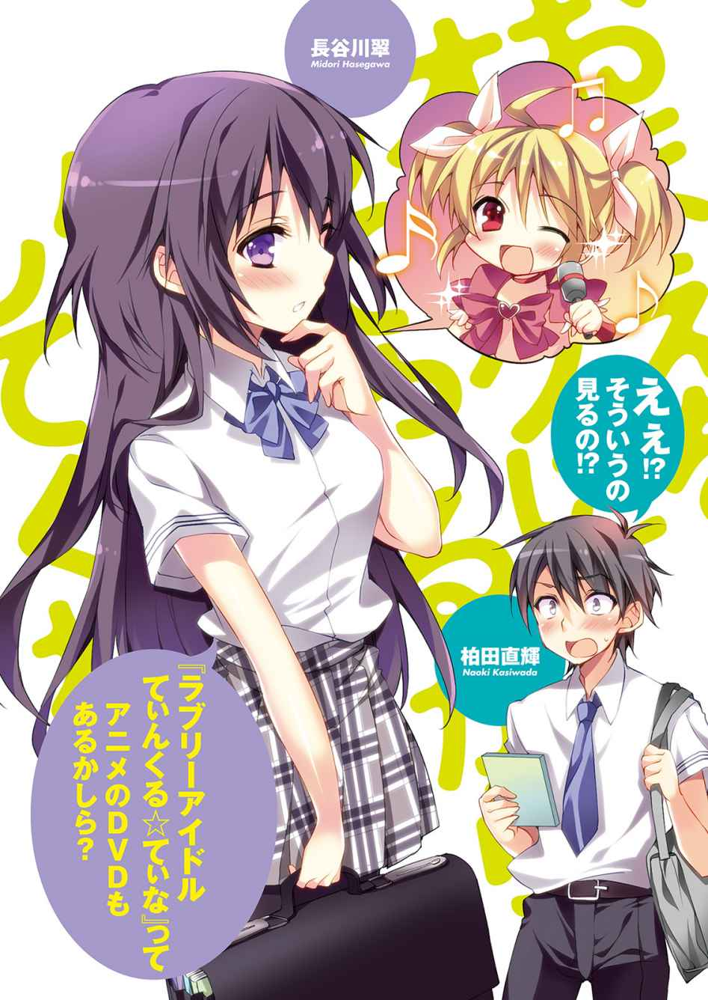

| おまえをオタクにしてやるから、俺をリア充にしてくれ！2 | |
| II ofおまえをオタクにしてやるから、俺をリア充にしてくれ！ | |
| 村上 凛 & あなぽん | |
| 富士見書房 (2011) | |

おまえをオタクにしてやるから、
俺をリア充にしてくれ！２
村上 凛

富士見ファンタジア文庫
本作品の全部または一部を無断で複製、転載、配信、送信したり、ホームページ上に転載することを禁止します。また、本作品の内容を無断で改変、改ざん等を行うことも禁止します。
本作品購入時にご承諾いただいた規約により、有償・無償にかかわらず本作品を第三者に譲渡することはできません。
本作品を示すサムネイルなどのイメージ画像は、再ダウンロード時に予告なく変更される場合があります。
本作品は縦書きでレイアウトされています。
また、ご覧になるリーディングシステムにより、表示の差が認められることがあります。
口絵・本文イラスト あなぽん
１
梅雨が明け本格的に夏が始まろうとしている。
世間では電気の節約が叫ばれ、我が家でもクーラーを一切使わずに扇風機のみで暑さを凌いでいるため、毎日もうとにかく暑くてやってられない。
俺は汗だくになりながら洗面台の鏡に向かい、眉毛を切り揃えることに全神経を集中させていた。
「直輝ー、昨日あんたの部屋掃除してたら変な本出てきたわよー」
「ぬはぁっ!?」
背後から浴びせられた母親からの不意の台詞に衝撃を受けて手元が狂い、一部眉毛を切りすぎてしまった。
あぁ、今みたいに不意に出る無意識の奇声がオタクっぽくてキショいとかどうせ言われるんだろうな、いやそれどころじゃない、俺の眉毛カムバック！ いや違う、それどころでもない、
「かっ、勝手に人の本見んなよ！」
変な本、と一言で言っても正直思春期の健全な高校生である俺にとっては心当たりがありすぎる。
先日買ったばかりの同人誌（勿論十八禁）だろうか。どれを見られたんだ、義理の姉モノだったらまだマシだ、怖いもの見たさで買ってしまった危ない趣向の方......あっちを見られたらマジで終わる！ ガチで危ない趣味の息子だと誤解されてしまう。
真っ青になって抗議しようとオカンの方を振り返った。
「これ、アンタが買ったの？」
苦笑いのオカンが手に持っていたのは、俺の予想に反してエロ本ではなく。
『モテ男バイブル』
「どぎゃ────！」
なんてことだ、エロ本を見られた方が百倍マシだ。
それは先日血迷った俺がうっかり買ってしまった恋愛指南書だった。
「直輝がこんなもん読むようになるなんて......お母さん嬉しいわ！」
「ちっちげえ！ たまたま友達にちょっと借りただけっていうか......」
買った後に気付いたがその本はサラリーマンを対象としていて、デートではいい店に連れていけだの、ホテルは一流のところにしろだの、いい車に乗れだの、高校生にとってはまるで見当違いなことばかり書いてありあまり役に立たなかった。
「直輝こんな本読んでんのお!? バカじゃないの!? 暑さで頭沸いたんじゃん!?」
オカンの手から本を取ってなぜか半ギレ気味に俺を非難してくるのは、妹のあかりだ。
「うっせーな！ 別にいいだろ！」
慌ててあかりの手から本を奪い返す。これ以上バカにされるのに耐えられない。
「ってやべっ！ もうこんな時間！ いってきます！」
今日もあまりうまく決まらないヘアセットと眉毛のまま、俺は慌てて家を出た。
俺は柏田直輝。高校に入学して約二か月半。
高校から隠れオタクになり、リア充モテ男になって、好きな女子と付き合うことを目標としていたが、ある人物にオタクであることがバレてしまい、ひょんなことから協定関係を結ぶことになった。俺がリア充になるための指導・協力をしてもらう代わりに、俺もその人物の目的達成のために協力するという協定だ。
駅から学校までのいつも通りの通学路を通り、学校にたどり着く。下駄箱で上履きに履き替えていると、横で女子四人の集団が話していた。
「桃爪超可愛い!? それ店でやったの!?」
「やー、自分でやってみた。店でやると高くない？」
「マジでー!? 本当に自分でやったの？ すげー！」
「今度あたしのもやってほしいんだけどー！」
......俺の苦手なものランキングベスト３以内には確実に入る、ギャルという人種の会話だった。
その集団の中に、見慣れた顔が混じっていた。
「こんなんで良ければ全然やるよー？ どういうのがいいの？」
恋ヶ崎桃。
誰もが目を引く美少女であり、茶髪に巻き髪・派手なメイクにネイルの、正真正銘のギャル。いつもみんなの中心にいて、（自分で言うのも悲しいが）ヒエラルキーの下層にいる俺とは、人生において絶対関わることのないはずの人物。......本来ならば。
俺がギャル集団に怖気づいて速やかに下駄箱から去ろうとしたとき。
「あ、ちょっと先行ってていーよ」
恋ヶ崎が他の女子生徒たちにそう言った。女子生徒たちは恋ヶ崎を置いて教室へ向かって歩き出す。
「......柏田」
「うおぉ!?」
あまりに驚いて声を荒らげてしまった。
先ほどまでギャルの中心にいた恋ヶ崎に話しかけられている。なんだか不思議な感じだ。
「変な奇声上げてんじゃないわよ、そういうところがオタクっぽいのよ」
「オ、オタクって言うな！」
俺は学校では隠れオタクを貫いているというのに。
「あんたに借りたゲーム、途中から全然進まなくなっちゃったんだけど......あれ超難しくない？」
「あぁ、確かにＲＰＧ初心者には難しいかもな......」
「なんで難しいって分かってて貸すのよ！ もっと簡単なやつにしてよ！」
「ああ？ お前が鈴木がハマってるゲーム貸してくれっつったくせに文句言うなよ！」
恋ヶ崎のことを、イマドキなギャルで、わがままで横暴で、恋愛とお洒落のことで脳味噌の大半を占めているであろう、脳が沸いてるスイーツ（笑）......だと思っていた。ついこの間までは。
自分でも信じられないのだが、俺が協定を結んでいる相手というのは......こいつなのだ。
俺たちが先日結んだ協定とは。
恋ヶ崎は『片思いの相手でありガチオタである鈴木爽太に近づくため、オタクになること』。
俺は『片思いの相手である長谷川翠と仲良くなるため、リア充モテ男子になること』。
というそれぞれの目標を達成するために、お互いに協力し合うという協定だ。
恋ヶ崎は俺をリア充モテ男子にすべく、お洒落のことやらモテについてを俺に教える。
俺は恋ヶ崎をオタクにし鈴木と仲良くさせるためのあらゆる協力をする。
俺と鈴木は友達同士だし同じオタクでもあるので、恋ヶ崎の目標達成のために力を貸してやることは可能だ。互いの利害関係が見事に一致したので、協力し合うことになった。
「芦田、今日学校来んのかな......」
教室へ行くべく階段を上りながら、恋ヶ崎に向かって呟いた。
芦田というのは同じクラスの不良男子生徒で、先日俺はなんとその不良と殴り合いの喧嘩をしてしまったのだ。
最終的に俺が逃げたので、芦田は俺に復讐しようとしているに違いない。
そう思って恐怖に怯えながら翌日登校したのだが、芦田は学校を休んだ。
その翌日も休んで、今日で三日目に突入する。元々学校に来たり来なかったりの不良生徒だったので休むことは珍しくないが、俺への復讐をせずに休んでいることを不思議に思っていた。
「あぁ、芦田のことならもう心配ないわよ」
恋ヶ崎の言葉に俺は驚く。
「美樹に言ったら、美樹がお兄ちゃんの名前出して芦田脅してくれたらしいの。美樹のお兄ちゃん元ヤンだから、芦田超びびってたって」
「マジで!?」
美樹というのは恋ヶ崎の親友である笹川美樹のことであり、少し不良っぽい女子生徒だ。
「笹川っていい奴だな......」
ここのところ毎日芦田に怯えていたが、もうそんな必要なくなるのか。まだ芦田が学校に来ていないので完全に安心し切ってはいけないのかもしれないが、とりあえずは安堵した。
「つーかそんなことはどうでもいいのよ」
恋ヶ崎が突如表情を歪ませた。
そんなこと？ 俺の生死が関わっているというのに。
「あんた......」
恋ヶ崎が俺の全身を舐め回すように見る。
何か俺の格好に変なところでもあるのだろうか。このパターンは確実に身だしなみダメだしパターンだ。もう何度も経験しているので分かる。
髪型がなってない、眉毛がおかしい、今まで何度ダメだしされたことか......今日は一体何を言われるのだろうか。
「シャツの下にオッサンみたいなランニング着てんじゃないわよ！」
恋ヶ崎が俺にびしっと人差し指を向けて怒りを露わにする。
「え......ランニング？ そこは盲点だった......でも下に何か着ないと肌透けるし......」
「当たり前じゃん！ 素肌に制服着るのはマジありえない！ でもランニングも同じくらいダメっ！」
「マジか......」
気づくと俺たちの様子を見て通りがかりの生徒がクスクスと笑っている。恥ずかしいことこの上ない。
「てかなんか眉毛も一部途切れてない!?」
「ああ、これは......オカンがいけないんだ！」
「はあぁ!? あんたお母さんに眉毛やってもらってんのお!? マザコン!?」
「ちげえ！ そういうことじゃねえ！」
言い争いながら歩いていると教室についたので、扉を開けて教室へ入る。
「桃てぃーおはー！」
教室へ入るとすぐに、恋ヶ崎の友人である笹川美樹が恋ヶ崎に声をかけた。
金髪に近い茶髪で少し不良っぽい印象のギャル。俺は正直怖くて苦手だが、今回の芦田の件に関しては感謝してもしきれないほどだ。
「美樹おはよー！」
恋ヶ崎がすぐに笹川の元へ駆け寄り、二人は抱き合った。常々思うのだが、女子ってなんであんなに同性同士のスキンシップが激しいんだろう。見た目に美しいからいいけれど、男同士だったらどんなに仲が良くても抱き合うだなんて考えられない。
見なかったふりをして席に着こうと、俺は窓際の自分の席へ足を進めた。
「あ、柏田ー」
が、笹川の声に呼び止められて振り返った。笹川に声をかけられることなど珍しいので驚いた。
「あのさ、話があるから休み時間ちょっといい？」
「えっ......い、いいけど......」
笹川の言葉に怯えた。
恐らく俺は、この笹川美樹に嫌われている。つい先日も声をかけられて、恋ヶ崎に近づくなと注意されたのだ。
またその類のことを言われるのだろうか。
「お前笹川とまで仲良くなったんか？ よく普通にしゃべれんなー」
席へ着くと、後ろの席の友人桐谷に声をかけられた。
「いや仲良くなんかねえよ、やべー何言われんだろ......」
恐怖に怯えながら鞄の中身を机に入れた。
その日、ホームルームが終わると芦田が遅刻で登校してきた。恋ヶ崎はああ言っていたものの俺は内心怯えてしまう。だが芦田は一度もこちらを見ることもなく、机に突っ伏して眠り続けていた。
ホームルームと一限目を終えて、五分休みになった。
「柏田ー」
声がして振り返ると、笹川が立っている。
笹川の後に続いて教室を出て、階段の踊り場まで連れていかれた。
「あの、話って......」
恐る恐る笹川の顔を見ると、
「柏田、ごめん！」
笹川は顔の前で手を合わせ、俺に謝ってきた。
「へ......？」
予想外の展開に気の抜けた声を漏らしてしまう。
「ほら、前に桃に近づくなとか言ったじゃん、あたし。てっきり柏田が桃にまとわりついてる的なイメージ勝手に抱いてたんだけどさ、桃に全部聞いたよ。普通に仲が良かったんだな、あんたら」
「え、えぇ？」
「しかも柏田、桃をかばって芦田と喧嘩したらしいじゃん。意外と男らしいとこあんだなー。マジ見直した！」
「え、いや、別に......」
笹川が俺のことをこんな風に認めてくれるだなんて、思ってもみなかった。
誉められてなんだか恥ずかしくなってしまう。
「これからも桃のこと、宜しく頼むぜ！」
笹川って、今まで苦手意識しか持っていなかったけど、友達思いのいい奴なんだな。前回恋ヶ崎に近づくなと言ってきたのだって、第一に恋ヶ崎のことを考えての行動だったのだと思う。
今日で、笹川に対する見方が大分変わった。
その日一日が経過しても、芦田は話しかけてくることはおろか、こちらを見てくることすら一度もなかった。俺は今度こそ心から安堵した。
リア充目指して高校に入学して二か月半。まだまだ全然駄目だけど、少しずつ、中学の時のオタク一筋で恋愛を諦めていた状態の俺からは成長できていると思う。
２
「げっ......」
期末試験の結果が手元に返ってきて、つい席で声を漏らしてしまう。
俺は普段、きちんと勉強すれば中の上くらいの成績はとれる。だが今回、インフルエンザになったり恋ヶ崎に迷惑がられていると誤解して落ち込んだり芦田と喧嘩したりととにかくもういろいろあって、ほとんど勉強をしなかった。
結果、惨敗だ。ほとんどの教科が平均点以下で、英語にいたっては赤点をとってしまった。
赤点をとった教科は近日中に追試がある。その追試に合格しなければ、夏休み中に補講に参加しなければならなくなってしまう。
「お前英語赤点だったろー？ 後ろの席から丸見えだぜ」
後ろの席の桐谷がからかうように言ってくる。
「うっせ、そういうお前は英語何点だったよ？」
「三十二」
「変わんねえじゃん！」
ちくしょう、桐谷がいい成績だったら教えてもらおうと思ったのに。
「あー追試どうしよー！」
俺は頭を抱えて机に突っ伏す。
「恋ヶ崎に教えてもらえば？ あんだけ仲良さそうなんだし」
「こい、が、さき......？」
恋ヶ崎って、あの恋ヶ崎か？
「あいつ頭いいの？」
「お前何聞いてんだよ、長谷川ほどじゃないけど恋ヶ崎も上位成績優秀者として何度か名前呼ばれたりしてんだろ」
「マジで？」
意外だった。あの恋愛のことしか考えていなさそうな頭でそんなに成績がいいだなんて。人は見かけによらないとはよく言ったもんだ。
次の休み時間、俺は早速恋ヶ崎が誰とも話していないタイミングを見計らって、速やかに恋ヶ崎の席まで行き、声をかけた。
「ちょ、ちょっといいか？」
「えぇ？ 何よ」
以前は恋ヶ崎に教室内で声をかけることすら無理難題だったが、さすがに最近はそのくらいはできるようになってきた。俺も成長したな......。
そのまま席で話すこともできたが、教室を出るよう恋ヶ崎を促した。
以前恋ヶ崎と俺の仲を芦田に妬まれたことに反省して、俺は極力教室内で恋ヶ崎と話さないよう気をつけることにしたのだ。
階段の踊り場まで移動し、早速本題に突入する。
「お前、結構成績良いらしいな。英語何点だった？」
「はぁ？ 何よいきなり。別に成績良くないし。ってか突然そんなこと教えるわけないでしょ？」
なぜかいきなり不機嫌だ。どうしたものか。
「ちなみに俺は二十八点だった！ 俺が言ったんだからお前も言え！」
「何よその理屈！ って赤点じゃん、うっわー」
「そうだよ赤点なんだよ、単刀直入に言う。勉強教えてくれ」
まどろっこしいのはめんどくさくて、直球で恋ヶ崎に頼んでみた。
「えー......無理ね」
「瞬殺かよ!? 血も涙もない女だな！」
確かにこいつが自分に何の利点もないのに俺に何かしてくれることなどありえないとは分かっていたのだが、少し期待していただけにかなり落ち込んだ。
「違うわよ！ あたし、英語だけは苦手であんまり点数よくなかったのよ。勿論赤点なんかではないけど、あんたに教えられる程の成績ではなかったの」
そういうことか。もしかしてそれで機嫌が悪いのだろうか？ なんとも分かりやすい奴である。
「あ、そーだ、長谷川さんに勉強教えてもらったら？ 学年一位とかマジすごいよね！」
「んなっ！」
そこで突然、俺の片思いの相手である長谷川翠の名前を出されて戸惑う。が、今の発言に気になるところがあったことに気付く。
「......学年一位？」
「何あんた、掲示板に貼り出してあったの見てないの？」
うちの学校は成績優秀者上位十名だけ掲示板に順位と名前と点数が貼り出されることになっている。絶対に上位十位以内なんかに入っていない自信のあった俺は、見てすらいなかったのだ。
「長谷川って学年一位だったのか!? マジすげーな！」
今まで相当頭がいいんだろうなあ、程度にしか思っていなかったが、ここへ来て予感が確信へ変わった。まさか、学年一位をとる程だなんて。
「ダメもと勉強見てもらえるよう頼んでみたら？」
「......むっ、無茶言うなよ！」
確かに学年一位の長谷川に英語を教えてもらえたら申し分ない。距離も近づけるかもしれないし一石二鳥だ。だが......。
「そんなの無理に決まってんだろ！ まだほとんど話したこともないのにそんなこと頼むなんてずうずうしいにもほどがある！」
「もーヘタレ！」
「んなこと言ったってなあ......」
俺の最終目標は長谷川に好きになってもらい付き合うことである。こんなところでずうずうしい人間だと思われてフラグを折ってしまうわけにはいかない。
「追試はないけどあたしも長谷川さんに英語見てもらいたいな～......あ、長谷川さん！」
恋ヶ崎が指さした先には教室から出てきた長谷川がいた。
「ほら、早く行きなさい！」
「あぁ～!? だから無理だって......」
恋ヶ崎に文字通り背中を押され、とりあえず長谷川の至近距離まできてみた。
「あ、長谷川......」
どこかへ行こうとしていた長谷川がこちらへ振り返る。
いつも通りの無表情で言葉はない。
「あ、いや、その......」
だめだ、やっぱ全然仲良くもないのに突然勉強教えてくれとか無茶だ。
「あ、が、学級委員の仕事に不便はないか......!? 困ったことがあったらいつでも言ってくれ！」
とんでもなく的外れなことを言ってしまった。
長谷川はキョトンとした顔になって、戸惑いながら、
「えぇ、ありがとう......」
と言った。
「長谷川さん！」
そこへ、恋ヶ崎が俺の背後から突然顔を出して長谷川に声をかけた。
「すごいねー！ 学年一位でしょ？」
俺が言いたくても言えずにいた本題にあっさりと突入した。
「あたし英語苦手でさー......もし良かったら、今度勉強教えてくれないかな!?」
「......私に、勉強を？」
恋ヶ崎のその発言に長谷川は酷く驚いた様子だったが、それは俺も同じだった。
「うまく教えられるかどうか分からないけど、それでも良ければ......」
「本当に!? ありがとう！」
恋ヶ崎が長谷川に勉強を教わる......？ 一体どんな展開だ？
俺が頭に疑問符を浮かべていると恋ヶ崎に踵の辺りを軽く蹴られた。
あ、もしかして、そういうことか？
「あ、あの！」
少し戸惑いながら俺は口を開く。
「よ、良ければ、俺も教えてもらっちゃ駄目かな!?」
恋ヶ崎がくれたせっかくのチャンスを棒にふるところだった。
「私でいいなら......」
長谷川は無表情のまま、だけどすんなりと承諾してくれた。
「あ、ありがとう！」
それから日にちを決めようとしたところ、長谷川がいつでも構わないと言ってくれたので早速今日の放課後教えてもらうことになった。
話が終わり、長谷川が「それじゃあまた放課後」と言って俺たちの前から姿を消した。
完全に長谷川が俺たちから離れたのを確認してから、恋ヶ崎に、
「あ、ありがとうな」と言った。
「自分でそんなことも言えないって、マジあんたどんだけヘタレなわけ？ ほんっと信じらんない！」
呆れた目で俺を見てから、奴はさっさと教室に入っていった。
この間からちょいちょい思ってたけど、もしかしてあいつって、本当はいい奴なのかもしれない......。
待ちに待った放課後がやってきた。
帰りのホームルームが終わり長谷川の席で長谷川と恋ヶ崎が話していたので、俺も慌てて帰り支度を済ませ二人の元へ行く。
「あ、柏田。図書室で勉強教わることになったから移動するわよ」
「お、おう」
教室を出る際クラスメイトの男たちからの視線を感じた。考えてみれば当然だ。クラス......いや学年、下手したら学校で一番可愛い女子二人と、クラスのヒエラルキー最下層にいる俺なんかが行動を共にするだなんてはたから見たら異常な光景である。
俺は二人の後に続いて野郎共の視線から逃げるように教室を出た。
我が校の図書室は割と広く、静粛にせねばならないコーナーと私語してもオーケーなコーナーと二つに仕切られている。
俺たちは私語オーケーなコーナーのテーブルに荷物を置いてそれぞれ着席した。
長谷川と恋ヶ崎が隣同士、長谷川の向かい側に俺が座る。
こんな至近距離に長谷川がいるだなんて、既に勉強どころでない程にそわついてしまう。
「具体的に苦手な部分とかあるの？」
席についてすぐ、長谷川が俺たちに尋ねた。
普段自分から話すところなど見たことがないので、意外だった。
「あ、あたし関係代名詞ってのがイマイチよくわかんなくて......」
俺が何も答えないでいると、恋ヶ崎がそう答えた。
長谷川と恋ヶ崎が教科書の関係代名詞の項目を開く。慌てて俺も二人の開いているページを開いた。
「長文だけど二つの文として分けて考えれば分かりやすいわ」
「へ～なるほど！」
「前の文と後ろの文分けてだったら訳せる？」
「うん、前の文は『それは本です』後ろは『彼女はよく読んでいる......』」
「その二つをこの関係代名詞で繫げるのよ」
「そっかぁ！ じゃあつまり......」
長谷川って意外と話すんだなあ......こんなにたくさん話してる長谷川見るのは初めてだった。
近くで見れば見るほど髪は綺麗だし肌も真っ白......恋ヶ崎も可愛いけど、長谷川は本当に正統派美少女って感じで......。
「ちょっと柏田！ ちゃんと聞いてたの!? 長谷川さんがせっかく教えてくれてるのに」
「えっ!?」
やべっ、全然聞いてませんでした......。
「柏田君は分からないところある？」
長谷川に初めて名字を呼ばれてしまった！......じゃない、せっかく長谷川が俺のために問いかけてくれているのだ、早く答えないと......。俺は教科書に目を落とす。しかしどうしたことか、分からないところが分かりません......。
とにかくもう俺は英語が大の苦手で、勘と中学時代に培ったもので二十八点とれたようなものなのだ。
「え、えーっとえーっと......」
動揺しながら教科書をパラパラとめくる。
「あ、この辺よく分かんないかも......」
特にさっぱり分からなかったページを開いた。
「これは......だから、......で......」
あの長谷川が、俺のために勉強を教えてくれているだなんて信じられない。罰が当たらないだろうか。動悸がずっと止まらない。
「......分かった？」
......やべえ、またもや緊張しすぎてほとんど頭に入ってこなかった......。
だがまさか本当のことなど言えるはずもない。
「あ、あぁ......」
こともあろうか、分かったフリをしてしまった。
「長谷川さん！ さっきの関係代名詞だけどさ、じゃあこっちはこういう風な訳になる？」
「ええ、そう。あってるわ。完全に理解できてるわね」
「長谷川さんの教え方が上手いんだよ～！ じゃあさじゃあさ、こっちは......」
長谷川と恋ヶ崎は結構打ち解けているようだ。それに恋ヶ崎はどんどん理解を深めている。
そんな調子で、約一時間半の勉強会は終了した。
何度か長谷川に教えてもらえたものの、あまりの緊張と動揺でほとんど頭に入っていかなかった。
それにどんどん理解している恋ヶ崎の横で、全く理解できない自分が恥ずかしく、質問なども積極的にできなかった。
「本当にありがとね、長谷川さん！ あたし今日でかなり理解できた気がする！」
勉強道具を仕舞いながら、恋ヶ崎は清々しい笑顔を浮かべていた。あまり理解できなかった俺にとって、心から羨ましくて仕方ない。いや、自業自得なのだが。
「柏田あんたちゃんと理解できたの？ 追試平気そう？」
「ちょっ、おま......」
赤点をとってしまったという情けない事実、長谷川に隠しておきたかったのに。
「......追試？」
長谷川がその単語に反応する。
「あ、あぁ......でも今日長谷川に教わったし、大丈夫大丈夫！」
俺は無理して笑顔を作った。
そのとき、長谷川が俺を見た。
俺の『大丈夫』という噓が見破られたのかもしれない。長谷川の鋭い視線は全てを見透かしているかのように思えた。
せっかく教えてもらったのにほとんど理解できなかったという情けない事実を、長谷川に見抜かれているのかもしれない。
教えたことを何も理解していなかったくせに大丈夫なんて噓をつくなんて、と長谷川に軽蔑されたような気がした。
その場で俺も長谷川に礼を言って、俺たちは図書室で解散した。
俺の胸には罪悪感と自己嫌悪が強く残った。
＊
翌日の放課後、俺は図書室で一人勉強をしていた。
勿論教科は英語だ。このままでは追試でも不合格になって、夏休み中補習になってしまう可能性大だ。
それだけはどうしても避けたい。夏休みは遊びたい。できれば、長谷川も誘って......。
そのためにはどうしても追試で合格せねば。勉強を教えてくれた長谷川のためにも。
「柏田君」
声に驚いて振り返る。そこにいたのは、思いがけない人物だった。
「は、長谷川!?」
「探していたの」
長谷川は俺の座るテーブルまできて、テーブルの上に自身の鞄を置いた。鞄の中から何やら数枚のプリントを取り出した。
長谷川が、俺のことを探していた？ 一体何のために？
「これ、さっき恋ヶ崎さんにも渡したんだけど......」
それは、英語のノートのコピーのようだった。
綺麗な字で今回のテストの範囲がまとめられている。
「私が今回のテストのために自分でまとめたノートなの。余計なお世話かもしれないけど......」
「マジでっ!? うわ、すげえ助かる！ 本当にいいの!? ありがとう！」
俺はあまりの感動に今起きている出来事が信じられなかった。長谷川が、わざわざ俺のためにこんなことをしてくれたなんて......。
「もし的外れだったら悪いんだけど......柏田君、昨日の私の説明ではあまり理解を深められていないように思えたから......」
やっぱりバレてましたか！
あまりの気まずさに長谷川から目を逸らしたくなる。
「......その、私今まで人に教えたこととかなかったから......分かりにくかったわよね」
「え......？」
長谷川は申し訳なさそうに俯いている。
俺は長谷川の発言に心底驚いた。
長谷川は、俺が長谷川の説明を理解できなかったことに対して怒っていたわけではなく、自分自身に責任を感じていたっていうのか。
「いや、違うよ！ 長谷川の教え方は上手いって恋ヶ崎も言ってたし。俺がバカで理解できなかっただけなんだって！」
慌てて全力で否定する。
長谷川は俺の言葉に驚いているようだった。
「......柏田君、良かったら、昨日あまり上手く教えられなかったお詫びに、今日も英語教えましょうか？」
「えっマッマジで!? いやそれすっごい助かる、ありがとう！」
長谷川に二日連続で勉強を教えてもらえるだなんて......しかも今日は二人きりで！
真面目に学校に通っているとこんなラッキーなこともあるもんなんだなあ。
......いや、ラッキーなんかじゃない。長谷川がわざわざ、昨日のことを気にして、俺を探してここまで来てくれたんだ。
ノートをコピーしてくれたり、長谷川ってやはり、無愛想なだけで、本当はすごく優しい女の子なんだ。
それから俺は下校時刻になるまで約二時間、長谷川に英語をみっちり教わった。
昨日みたいに理解できない箇所も多数あったが、今度はきちんと「分からないからもう一度教えてくれ」と伝えることができた。
昨日ほど動揺せずに長谷川と接することができた俺は、長谷川の教え方が上手いこともあって、昨日よりきちんと理解することができたように思う。
気づくと下校時刻十分前になり、下校の音楽が鳴り響いた。
「長谷川、マジでありがとう！ 昨日と違って今日は大分理解できた！ あとは長谷川にもらったノートのコピーを参考に、土日家で一人でやってみるよ！」
「なら良かったわ」
長谷川は無表情のまま帰り支度を始めた。
「じゃあ私はこれで......」
長谷川は昨日と同じように、図書室で俺に別れを告げようとした。
「あ、ちょ、ちょっと待って！」
俺は無意識に長谷川を引き止めていた。
「......？」
「いやあの、......ももももし良かったらなんだけど、一緒に帰らない？」
意を決して長谷川を誘った。
このまま図書室で別れるだなんて寂しいと思ってしまったのだ。
「私と？......別に、構わないけど」
長谷川は不思議そうにしてたけど、承諾してくれた。
断られるかとびくびくしていた俺はとても嬉しかった。
そこまでは良かった。
問題はその後だ。
俺たちは学校から駅までの道のりを歩いている。ただひたすら、無言で。
自分で誘ったはいいが、俺は長谷川相手にどんな話題を振ったらいいのか分からずにいた。さっきまでは勉強を教わっていたからすらすら話すことができたが、何もなくなってしまった今、非常に困っていた。
「え、えっと、長谷川って、中学どこ？」
「......地元の公立」
「そっか～」
会話終了。
いやまて、終わらすなよ俺。ここからいくらでも広げられるんじゃないか？ でも個人情報聞きまくって気持ち悪いとか思われたら嫌だし。とっさにモテ男バイブルの内容を思い出す。会話の中でさりげなく次のデートに繫げるようにしろとか書いてあったっけ......無茶言うな。
ふと気づくと、長谷川が一点を見つめていた。
長谷川の視線の先には、レンタルショップがあった。
「ＴＳＵＴＡＹＡ寄りたいの？」
「え？ えっと、いつも入ってみたいとは思っていたんだけど、入ったことなくて......」
「入ったことないの？ カード作ればすぐレンタルできて便利だよ」
「カード？ それって簡単に作れるの？」
「もちろん！」
俺と長谷川はＴＳＵＴＡＹＡに入店した。長谷川は少々戸惑っているようだ。
いつものくせでアニメコーナーへ向かいそうになった自分の足を慌てて止める。
「わあ、こんなにＤＶＤがたくさん......」
レンタルショップ自体あまり来たことがないのか、長谷川は陳列されたＤＶＤを見て驚いていた。
「長谷川何か借りたいものあるの？」
「ええっと......お笑いものとかもあるのかしら？」
長谷川が、お笑い!? 意外すぎる。
俺は動揺を抑えつつ長谷川をお笑いＤＶＤのコーナーまで連れていった。
「あ、これ......」
長谷川がすぐに手にとったのは、『仁志松田のすべってはいけない話』だった。
「あ、これもあるのね！」
次に手に取ったのは、『リンケーン』......生粋のお笑い好きなのだろうか？
気のせいか、長谷川は学校にいるときよりも少しテンションが上がっているように見える。もちろん普通の女の子のテンションと比べたら相変わらず低いしクールなのだが。
散々迷った挙げ句、長谷川は『すべってはいけない話』をレンタルすることに決めたらしい。
「あ、そうだ。もう一つ......『ラブリーアイドルてぃんくる☆てぃな』ってアニメのＤＶＤもあるかしら？」
俺は驚きのあまり後ろに倒れそうになるのを必死に堪えた。
「えぇ!? 長谷川、そういうの見るの!?」
驚きのあまり声が大きくなってしまった。ああ、こういうオーバーリアクションなところが、オタクっぽくてキモいとか恋ヶ崎がいたら言われてしまうのだろう。
「いえ、妹が見るのよ」
「あ、な、なるほど......」
『ラブリーアイドルてぃんくる☆てぃな』は土曜の朝に放映している幼女向けアニメだった。大きいお友達人気が高すぎるためについつい幼女向けということを忘れてしまうが、ちゃんと本来のターゲットである幼女にも人気があったのか。
それから長谷川は『ラブリーアイドルてぃんくる☆てぃな』の一巻と『すべってはいけない話』のＤＶＤを持ってレジに向かった。
カードを作り、無事レンタルすることができたようだ。
俺は金欠プラス追試までは勉強しなければいけないため、何もレンタルしなかった。
「長谷川って、お笑い好きなんだ？ 意外だね」
「ええ......勉強のために見たのがきっかけだったのだけど、案外面白くて」
......勉強？ 何の？ だが、当然のようにさらっとそのセリフを吐いた長谷川に、なんとなく質問することができなかった。
「あ、長谷川って妹いるんだ？」
「えぇ」
「年いくつ？」
「もうすぐ六歳になるわ」
「へぇ～。長谷川って面倒見良さそうだね。子供好きそうだよね」
入学式のとき長谷川が転んだ小さい子を起こしてあげた様子を思い出して言った。
「そう？ 子供好きそう、って初めて言われたわ......」
長谷川は変わらぬ無表情だったが、少し驚いているようだった。
確かに普段の無愛想な長谷川からは、子供が好きそうとはあまり思えないかもしれない。
そんな会話をしているうちに駅にたどり着いた。
レンタルショップに寄ったおかげで結構話しやすくなり、その後気まずい空気にはならなかったので心から安堵する。
「じゃあ私、地下鉄だから」
「あ、あぁ......勉強教えてくれて、ありがとう」
長谷川はいつもの無愛想な様子で軽く会釈して、地下鉄の乗り場に向かって歩き出した。
もう少しで、長谷川と打ち解けられたような気もするのに......と少し寂しく思う。
そこで、長谷川の足が止まりこちらへ振り返る。俺が歩き出さずに長谷川の後ろ姿を見つめていたことがバレてしまった。
「あの、柏田君。......寄り道、楽しかったわ。私、寄り道したの初めてだったから......ありがとう」
長谷川は少し照れているのか、俯き加減にそう呟いた。
「い、いや、こっちこそ楽しかったよ！ もし良かったら......もし良かったら、また寄り道しよう！」
興奮のあまり早口にそう返した。
長谷川からそんなことを言ってもらえるなんて。感激してしまう。
長谷川は俺の言葉に少しだけ微笑んで、去っていった。
今日の出来事を胸に、追試までの勉強を頑張ることを心に誓った。
その翌日の土曜と翌々日の日曜、俺は家で長谷川からもらったノートのコピーを参考にひたすら勉強した。
その翌日の週明け月曜日、ついに追試当日を迎えた。
俺は学校でも放課後の追試に向けてひたすら勉強をしていた。
休み時間、トイレへ行こうと廊下を歩いていると、前方から長谷川が歩いてきた。
学級委員の雑務中なのか、大量のプリントを手に持っている。
長谷川に、今日追試であることと、頑張るという決意表明をしようかななんて一瞬思ったが、なんかわざわざ言うのもうざいよなあと思ってやめた。
そのまますれ違おうとしたとき。
「追試、頑張って」
驚いて振り返った。長谷川は俺の方を見ていなかった。だけど、今の声は確実に長谷川のものだ。今日が追試の日だということを把握してくれていたなんて。
「あ、ありがとう、頑張るよ！」
長谷川の後ろ姿に向かって声を投げた。長谷川は振り返らなかったけど、俺は心の中で大きくガッツポーズを決めた。
確かな手ごたえを感じつつ、無事追試を終えた。
もう勉強しなくてもいいという解放感にひたると同時に、結果が早く知りたいような、ちょっと怖いような、複雑な気分になった。
３
翌日の放課後、俺は自分の隣のクラスであるＢ組にいた。
隣のクラスのオタク友達で恋ヶ崎の想い人である、『鈴木爽太』とだべっている真っ最中だった。鈴木はどう見てもイケメンリア充なのに、俺よりも濃いガチオタであるというなんとも珍しい人種だ。
恋ヶ崎に仲を取り持つよう言われているが、話が合うしすごくいい奴なので、恋ヶ崎云々を抜きにしても今後も仲良くしたいと思っている。
俺と鈴木は鈴木が昨日本屋で買ったばかりだというアニメ雑誌をパラパラと見ていた。放課後で教室に誰も人がいないので、オタク的なものだって見放題である。
奴は最近になって元々茶色だった髪をさらに明るく染め（本人曰く、『夏だから』とのこと。恋ヶ崎もこの間『夏だし髪色明るくしよっかな～』とか言ってた。リア充は夏になると髪を明るくしたくなるらしい）、我が友人ながらよりイケメンっぷりに磨きが掛かった。
アニメ雑誌を見ているところすら絵になるのだから腹が立つ。いや、もはや比べる対象にもならないので腹が立つなんてこともないな。ただただ自分のダサメンっぷりが情けなくなるってだけだ。
俺はといえば、ここのところすっかりお洒落をさぼっている。いや、髪のセットや眉毛の手入れは行っているが、我ながら以前から全くレベルアップしていないように思う。
というのも、ここのところいろいろあってお洒落にまで気が回らない。そしてもう一つ、服を買う金はおろかファッション雑誌を買う金もないというのが正直なところだ。ああ、なんでこんなに金がないんだろう。貧乏もここまでくるとかなり深刻な悩みと化す。
「いやーやっぱ『サイキッカーズ』は今期最高のアニメだよね～」
鈴木が無邪気な笑顔で俺に向かって言った。
『サイキッカーズ』というのはこの七月から放映されているアニメで、今期アニメの中で現時点でのブルーレイディスクとＤＶＤの予約売り上げランキングの順位が既に一番上位の作品である。超能力者である主人公がスーパーヒーローに変身し、能力を駆使して悪と戦う近未来変身ヒーローもので、主人公の他にもありとあらゆる超能力を持ったキャラクターがスーパーヒーローとなり、主人公と共に敵と戦うという物語だ。個性豊かなキャラクターと凝ったストーリーが男女共に人気の作品となっている。
「あぁ、そうだな。めっちゃ面白いよな」
「カッシー、俺今すっげ～悩んでるんだけど......」
「何が？」
「俺、サイキッカーズのコスやりてーんだよね！」
「コスプレ!? と、唐突だな」
鈴木の突然の主張に少々驚く。男がコスプレって、あまりイメージが湧かない。
「まあ、確かにお前似合いそうだけどな、主人公の相棒のジーンのコスプレとか」
ジーンはイケメンかつ年齢も若い設定で、イケメンの鈴木がコスプレをするにはぴったりだと思った。
「そっちじゃなくて俺がやりたいのは、主人公の益明の方のコスプレなんだけどね」
益明は主人公であり、非公開だが結構年齢がいっている設定だ。キャラクター的には熱血で格好良いが、鈴木がやるならイケメンのジーンの方が似合いそうな気がする。
「まあ、お前イケメンだし何やっても似合いそうだけどなー」
「他人事みたいに言ってるけど、カッシーもやろうよ！ ジーンコスで俺と合わせ！」
「はぁあ!?」
鈴木の突然の提案に飲んでいたペットボトルの炭酸ジュースが気管に入ってむせた。
「がはっゲエホッゲホゲホッ」
「今月の三十日に、ビッグサイトの隣のＴＦＴとかいうビルで、コスプレ博っていう結構でかいコスプレイベントやるらしいんだよね。姉貴が言ってた。三十日だったらまだ三週間以上あるから準備できるし、一緒にコスやろうよー！」
「俺がイケメンキャラとか、女オタがマジ切れすんだろ......」
「いやいや、俺結構似合うと思うんよねー！」
鈴木の一点の曇りもない真剣な表情は、適当にお世辞を言っている風にも見えないので困ったもんだ。
「う～ん......まあ、整形できる金ができたら考えとくよ......」
「ちょっとー！ 俺は真面目に言ってんのにー！」
それからも鈴木にコスプレをやろうと説得されたが、俺は適当に流した。
俺がコスプレ......そんなこと考えたこともなかった。しかも俺の顔面で女に人気があるイケメンキャラのコスプレだなんて、夜道に背後から刺されても文句が言えないレベルだろ。
「あ、そういえばカッシー、今月の『萌えキュン』買った？」
「あー俺、先月一番好きだったやつ終わったから買ってねえや。金もねえし」
今鈴木が口にした『萌えキュン』は、月刊の萌えコミック誌のことだ。サービスシーンは多いが成年向けなどではなく、全年齢向け少年マンガ誌で、俺も鈴木も読んでいる雑誌なのでよく話題に出る。
「やっぱり？ 最近『萌えキュン』面白くないよねー、なんか同じような漫画ばっか」
「分かる分かる！ 突然主人公の元に現れた地球外生命体の謎の美少女、それに嫉妬する幼なじみ、みたいな？」
「そうそうそう！ それでも面白きゃいいけど、萌え重視で全部テンプレハーレム展開なんだよね～！」
そんな展開もういやってほど読み尽くしているので、よっぽど他で優れた点がない限り面白いと感じられない。
例えば絵がめちゃくちゃ好みだとか、めちゃくちゃ好みのキャラがいるとか、とにかくエロいとかだったら話はまた変わってくるけども。
そこで携帯のバイブが鳴った。
「あ、ごめん俺だ」
鈴木が携帯を耳に当てる。どうやら電話だったようだ。
「もしもし？ え、今学校......はあああ!? いや無理だって、え......いやいや！ あ──......分かった！ 分かったよ、行くって！ 行けばいいんだろ！」
途中から半ギレ状態になりながら、鈴木は会話を終えて電話を切る。
「わりいカッシー、姉貴に呼び出しくらっちまった......」
鈴木は姉に、どういう事情があってか服従させられているようだ。
今の様子だと、何か弱みでも握られているのだろうか。
「ああ、いいよ。お前も大変だな」
「悪い！ この詫びは今度必ず！」
鈴木は言いながら帰り支度を済ませ、俺に手を振ってダッシュで教室を後にした。
俺は自分の教室に荷物をとりに戻る。
ある日突然、ありえない髪の色をしてありえない瞳の色をした......地球外生命体のとんでもない美少女が、空から降ってこないかなあ、とか。
もう少し現実に近付けるとしたら、ある日突然血の繫がらない美人な姉貴ができるとか、十年前に別れた可愛い幼なじみが俺を訪ねてやってくる、とか。
中学の頃まではそんなことが起きないかなあと割と本気で考えていた痛い時期もあった。でも十五年間生きてきてそんなことは一度も起こらなかったし、これから先も起こるはずがないことは心のどこかでは理解している。
だからちゃんとお洒落してリア充になって、可愛い彼女を作るために必死に頑張らなくちゃいけないのだ。
だけど、未だにもしかしたらそんな奇跡が起こりえないかな、だなんて期待している自分がいるのも事実で。だってそうでも思わなければ、やっていられない。
教室に戻り鞄を背負ってふと携帯を見ると、メールが一件入っていた。メールが来ることなどめったにないので、どうせまたメルマガか迷惑メールだろうと思いながら携帯を開くと、画面に『恋ヶ崎桃』の名が表示された。
『そぅいえばあんた、追試どぅだったの？ せっかくあたしのおかげで長谷川さんに勉強教えてもらえたってゆぅのに、不合格とかだったらまぢ許さないし』
こいつなりに、俺を心配してくれているのだろうか。
小文字がところどころに入っていて読みにくいことと、デコメも満載で俺の携帯のデータフォルダに勝手にデコメが保存されてウザいことに目を瞑れば、ありがたいことである。
追試か......俺は持てる力を全て発揮したが、結果は正直いまいち分からない。
『微妙』
それだけ打って返信した。
すると一分もたたないうちに返信が来る。こいつの返信の速さには、携帯メール依存症を疑わずにはいられない。
『その顔文字キモぃ』
そこかよ!?
顔文字をいれないとダサいとか言われると思って、頑張って普段入れない顔文字を入れてみたというのに。
俺もすかさず返信メールを打つ。
そこで、ふと気づいた。
高校に入学してから、女子と帰りに寄り道したり、勉強を教えてもらったり、メールのやりとりをしたり。
中学の頃の俺からは考えられないことばかりだ。
この調子でいけば、リア充への道のりだって、決して遠くないんじゃないだろうか。
異次元から美少女なんかやってこなくても、いつの日か自分なりの幸せを摑めるんじゃあないだろうか。なんて、感慨に耽りながら階段を下りていると、
「ど、どいて──────ッ！」
背後から叫び声にも近い女性の声が聞こえた。
振り向く間も逃げる間もないまま、背中に突然勢いよく重みがのしかかる。
重みに耐えられず俺は五段程階段を滑り落ちて倒れた。
「いって......」
上半身を起こす。腰を打ったようで痛みが走った。
次の瞬間、俺の目の前に飛び込んできたものは......。
パンツ。
水玉模様のパンツ......を穿いた女の子が俺の横に倒れていた。
ミニスカートが捲れあがってパンツが丸見えなのである。
やっぱり三次元の女の子は縞パンなんて穿いてないのかあ、なんて思考が一瞬だけ浮かんだが、女の子の姿を見てすぐそんなことはどうでもよくなった。
彼女は、銀髪だった。
金髪だったら、まだ分かる。ほとんどありえないが、不良の生徒が綺麗に脱色してそんな髪色になることもありえるかもしれない。
しかし、銀髪だ。人間としてあり得ない髪色である。
さらに彼女の服装。白い軍服っぽい服だが下はミニスカートなのだ。こんな奇想天外な服装、三次元では生まれてこの方見たことがない。
そしてさらに付け加えるのであれば、彼女の容姿。
気絶しているようで目を瞑っているが、かなり整った美しい顔をしている。
肌は綺麗で銀色の髪もサラサラ。睫も長く、鼻筋も通っている。華奢な割に胸が大きく、水玉パンツから生えている足はスラリと細い。美少女でスタイルも抜群なのだ。
「降ってきた......」
俺は無意識に、呟いていた。
「地球外生命体の美少女が、降ってきた──っ！」
つい先ほど、ありえないと思っていた出来事が現実に起こってしまった。
この目の前で倒れている美少女は、どこをどう見てもこの世の者ではない。
「ん......」
俺が叫んだためか美少女が目を覚ましてしまった。
起き上がり俺を見る。
その姿にさらに驚いた。目を開けるとより一層美少女で、さらに......その瞳は、赤かったのだ。
「きゃ、きゃああああ────！」
彼女は二次元ではお約束な反応というか、自分の下着が丸見えになっていることに気づき悲鳴を上げてスカートを押さえ、下着を隠した。
「あ、あの！」
俺が話しかけようとするのも無視して、彼女はそこら中に散らばった自身の鞄と制服らしきものを慌てて拾い、すごい勢いで走り去っていった。
「宇宙人？ はたまた異世界人？ 地球の言語が分からないのか？」
俺は彼女の後ろ姿を見つめながら尻餅をついたままの状態で、自分でもわけのわからんことを口走っていた。
──いや、でもそういえば最初におもいきり「どいて」って日本語話したよな......。
しかも、うちの学校の鞄と制服を拾ってたし、うちの学校の生徒なのか？
混乱状態のままとりあえず立ち上がると、俺の前方に何かが落ちていることに気づいた。
拾い上げると、それが生徒手帳であることが分かった。
果たして今の美少女が落としたものなのか......。
とりあえず明日、この生徒手帳は持ち主に返そうと思い、生徒手帳を鞄に仕舞った。
＊
翌日の放課後、俺は生徒手帳の持ち主のクラスへ生徒手帳を返すために向かおうとしていた。が。
「柏田、付き合って欲しいところがあるの！」
恋ヶ崎が、わざわざ俺の席までやってきた。
「えぇ？ ちょっと待て......」
どうせ鈴木絡みなんだろうなあと思いながら、慌てて鞄を背負い教室を出る恋ヶ崎の後を追う。こいつが鈴木絡み以外で俺に声をかけてくることなど、めったにないのだから。
「え、何？ なんか他に用でもあるの？」
恋ヶ崎がピタッと足を止めてうざったそうに俺に振り向いた。
あぁ、抵抗するのも面倒だし、生徒手帳は明日でいいか。持ち主よ、許してくれ。
「別に。で、どこに行くんだよ？」
「あたし考えたのよ。あんたにオススメの漫画とかアニメとか聞いて見てみてもイマイチ面白いと思えない理由」
廊下を歩きながら恋ヶ崎は突然そんな話を始めた。
「おい、そういう話こんなところですんなよ」
俺は慌てて周りを見回す。生徒がちらほら歩いているのだ。隠れオタである俺のことも少しは考えて欲しい。
「え、ああ、一応隠してるんだっけぇ？ あ、そう、それで、理由が分かったの！ あんたが男だから、男目線で見て面白いと思うアニ......面白いと思うものを薦めてくるわけでしょ？ 問題はそこなのよ。女から見て面白いものと、男から見て面白いものって結構違うでしょ？ あんたに薦められたアニメとかゲームって、実際は絶対にいないような萌え系の女がわらわら出てきてパンツ見せてきたりだの、はたまた冒険に出て敵と戦ったり......あたしにとって面白いと思える要素があんまりないのよ！」
「まあ、だろうな......」
鈴木がハマってる作品を片っ端から恋ヶ崎に薦めているが、鈴木は男性人気が高い作品を好きになりがちなので、恋ヶ崎にとってはあまり面白いと感じられないのだろう。
「だから思ったのよ、あたし、女の子のオタク友達も欲しいって！」
こいつの考えはいつも突拍子もない。
「女のオタク友達作ったところで、女に人気がある作品薦められるだけだと思うが......。お前が腐女子になるとも思えねえしなあ......。乙女ゲーとかにはハマるかもしれんけどな、少女漫画とか好きだし」
一度、乙女ゲームと呼ばれる女性向け恋愛シミュレーションゲームを妹がやっているところを見たことがあるが、女の理想が詰まっていて少女漫画に近いものがあると感じた。
恋ヶ崎は少女漫画好きでロマンチストだし、アレだったら好きになるかもしれない。
「何よ、その乙女ゲー、って」
「おま、そんなオタ用語を堂々と口に出すな！」
「あんた今はっきり口に出してたでしょうが！」
「え、ああ......っていうか、乙女ゲーにハマったところで鈴木と話が合うだなんてことは一切ないんだがな......。鈴木が好きなのは男に人気がある作品が多いし......。ってそういえばお前は今、どこに向かってるんだ？」
恋ヶ崎は会話を続けながらひたすら歩くのをやめていなかった。そういえば最初に「付き合って欲しいところがある」などと言われたんだった。
「ついたわ」
恋ヶ崎はとある教室の扉の前に立ち止まった。
扉には『漫画研究部』と張り紙がしてあった。
「漫研～!?」
「そうよ、ここなら女の子のオタクがいるかもしれないじゃない！」
「冗談じゃねえ、漫研なんかに入ったら即行......オタクだってバレんだろ！ 俺は絶対入らねえぞ！」
オタクだって......の部分は限りなく声のボリュームを落として、俺は抗議した。
「まだ入ると決めたわけじゃないわよ、様子見るだけだってば！」
恋ヶ崎が扉をノックしようとすると。
中から何やら話し声が聞こえてきて、俺たちは聞き耳を立てた。
「いや俺、マジで見たんだって！ 銀髪で白い軍服着た超可愛い子が、この部室にいたんだよ！」
銀髪で、白い軍服......？
昨日上から落ちてきた美少女と全く同じ特徴だ。
「寝ぼけてたんじゃねえの？ そんな女が三次元にいるわけねえじゃん」
「いや、はっきり見たんだって！ 俺が部室の扉を開けた瞬間、美少女が驚いて一目散に逃げちゃったんだけどさ！」
そのとき、勢いよく扉が開いて、中から人が出てきた。
「あっ、ごめんなさい」
漫研の部室から出てきた人物は、突然扉が開いて驚いた俺たちに謝った。黒髪を下めに二つに結んだ真面目そうな女子生徒で......なんだか見覚えのある顔......。
「あぁっ！」
俺が何か言う前に、女子生徒が俺の顔を見て声を上げた。
「あなた、昨日の......」
顔面蒼白になって俺の方を見つめていた。
「あっ思い出した、この生徒手帳の！」
俺は昨日拾った生徒手帳をポケットから取り出し、女子生徒に差し出した。目の前の女子生徒は、生徒手帳にある顔写真と同一人物だったのだ。
『一年Ｄ組 桜井小豆』
生徒手帳に写る、地味で真面目っぽい、どこにでもいる女子生徒の顔。
女子生徒は驚いた様子で俺から生徒手帳を受け取る。
「あの、ちょっとすみません、話があるので一緒に来てもらえますか？」
「え、俺？」
女子生徒は慌てた様子で俺に声をかけた。
女子生徒がスタスタと歩いていくので仕方なくそれに付いていく。振り返ると、恋ヶ崎が不満げな顔でこちらを見ていた。
女子生徒は階段を下りたところで立ち止まり、周りに誰もいないことを確認するとゆっくりと口を開いた。
「き、昨日はすみませんでした......！ ぶつかっておいて謝りもせずに......」
俺の頭の上にクエスチョンマークが浮かんだ。
「昨日......というと？」
「えっ、覚えてないんですか!? もしや頭をぶつけたせいで記憶をなくしたんじゃ......」
女子生徒が心配そうにこちらを見てきた。長めの前髪によって顔が隠れているが、よく見ると割と整った顔立ちをしている。生徒手帳の写真とは結構印象が違うかもしれない。なんだろう、なんだか見覚えがあるような......。
「......えっ、昨日ってもしかして......空から落ちてきた地球外生命体の美少女!?」
そうだ、昨日の謎の銀髪軍服美少女に、うっすら似ていたのだった。勿論、昨日の美少女の方が華もあるしすごく美しかったが、顔立ち自体はなんとなく似ている気がする。
「地球外生命体......？ な、何言って......」
突然怪訝な顔つきになって少し後ずさりする女子生徒。やべえ、なんか引かれたっぽい。そこで俺は、とんでもないことに気づいた。
彼女、胸がでかい。
制服の上からだしいかんせん顔が地味なので目立たないが、よく見るとかなりの巨乳の持ち主である。
こんな巨乳の娘、三次元じゃそうそうお目にかかれるものじゃない。正直恋ヶ崎は制服の上からでも分かるほど胸がないし。
最近ここまでの巨乳を見たといえば......昨日の銀髪美少女だ。
「や、やっぱり、昨日の美少女が君なのか！」
胸で判断する俺ってどうなんだろうと一瞬思ったが、巨乳好きの性であるから仕方がない。
「え、今気づいたんですか......!?」
女子生徒は信じられないというような表情で俺を見る。
だってあまりに違いすぎるのだ。スタイルや元の顔は大分近いが、昨日は絶世の美女に思えたのに、今目の前にいる彼女は正直、『よく見るとちょっと可愛い』レベルだ。
「でも、昨日の格好と随分違うみたいだけど......」
「あぁ......わたし、わけあってコスプレしてたので......」
「コスプレ!?」
「そんな大きな声で言わないで下さい！」
女子生徒は周りをキョロキョロと見回して気にしている。
そうかコスプレか。いや、そりゃそうだよな。銀髪赤目で軍服の女の子なんて、今になって冷静に考えてみれば、コスプレ以外じゃありえない......。
「じゃああの髪や目は......」
「勿論、ウィッグとカラーコンタクトです」
な、なるほど......。そうだよな、それ以外で三次元でそんな外見をした女の子なんて、まずいないよな......。
昨日『宇宙人っぽい美少女が空から落ちてきた』なんて半分本気で興奮してしまった俺って、どうかしていたのかもしれない。
というか、あまりに衝撃的な出会いだったから絶世の美少女なんかに見えただけで、実際はちゃんと見ればちょっと可愛いレベルだったのかもしれないな、なんて、目の前の彼女を見ていると思えてくる。昨日見た印象と、あまりに違いすぎるのだ。
「にしても、なんでまた学校内であんなに本格的なコスプレを......？」
なんだろう、初対面の女子なのに、なんだか同じオタク同士ということもあってか、意外と普通に話せる。
「......漫研の部室で、一人でコスプレをしていたんです......」
「はあ......一体どうしてまた......？」
「昨日は、部活がない日だったので誰も来ないと思って......セルフタイマーで写真を撮ろうと......そしたらなぜか男子の部員が突然部室に入ってきて、慌てて逃げて......。ああもうバカ、わたしって本当にバカ......どうしてあんなこと......」
先ほど漫研の部室から聞こえた男子生徒の話は、このことだったのか。
途中から一人の世界に入って自分を責めだしてしまったため、俺は対応に困る。というか、なんでタメなのに敬語使ってくるんだろう。
「お願いです、昨日見たこと、絶対誰にも言わないで下さい！ わたし学校では部活の部員にも友達にもコスプレのこと隠してて......」
「え、はあ......」
コスプレって、よく分からないが普通、オタクの友達同士でやったりするもんじゃないんだろうか？ 友達にまで隠してるなんて、変わった子だな。
「それだけです。突然すみません。一緒にいた女の子待たせてしまって......早く戻ら......」
戻らないと、彼女がそう言おうとしたとき、階段の上からよく見る顔が下りてきた。
「恋ヶ崎！」
「べっ、別に盗み聞きしてたわけじゃないわよ！ あんたが遅いからもう帰ろうと思って階段下りてたら二人がいて......たまたま聞いちゃっただけで......。あっ、別にあたし誰かにバラすとか悪趣味なこと、別にしないから！」
恋ヶ崎は女子生徒に向かってばつが悪そうに慌てて言った。
「漫研はどうしたんだよ？」
「窓から覗いたら男子ばっかだったからやめたのよ」
「んな......」
男が苦手な恋ヶ崎らしいといえば恋ヶ崎らしいが......と納得しかけていると、
「かっ......」
「え？」
女子生徒......確か名字、桜井だっけ。桜井さんが、何か声を発した。俺と恋ヶ崎の頭にクエスチョンマークが浮かぶ。
「可愛いいいいいいいい！」
「えっ......？」
俺は耳を疑いたくなった。今の叫び声にも近いそれは、本当に今まで小声で控えめにボソボソ話していた彼女から発せられたものなのだろうか？
「さっきはほとんど見てなかったけど......す、すっごい美少女ですね！ 三次元の産物とは思えない美少女っぷり！」
桜井さんは興奮気味に恋ヶ崎に近付き、目を輝かせた。
「え、いやあそんな......」
恋ヶ崎は引くかと思いきや、褒められて少々嬉しそうにはにかんでいた。
「漫研に見学に来たってことは、入部を迷ってたの？」
桜井さんは、俺に対してはずっと敬語だったくせに、恋ヶ崎に対しては即行タメ語になった。
「うん。オタクの女の子の友達が欲しいなあって思って、漫研の様子を見に来たの。漫研部員の子？」
「うん、一応部員だけど、ほとんど最近部活行ってなくて......。男子部員が多いし、女子部員も一応いるけどみんな来たり来なかったりだから。......オタク友達が欲しい、ってことはオタクなの？ 全然そんな風に見えないのに！」
「あたしはまだオタクになりきれてないんだけど、オタクに憧れててオタクになりたいって思ってて。で、オタクの女友達作って色々オススメとか教えてもらいたいなあ、って思ってたんだけど、漫研が男子ばっかりだったからかなり凹んでて......」
「そうなんだ！ もしわたしで良ければたくさん教えるよ！」
「ほんと!? マジで!? 超助かる～！ あたし、１年Ａ組の恋ヶ崎桃！ 桃でいいよ！」
「わたしは一年Ｄ組の桜井小豆！ 宜しくね、桃ちゃん！」
彼女たちは何やらテンション高くノンストップで会話を繰り広げていた。俺、今ここにいるよね？ 彼女たちの目には俺は映っていないのだろうか？ ガンスルーにも程があるんだが。
「でも桃ちゃんって本当に可愛いー！ 萌える～！ 美少女好きの女オタとしてはすっごいテンション上がるー！」
桜井さんは興奮気味に恋ヶ崎を崇拝した。オタクには美少女好きの女の子が多いなんて聞いたけど、本当だったんだなあ。
気付くと、恋ヶ崎と桜井さんはメアド交換を始めていた。
「あれ、そういえば柏田とはメアド交換したの？」
恋ヶ崎の言葉に桜井さんの表情が一瞬強張った。
「あ、してない......ですね」
桜井さんの全身から「別に交換したくないけど」って気持ちが伝わってくるんだが。俺どうしたらいい。別に交換したくないなら無理にしなくてもいいよー？ なんて言ったらすげえ嫌味くさいしＫＹだよな。っていうか俺には相変わらず敬語なんだ？
仕方なく俺と桜井さんは無理矢理メアド交換をした。ああ、絶対家帰ったら即登録消されるんだろうな......。
「柏田もオタクなことに関してだけは知識広そうだし、二人話合いそう～」
恋ヶ崎が何の気なしにそんなことを言った。
「うーん......そ、そうかな、わたし男性に人気の作品とかはあまりよく分からないし......」
速やかにＡＴフィールドを張られた。
なんかもうこの子、恋ヶ崎とは仲良くしたいけど俺とは仲良くしたくない、って気持ちが丸分かりなんですけど......。
「そうだ、ねえ桃ちゃん、今度一緒にコスプレしようよ～！」
「こ、コスプレ!?」
「うん、桃ちゃんなら何でも似合いそう！」
俺に話題が振られたのはその一瞬だけで、またすぐに二人での会話を再開した。
「あ......俺急用を思い出したからもうこれで......」
もうこれ以上この場にいることに耐えられなくなってしまった。
「え、柏田帰んの？」
「あぁ、じゃあな」
俺は苦笑いを浮かべつつ適当に手を振って、その場を後にした。
＊
地元の駅にたどり着いて携帯を見ると、恋ヶ崎からメールが来ていた。
『小豆ちゃんに誘われて、今月の三十日にお台場の会場であるコスプレイベントでコスプレすることになったんだけど。。それってどぅいぅイベントなのか知ってる？』
「........................」
驚いた。会場と日程的に、昨日鈴木が言っていたコスプレイベントと同じイベントなんじゃないだろうか。なんというシンクロ率。
小豆ちゃんて、桜井さんのことか。下の名前そんなだったっけ。
しかし、まだ同じお台場というだけで本当に同じイベントのことなのかはっきりと分からない。もしかしたら、同じ日にお台場で二つイベントがあるのかもしれないし。
俺はメールのやり取りをしているのがまどろっこしくなり電話をかけた。
「もしもし柏田？ どうしたの？」
「お前がコスプレするイベントって、ビッグサイトの隣のＴＦＴとかいう建物でやるやつ？」
「あ～そうそう、確か小豆ちゃんそんなこと言ってた。なんで？」
「ああいや、俺も鈴木に誘われたんだよ、今月の三十日にＴＦＴでやるコスプレイベントで、一緒にコスプレしようってな」
「えっ!? 鈴木君に!?」
鈴木の名前を出した途端声がワントーン高くなりやがった。なんと分かりやすいことか。
「鈴木君にコスプレ誘われたって......じゃああんたと鈴木君でコスプレするってこと!?」
「いや、俺はまだやるって決めたわけじゃないけど......」
「じゃあじゃあ、あたしもコスプレして偶然を装ってイベントに行けば、鈴木君と会えるってこと!?」
聞いちゃいねえ。
「やばい超高まるー！」
「そういえばお前......前回全く同じことやらなかったか？」
二か月程前に、鈴木が友人のサークルの手伝いでオンリーイベントに参加した際、恋ヶ崎は『偶然を装って鈴木に声をかける』とはりきって、鈴木が好きなキャラのコスプレまでしたのであった。結果、声をかけられずに終わったわけだが。
「今回は同じコスプレをする者同士として話しかけるんだから、前回より話しかけやすいと思うのよね！ もう絶対前回みたいな失敗は繰り返さない！ 絶対声かけてやるんだから！」
「じゃあいっそ、鈴木に『恋ヶ崎がコスプレしたがってるから四人でイベント行こうぜ』って話持ちかけた方が手っ取り早いんじゃ......」
「えぇっ!? そんなことして、断られたりしたらソッコー終わるじゃん！ あたし鈴木君からの印象あんま良くないし......」
た、確かに......。
しかも鈴木、「（俺と）二人でコスプレしたら楽しそう」ってはっきり言ってたしな......。
「それに、小豆ちゃんが......」
「え？」
恋ヶ崎が何かを言いかけたが、俺が聞き返しても教えてくれなかった。
「まあ、ってわけで、あくまで偶然を装って会場で会うことにするわよ！ あたし決めたわ！ そのイベントで鈴木君の好きなキャラのコスプレして、今度こそ鈴木君と話す！ 鈴木君がどんなキャラが好きなのかとか教えてよね！ あと、当日もちゃんと協力しなさいよ！」
「って、ちょっと待て、ってことは俺も鈴木とイベントでコスプレすること決定かよ!?」
「当たり前でしょ。協力してくれるって約束したじゃない。っていうか、この前長谷川さんに勉強教えてもらえることになったの、誰のおかげだと思ってるのよ！」
うぅ......。あの話を出されるともう従うしかない。
「......くっ、分かったよ」
こうして俺は、生まれて初めてコスプレに挑戦することとなってしまった。
４
鈴木にコスプレをやってもいいという内容のメールを送ると、すぐに喜びのメールが返ってきた。ただし、イケメン設定のキャラのコスを俺がやることだけは避けたいと説得し、俺が主人公の益明（おじさん）、鈴木が主人公の相棒のジーン（イケメン）コスをするということで納得してくれた。自室のインターネットでコスプレ衣装というのはどのように手に入れたらいいのか調べてみると、コスプレ衣装を売っているネットショップがいくつか検索に引っかかった。
衣装が一万円に、ブーツが五千円......。
他にも、カツラとかかぶらなきゃいけないわけだよな？
ただでさえめちゃくちゃ金欠な俺である。安易にコスプレをやるなんて返事してしまったことに今更ながら後悔の念が湧き起こる。
「恋ヶ崎、ちょっと来い」
翌日の放課後、俺は恋ヶ崎を呼び出した。
「え、何？ どこ行くの？」
「パソコン室」
「パソコン室～？ なんでまた......」
ぐだぐだ言う恋ヶ崎を無理矢理教室から連れ出した。
うちの学校のパソコン室は基本的に放課後開放されており、自由に使ってもいいことになっている。
パソコン室に入ると幸い今日は誰も使用している生徒がいなかったため、俺はほっとしてパソコンの電源を入れる。
「お前に見せたいものがあんだよ」
すぐにインターネットを繫げ、昨日一人で見ていたコスプレ衣装のサイトへ行く。
「ほら見てみろ、これ、コスプレ衣装を販売してるサイト」
「へぇ～っ！ あんた探してくれたの？ たまには気が利くじゃ～ん」
「よく見ろ、値段！」
「......えっ......」
そのサイトに載っているコスプレ衣装の価格は、どれも一万円を超えていた。
「マジで......？ なんでこんなにすんの？ 意味わかんない！ リズとかマクビーでワンピ一着買えんじゃん！」
「これだけじゃねえよ。靴とか小物とかもまた別で買わなきゃいけねえんだからな、合計したら二万以上かかんじゃねえ？」
「二万～!? あたし、服にもそんなお金かけることめったにないのにっ！ なんでこんなに高いのよ～!?」
「これで分かっただろ、コスプレってめっちゃ金かかんだよ。どうすんだ？」
俺の作戦は、恋ヶ崎にこのままコスプレを諦めさせることだった。
そりゃあ俺だって、恋ヶ崎の恋路は応援したい。コスプレだって、全く気乗りしないが、コイツのためにやってやるかな、って気になってた。
......コスプレ衣装の値段を見るまではな。
だが、気持ちに金がついていかないことにはどうしようもない。
「たっ、たまたまこの店の衣装が高いってだけでしょ!? ラブマイナスの制服は五千円くらいだったもん！」
「え......？ あの衣装、そんなに安かったのか......？」
「うん、なんかコスプレ通販サイトで、エロ可愛いラブマイ●ス風コスプレ！ とか伏字で書いてあって、他のコスプレサイトも見たけどそこがめちゃくちゃ安かったからすぐそこで買っちゃった」
......エロ可愛い？ ラブマイナスの制服は特に露出度が高かったりもしないのだが......。もしかして恋ヶ崎が購入したのは、コスプレはコスプレでも夜のコスプレ衣装だったんじゃ......。本人が知ったら騒ぎそうだから、言うのはやめておくか。
そのとき。
「あ～っ桃ちゃん、ここにいたんだ～！ 教室で聞いたらパソコン室に行くって会話聞いたって人がいたからさ～！」
パソコン室の扉が開き、桜井さんが入ってきた。
恋ヶ崎に嬉しそうに近づいていったが、俺の姿に気づき一瞬顔が強張った。何その分かりやすすぎる反応。悲しいを通り越して虚しくなってきたよ？ 俺......。
「あ、小豆ちゃん！」
「えっ、コスプレ衣装見てたの!? わたし昨日誘ったばっかりなのにこんなにすぐに探してくれてるなんて......桃ちゃんやる気満々だね！ 嬉しい～！」
桜井さんは感激した様子で恋ヶ崎に抱きついた。おいおい、ここもスキンシップ過剰だなあ......まあ可愛い女子がじゃれついているのは目の保養になるからいいけどさ。
「コスしたいキャラとか決まった!? わたし桃ちゃんがコスしたいキャラいるんだったら、全然それに合わせるよ！ あ、これコスプレ衣装販売サイト？......うわー、ここの衣装あんま忠実じゃないね。スカートこんな色じゃないし。やっぱ店のはあんまよくないな～。ものによっては作り凝ってるやつもあるけど、ここの店はダメだね」
桜井さんはコスプレ衣装サイトに掲載されているコスプレ衣装の写真を見て、何やら批判し始めた。
俺が見た限りじゃ特になんの問題もないように思えたのだが。
「ここの店の衣装って値段高い割に作りよくないんだ？」
恋ヶ崎の質問に桜井さんは、
「高い？ いやー既製品にしては、この店はまだ安い方なんじゃないかな？」
「えっ......マジで!?」
恋ヶ崎はあからさまにショックを受けている。よし、もう一押しだ。
「衣装の他にカツラとかも買わなきゃなんねえんだぞ、恋ヶ崎にそんな金あんのか？」
「ううっ......。カ、カツラ？ じ、地毛でいいじゃん。自分の髪型に似てるキャラ探せば、地毛でもできるでしょ？」
恋ヶ崎が苦しそうに反論する。地毛？ そうか、その手があったのか......。自分の髪でコスプレしたら無料じゃねえか。
「地毛......？」
だがそのとき、今まで聞いたことのないような低い声がパソコン室内に鳴り響いた。
勿論俺はそんな声発していないし、恋ヶ崎でもない。残るは......。
「え？ あ、小豆ちゃん？」
「地毛でコスプレするなんて、絶対ありえない！」
桜井さんが何か懸命に訴えだした。
桜井さんの先ほどまでと別人のような必死な形相に、俺たちは若干引いてしまっている。
「例えば三次元のコスプレだったら地毛も全然ありってか地毛の方がむしろ自然だから地毛の方がいいって意見もあるんだけど、二次元コスだったらウィッグかぶるのは鉄板だよ！」
「マジで......そうなの？」
「ってか三次元のコスプレって一体......？」
「三次元のコスプレはいわゆる芸能系とかの実際の人間のコスプレ！ 実写映画とかドラマとか、アイドルのコスプレとか」
「へぇ～そんなのもあるんだぁ～！」
コスプレといえば漫画やアニメなどの二次元限定かと思っていたが、そんなに幅広かったのか。
「うーんと例えばあ......これ見て！」
桜井さんが何やらパソコンをいじってから、俺と恋ヶ崎（というか多分恋ヶ崎のみ）にパソコンの画面を見せた。
そこには『コスプレコミュニティサイトＣＵＴＥ』の文字があり、コスプレ系ＳＮＳサイトのようだった。コスプレ写真が表示されている。
「この人、ウィッグもカラコンもしてないでしょ」
桜井さんが写真を指さして言う。確かに、写真に写るコスプレをしている女の子はカツラもかぶっていないし、目も黒かった。だがちゃんとコスプレ衣装を着ているし、まあまあ可愛い娘だ。
「次、同じキャラで違う人」
桜井さんが次に出した写真は、全く同じキャラのコスプレで同じ衣装の別の女性だった。
同じキャラで同じ衣装のはずなのに、先ほどの写真の人と全く印象が違う。
先ほどのコスプレは本当にコスプレ衣装を着ただけ、今見ているコスプレは三次元ながらも限りなく二次元に近づこうとしているようなオーラが感じられる。
「ウィッグもカラコンもコスプレメイクも完璧。全然違うでしょ!?」
「本当だ......ウィッグとカラーコンタクトでこんなに変わるものなのか......」
「てかギャル並にメイク濃いね!? しかも上手いし！ つけまもカツラと同じ毛の色!? すごーい！」
確かに恋ヶ崎の指摘した通り、写真の女性のバシバシなつけまつげはピンク色のウィッグの色と同じ色だった。
「コスプレ用のカラフルなつけまつげも今あるんだよー」
桜井さんは得意げに言う。
「これで分かったでしょ！ ウィッグとカラコンで大分クオリティが変わるって！」
「確かに！ でもカラコンって高いよね？ あたし目がでかくなる黒コン買ったことあるけどあれでさえ結構高かった記憶が......」
目がでかくなる黒コン、というのは黒縁で目が一回り大きく見えるコンタクトのことだろう。コンタクトを買うときにチラシにそんなのもあった気がする。
「まー五千円くらいかなー」
「五千......ちなみにカツラも高いよね......？」
「ものにもよるけど、大体四千円から八千円くらいかな」
カラーコンタクトにカツラ......そんなに値段するのかよ。衣装だけでも高いっていうのに......。
「マジか～......困ったわ......最近お金使いすぎてママが全然お小遣いくんなくなったとこだっていうのに......」
恋ヶ崎も俺と同じ思考回路だったようで、ブツクサ呟き始める。全ては桜井さんがパソコン室へ来る前までの状態に戻ったような気がする。結局のところ、問題点はそこなのだ。
「お金か～......あ、じゃあ桃ちゃん、わたしと一緒にメイド喫茶でバイトしない!?」
桜井さんが突然目を輝かせて恋ヶ崎の手を握った。
「メイド喫茶......？」
恋ヶ崎は目をぱちくりさせた。
「そう！ わたしずっとメイド喫茶で働くのに憧れててねー！ でも一人で働くのはちょっと怖いな、って思ってて......」
「メイド喫茶、かあ......確かにあのフリフリなメイド服は可愛くて一度着てみたいって思ったことはあるけど......でもああいうところってキャバクラ並にお客の男の人とたくさん話さなきゃいけないんじゃ......？ あたし男の人苦手だし......」
「そんなことないよ～！ わたし一回しか行ったことないけど、普通のカフェで店員さんの服がメイド、ってだけだったよ！」
「そうなの......？ でもあたしアルバイトもしたことないのに、働けるのかな......」
確かに恋ヶ崎ってこう見えてお嬢様だし、かなり箱入り娘って感じがする。バイトなんてできるのだろうか。
「大丈夫だって！ 桃ちゃんしっかりしてそうだし！ しかも桃ちゃんオタクに憧れてるんだったら、メイド喫茶で働いたらオタクの知識身について、その上お金も稼げるなんて一石二鳥だよ！」
......まあ確かに、店員も客もオタクが多いだろうしなあ。だがそんなところで、果たして一般人でしかも男が苦手な恋ヶ崎が不都合なく働けるのかどうか疑問だが。
「た、確かに......」
「でしょでしょ!? じゃあ今日早速秋葉へメイド喫茶見学しに行かない!? わたしメイド喫茶で働くのに憧れてた割にはまだ一回しか行ったことないから、バイト受けるんだったら見学したいなと思っててー！ 働くかどうかは見学してから決めてくれたらいいからさ！」
「うん、とりあえず見学だけなら......」
恋ヶ崎がメイド喫茶でバイト......。なんだよその超展開。
「じゃ早速行こ！」
桜井さんが恋ヶ崎の手を引っ張った。
意味分からん展開だが、俺が止める隙もないので仕方がない。
「じゃあな......」
俺は二人を見送り、そのまま一人で帰ろうとした。
なんかこの調子だと、俺が恋ヶ崎に何もしてやらなくても、桜井さんが恋ヶ崎にオタクについて一から十まで教えてくれそうだよな。
恋ヶ崎が苦手な男でしかもダサい俺なんかより、同じ女同士である桜井さんといる方が恋ヶ崎だって楽しいだろうし。
俺の役目もそろそろ終わりか......。
「はあ!? 何言ってんのよ！」
「えっ......!?」
声に驚いて顔を上げた。
恋ヶ崎が怒った様子で俺を見ていた。
「何あんた一人で帰ろうとしてるわけ？ 一緒に来なさいよ！」
「えっ、な、お、俺も一緒に!? いいのか!?......って違う！ な、何で俺が！」
混乱して自分でも言ってることがわけ分からない。
「か弱い女子二人でメイド喫茶なんか行ったら危ないじゃん！ あんた一応性別的には男なんだから一緒に来なさいよ！」
性別的には男って何的には男じゃないんだよ。
というか全くか弱くねえだろ、二人とも......。
「しょ、しょうがねえな、そんなに言うなら行ってやるよ。行きたくないけど」
「？ 何ニヤついてんの？ 気味悪......」
「べっ別に、ニヤついてなんか......」
ない、って言おうとして、桜井さんの存在を思い出した。
彼女の表情を見ると俺の方を見て死んだ魚のような目をしていた。
うわーなんでこいつも来るんだよふざけんじゃねえマジ空気読めよカス、って目が語っていた。
「あ、俺やっぱり......」
「じゃ、行こっ小豆ちゃん！」
「......あ、うん、行こっか」
そのまま二人は廊下を手を繫いで歩き出した。
女同士で手を繫ぐって、アリなのか......？
まあもうなんでもいいや。俺は黙って二人の後についていった。
学校の最寄り駅から秋葉原の駅まで、女子二人がきゃっきゃと語り合い、俺はたまに相づちをうったり突っ込んだりして、なんとかやり過ごした。あまりに長い時間会話に入れないとハートが挫けて帰りたくなるが、なんとか三人での空間というものにも慣れてきたような気がする。
「わあ～アキバだよ～！ テンション上がる～！」
秋葉原電気街口を降りると、桜井さんが秋葉の街に目を輝かせた。
「小豆ちゃんメイド喫茶がある場所とか分かるの？」
「うん、分かるよ！ とりあえず今働きたいな～って狙ってるお店が二つあるから、そこ行こっか！」
「もう目つけてるところがあるんだ！ じゃ早いね！」
俺も数か月前に鈴木とメイド喫茶へ行ったが、そこは秋葉原にあるメイド喫茶の中でもかなり有名な場所だったと思われる。
メイドとゲームをしたり話したり、メイドがステージで歌って踊ったりしていた。
そのメイド喫茶と桜井さんが目をつけているというメイド喫茶は違う場所なのだろうか。
桜井さんの案内によって俺たちがたどり着いたのは、入り組んだ道の途中にある、雑居ビルの前だった。
今までに一度も来たことがない、知らない場所だ。
『メイド喫茶・秘密の屋根裏部屋』というメイド喫茶の立て看板らしきものがあったのでかろうじてその雑居ビルの中にメイド喫茶があるということが分かるが、その看板がなかったら正直気づかれないレベルに目立たない。
「ほんとにこんなところにメイド喫茶があるの？」
「ここの三階だよ～」
桜井さんの後に続いて狭い階段を上がり、三階の扉を開いた。
「おかえりなさいませ、ご主人様、お嬢様」
扉を開けたところすぐに、メイドの店員が立っていた。
膝下まであるロングスカートで黒を基調としたシックなデザインのメイド服に身を包み、黒髪をお団子に結んだ落ち着いた雰囲気のメイドがそこにいた。
穏やかな笑みを浮かべ、大人っぽくて品がある優雅な話し方だ。美人だが、化粧が派手すぎない。
まるで、西洋のお屋敷に勤める本物のメイドのイメージそのもの。
正直、俺が想像していたメイド喫茶のメイド像と大分かけ離れていた。
秋葉原のそこらへんでチラシを配ったり呼び込みをしている、茶髪で短いスカート丈の派手でイマドキな雰囲気のメイドとは百八十度違った。
勿論どちらがいいということはないし、人の好みによるのだろうが、俺としてはこちらの正統派っぽいメイドの方が断然好みだ。
「お席へご案内致します」
正統派なメイド店員に案内される。店の内装を見て更に驚いた。店内はとても狭く、お屋敷の一室という雰囲気で非常に内装が凝っている。インテリアや小物も趣があり、ここが雑居ビルの一室ということを忘れてしまうほどだ。
「当店、屋根裏部屋へのご帰宅は初めてでいらっしゃいますか？」
席へついてすぐにメイドに尋ねられた。はい、と桜井さんが答える。目を付けているというからには来たことがあったのかと思ったが、初めてだったのか。
メイドにメニューを渡されて、メニューを開く。
メニューの名前までいちいち凝っていて驚いた。
金欠なのだが、こういうところへ来るとどうしても何か食べたくなってしまう。俺はコーヒーとケーキのセットを頼んだ。恋ヶ崎と桜井さんもそれぞれ注文をする。
「このメイド喫茶ネットですごく評判良くて、一度来てみたかったんだよね～」
桜井さんがうっとりと言った。
「なんか前に一度テレビで見たことあるメイド喫茶とは全然違って超びびった～！」
恋ヶ崎がキョロキョロと店内を見渡しながら言う。
「俺が行ったことのあるメイド喫茶とも全然違う......」
「このお店はね、屋根裏部屋でご主人様の帰りを待つメイドたち、っていうコンセプトがあるんだよ。メイドさんと必要以上に話すこともゲームしたりすることもできないんだけど、世界観を守ることに徹底していて、メイドさん同士の会話を聞いても、ちゃんとした世界観に合った『メイド同士の会話』しかしてないんだって！ この独特のお店の雰囲気で現実逃避ができる、って今すごく評判になってるんだよ！」
なるほど、なんだか評判になるのも分かる気がする。
今までの俺の中でのメイド喫茶のイメージが百八十度変わった。騒がしいイメージの通常のメイド喫茶とは違い落ち着いていて、とても癒される空間だ。
「お待たせ致しました」
注文の品が運ばれてくる。
「ここは料理もメイドさんが作ってるんだよー」
メイドが去った後、桜井さんが小声で話した。注文の品が揃い、口に運ぶ。
「うまい......」
ケーキを一口食べて、正直驚いた。
こういったところは、あくまでメイド店員がメインだから料理なんて手抜きのものかと思っていたので、思ったよりずっと美味しくてびっくりした。
「なんかいいな、この店」
恋ヶ崎が店を褒める。恋ヶ崎も俺と同じように、この店に対してとても好感を持ったようだ。
「またのご帰宅を心よりお待ち申し上げております」
最後、メイドに深々と頭を下げられて俺たちは店を後にした。
「ああいうお店だったら働いてみたいな～！」
恋ヶ崎が店をでてすぐにそんなことを言い出した。
「でしょでしょ!?」
確かに、ああいった店だったら客の男と長時間話さなきゃいけない雰囲気でもないし、男が苦手な恋ヶ崎でも働けるんじゃないだろうか。
って、俺何でこんなに恋ヶ崎のこと心配してるんだか......。
いやだがまてよ、さっきの正統派で古風なメイドのイメージに恋ヶ崎の外見は合わなすぎる。もし働くことになったら、恋ヶ崎だけものすごく浮きそうだ......。
「もう一件、目つけてる店もこの近くにあるはずなんだ～！ 行ってみていい？」
「うん、行ってみよ！」
恋ヶ崎の返事を聞くと、桜井さんは携帯の地図を見て店に向かって案内を始めた。
試行錯誤し迷いながら歩くこと五分、またも雑居ビルにたどり着いた。
「あったぁ、ここだよ～！」
「『ヤンデレ喫茶 最後の晩餐』......ってなんだよこの店名!?」
ビルの二階の窓に貼られた店の名前らしき文字を声に出して読んでから、それがとんでもなくわけのわからない店名であることに気づいた。
「ヤンデレってなに？」
恋ヶ崎が汚れを知らない子供のような純粋な顔で俺たちに尋ねた。
「うーんと、簡単に言うと病んでるキャラのことだよ」
簡単に言い過ぎだろおおお！
桜井さんの今の説明は、ヤンデレ好きの俺にとって聞き流せるものではなかった。
「ヤンデレというのはだな、ゲームや漫画などの二次元において、恋心を持ったキャラクターがその感情が強すぎるあまり、物語が進むにつれて精神的に病んでいってしまうという非常に人気がある属性の一種で......」
「精神的に病んでる？ そんなキャラクターが人気出るの？ オタクの考えることってよく分かんないわ......」
恋ヶ崎が眉間にしわを寄せて納得できないというような顔をする。
「しかし、ヤンデレ喫茶、ってなんだよ!? ヤンデレをメイド喫茶にするってどういうことだよ!? そもそもヤンデレは二次元だからいいのであってだな......。つーか百歩譲ってヤンデレ喫茶って部分に目を瞑ったとしよう、最後の晩餐てなんだ!? 死ぬんかよ!?」
「この店はメイド店員が皆ヤンデレらしくて、ＨＰで見た限りではすごく面白そうで......」
珍しく桜井さんが俺の言った台詞に返答してくれた。
「とりあえず入ったら分かるでしょ」
恋ヶ崎が先陣を切ってこの見るからに怪しい店へと入っていった。
階段を上り扉を開けて店内へ入る。
「おかえりなさいませご主人様」
扉を開けた瞬間、メイド姿の店員が立っていた。
ヤンデレ喫茶というからにはすごいメイドが出てくるのではないかと身構えていたが、現れたのは取り立てて特徴もないごく普通の可愛らしいメイドだった。
膝上のスカートで、フリルがたくさんついたゴシック風の可愛らしいメイド服に身を包んでいる。メイド服が赤いのは、ただの偶然なのか深い意味があるのか......。
メイドはにこやかに俺たちを席まで案内した。
店内は少し薄暗く、所々に薔薇やドクロをモチーフにしたインテリアなどが飾られていて少しおどろおどろしい雰囲気はあるものの、ゴシックな洋館風とも見える。
席へ着いてメニューを開く。
全体的にふつうの喫茶店とあまり変わらないメニューが羅列されていたが、申し訳程度に三点ほど、
『●メイドの愛の結晶（バニラアイスクリーム）六百円
......メイドの愛は、アイスのように甘く、バニラのように純白です』
『●メイドの愛の涙（グレープフルーツジュース）五百円
......ご主人様とあの女が浮気しているところを目撃したメイドが流した涙......かもしれません』
『●女の生き血（トマトジュース）五百円
......ご主人様が愛するあの女、最近どこへ行ったと思います？
うふふふふ......』
といういかにもとってつけたようなメニューもあった。
もしかして、この適当なメニューとちょっとホラー意識した内装だけでこの店はヤンデレを語っているのだろうか？
そんなもんでヤンデレ好きが満足すると思われたらたまったもんじゃない。
「ねぇ、あたしまだイマイチ、ヤンデレってのが何なのか分かんないんだけど......」
恋ヶ崎が不満げに呟いた。
「うん......なんか思ったより普通の店だねー......ちょっとがっかり」
桜井さんも残念そうに言う。彼女は一体この店に何を期待していたのだろうか。
それから恋ヶ崎が、このヤンデレ特別メニューを頼めばヤンデレについて何か理解できるかもしれないなどと言い出し『女の生き血』を頼んだが、出てきたのはどうして五百円もするのか理解できない、見事なまでにスタンダードなトマトジュースだった。
「やば、あたしトマトジュース本当は嫌いなんだった......」
「じゃあなんで頼んだんだよ!?」
恋ヶ崎は不味そうにちびちび飲み、俺と桜井さんもそれぞれが頼んだソフトドリンクを口にした。桜井さんと恋ヶ崎が会話をしていると、一番近くにいたメイドがこちらへ話しかけてきた。
「お嬢様とご主人様は学校の帰りなのですか？」
それからメイドが学校の話などを聞いてきたので、俺たち（というか主に恋ヶ崎と桜井さん）がそれに応じた。
とてもにこやかで感じのいいメイドだったので、会話は弾んだ。
それからあっという間に三十分が経過した。最初にメイドからの説明で、三十分ごとにチャージ料が加算されると聞いていたので、金欠高校生な俺たちはチャージ料金が加算される前に席を立ち、レジへ行く。
「ありがとうございました。合計千三百円になります」
俺たちが会計を終えると、
「あれ？ お嬢様、ご主人様......」
後ろから先ほど長いこと俺たちの相手をしてくれていたメイド店員に声をかけられた。
「あ、先ほどはどうも......」
一言挨拶したいとは思っていたので、丁度良かったと思い挨拶する。
「もう外出なさるんですか？」
ちなみに外出とは、店を出ることをそう言うらしい。店が家という設定なので、入店時はおかえりなさいませ、退店時はいってらっしゃいませ、ってわけだ。
「あ、はい......」
俺が相槌を打った瞬間、メイドの形相が変わった。
「どこへ行かれるんですか!? 他のメイドのところへ行くんですか!?」
「え、えぇっ!?」
ものすごい剣幕で俺たちにつめよるメイド。何が起きたのか一瞬理解できない。
「最近ご主人様やお嬢様の様子がおかしいとは思っていましたが......」
恐ろしい形相でブツブツと不気味に呟きだした。
「何、一体何が起きたわけ!?」
俺以上に混乱した様子の恋ヶ崎。
「ヤンデレ喫茶なだけに、ヤンデレモードに突入したのかも」
桜井さんが冷静に分析している。
「どうしてもあの女のところへ行くって言うのなら、貴方を......して私も......ます！」
「きゃあああああー!?」
物騒なセリフと共に、メイド店員は懐から本当に物騒なもの......包丁を取り出した。
恋ヶ崎がそれを見て悲鳴をあげる。
だがその包丁は、一目でおもちゃだと分かるものではあったのだが。
「ご主人様、お嬢様、お逃げ下さい！」
レジを担当していたメイド店員が突然茶番劇に加わりだし、ヤンデレ化したメイドを身体を張って止めだした。
「私のことはいいから、早くお逃げ下さい！」
「お、おう......」
俺たちはとりあえずメイドに従い、会計も済んでいたことだしそのまま店を出て走って階段を下りビルから出た。
「はあ、はあ......なんなのよあれ!? 超怖いんですけど！」
「あの店はヤンデレモードがあるってネットの情報にあったんだけど、今のがそうだったのかな......」
「もしかして客が会計終わる度にアレやってんのか？ だから客席からレジが見えない位置にあったのか......」
最初に優しげに客に話しかけるところからヤンデレが始まっていただなんて......。
「あんなんが流行るってオタクマジ意味わかんないんだけど......なんなの？ オタクってＭなの？」
「いや、別にそういうわけじゃ......」
やはりヤンデレは二次元に限るな、と心の中で再確認する。
「あたしあんな店で働くなんて無理ー！」
「確かに、演技力も必要そうだし、結構きついかも......」
恋ヶ崎の意見に桜井さんも同調した。
もういい時間になっていたので帰宅することにし、俺たちは秋葉原の駅まで向かった。
恋ヶ崎と桜井さんは歩きながら話し合い、最初に行った屋根裏部屋がテーマのメイド喫茶の方を受けることに決めたようだ。
最後まで桜井さんとは打ち解けることができなかったことに、俺は密かに凹んだ。
結局この先も恋ヶ崎以外の女子と打ち解けることなんてできないのかもしれない......などとネガティブな妄想に苛まれる。
「じゃあわたし、こっちだから」
「うん、小豆ちゃん、また明日ねー！」
桜井さんは自分が使う路線へと消えていった。
俺と恋ヶ崎は途中まで同じ電車なので、そのまま共にエスカレーターを上がる。
「......俺、確実に嫌われてるよな」
エスカレーターを上がりながら恋ヶ崎に問いかけてみた。
「え？」
「いや、桜井さんに」
「あぁ......」
あぁ、って何だそのあっさりした反応。恋ヶ崎もやはり認めるのか。
ホームに自分たちが乗る方面の電車が来ていたので、俺たちは慌てて乗り込んだ。
「俺なんか悪いことしたか!? 何も身に覚えないんだが......それとも何か、やっぱり俺がキモオタだから......」
「小豆ちゃんはね、オタクの男子が苦手なんだって」
「......え？」
恋ヶ崎の口から発せられたセリフは、意外なものだった。
「漫研の部員のオタク男子が、部室でエロ漫画とかエロゲとか普通に広げながら堂々とエロ話してるんだってさ。それで女子部員にもそれを見せ付けてきたり話振ってきたりするんだって。小豆ちゃん以外の女子部員はそれにノリノリで答えたりしてて、普通にエロ話にのっかるらしいよ。で、小豆ちゃんはそんな風にできないし、男子部員には苦手意識ばっかり積もって、女子部員にも壁を感じちゃって......今、部活に居場所がないんだって」
「うわ、ありえねー......」
俺は思わず呟いた。
「え？」
「だってありえねーだろ！ それもうセクハラの域じゃね？ 女子にそんなもん見せてそんな話するって......」
俺だったら、むしろ絶対自分のエロ本なんて女子に見せたくないんだが......。オタクにもいろんな奴がいるもんだ。
俺の話を聞いた恋ヶ崎は、少し驚いた表情で黙って俺を見つめていた。
「......？ なんだよ」
「......あ、いや......うん、そうよね......」
不思議に思った俺が問いかけると恋ヶ崎は途端に目をそらした。表情をよく見ると、なんだか口元が緩んでいた。
今の話で何をニヤつくことがあるのか、こいつはさっぱりわけが分からない。
「と、とにかく！ そういうわけだから、別にあんたのことが嫌いってわけじゃないんじゃない？ オタク男子全般に苦手意識持ってるみたいだから」
「その漫研の男共のせいでか......」
とりあえず、今までの桜井さんの態度に納得がいった。
俺もその漫研の男らと同じだと思われているんだろうな......。
俺自身が嫌われるようなことをしていたわけじゃないってことには一応安心したが。
「そういやお前、マジでメイド喫茶受けるのか？」
俺は気になっていたことをもう一つ思い出し、恋ヶ崎に尋ねた。
「うん、今日の一軒目の方ね。ってか、あんたはバイトとかしないの？」
俺がバイトか......。確かに、今までにも何度か頭をよぎったことはある。
バイトすればもっとオタク趣味に使える金が増えるし、いい服だって買える。
そして今は何よりコスプレだ。コスプレするには絶対に金が必要だ。
「俺もバイト......するかなー。ゲームのテスターのバイトとかしてえなー」
「は？ 何それ」
もし自分がバイトするんだったら、と一度調べたことがあるのだが、ゲームのテスターが一番自分に向いてると思った。
「発売前のゲームのバグとかをチェックするバイトだよ。家でできるし、俺ゲーム好きだし、すげえ向いてると思うんだよなー」
「何よそれ、マジでそんなバイトするつもり？」
「......え？」
恋ヶ崎の言葉に一瞬脳が停止する。
「あたしが勇気出してオタクになるためにメイド喫茶でバイトしようとしてるってのに、あんたはゲームのテスター？ そんなバイトしたって全然リア充に近づけないじゃん。もっとリア充に近づくためにファミレスとかファーストフードとかリア充っぽいバイトしようって考えには至らないわけ？」
ファミレス？ ファーストフード？
「全然考えてなかった......」
「なんでよ、そういうバイトの方が確実にリア充に近づけそうじゃん。女の子とも話せるだろうし」
確かに。
恋ヶ崎はオタクに近づくためにメイド喫茶で働くのに、俺はゲームのテスター......それじゃ、今までの俺とあまり変わりないじゃないか。
「そっか......そうだよな！ 俺もリア充っぽいバイト探す！」
そんでもって、バイト先で女子と仲良くなって、恋ヶ崎以外の女子とは打ち解けられないんだなんてことないって、自分で自分に証明してやる！
そこまで話して、恋ヶ崎が下りる駅に着いてしまったので、俺たちは別れた。
恋ヶ崎が下車してすぐに、俺は携帯でアルバイト検索サイトへ飛び、『リア充っぽい』バイトを探し始めた。
だけどファミレスやらファーストフードって、忙しいときはクソ大変そうだよなあ......。
そこで俺の目に、一つのバイト求人の記事が飛び込んだ。
これだ、これしかない！ 場所も学校と家の間の駅にあるし、駅からも近い。条件だって高校生可とある。
俺はその場でバイト応募のボタンを押した。
５
週明け月曜日、追試の結果が返ってきた。
長谷川に教えてもらったおかげで、俺は自分でも驚くほどの高得点で合格することができた。
長谷川に、報告しなければ。そんでもってお礼を言わなくちゃいけない。
「これを機に、長谷川さんをデートに誘うのよ」
次の休み時間、俺は階段の踊り場で、長谷川よりも先に恋ヶ崎に報告をしていた。いや、正確に言うと報告ではない。長谷川になんてお礼を言ったらいいか、という相談をしたのだ。
で、返ってきた台詞がこれ。
「なんでそうなるんだよ!?」
こいつの発想はいつも段階を飛ばしているような気がする。
「いいチャンスじゃん！ 『長谷川さんのおかげで追試合格できたよ、ありがとう！ お礼と言っちゃなんだけど、何でも好きなもの奢るよ！ それともどこか行きたいところある!?』って言うのよ！」
「お礼に奢る......なるほど」
「そうよ、あんたバイトするんだからお金できるでしょ？ そういえばバイトどうなったの？」
「あぁ、バイトな......この間面接受けてきて、受かったよ！」
そうなのだ。俺はバイトを携帯で調べたその日のうちに応募して、その日のうちに電話がきて、翌日の土曜日に面接を受けた。そして昨日、見事合格の電話がきたのだった。
「展開早っ！ ってか、何のバイト？」
「カラオケ」
ファミレスやファーストフードよりはやること少なそうだし、客がいないときなんかは暇なんじゃないか、それでいて女子との出会いもありそうだし......という不純な動機で駅近のカラオケチェーン店でバイトすることに決めた。
「へぇ～。よかったじゃん。お金できるんだしますますデートに誘いやすくなったわね」
「お前はどうなったんだよ、メイド喫茶」
「一次審査で落ちた」
「一次審査!?」
なんだよ一次審査って、アイドルオーディションじゃあるまいし。
普通、履歴書提出して面接受けて終了、じゃないのか？
「まずメールで自分の写真とプロフィールを送って、そこで受かった人だけが面接できるらしいの。で、写メ送ったら『弊社でアルバイトされる際は髪を黒く染め直して頂くことになりますが、ご了承いただけますか？』って返メが来て。黒髪とか絶対イヤじゃん。無理じゃん。で、無理です、って返信したら、だったら働くの無理です～的なメール来て」
......それって落ちたとは言わないんじゃないか？
「いいじゃねえか、黒髪にするくらい......」
「えーやだ！ 黒髪とか絶対似合わないもん！ 黒髪なんかにしたらあたし超ブスになるし！」
......髪の色で顔の造形まで変わらないと思うのだが。
「小豆ちゃんは一次審査通ったんだけど、あたしが無理だったって言ったらあたしと一緒に働きたいから自分も断る～って言ってさ。で、今別のメイド喫茶受けてるとこ」
「なるほど......」
「まあ、あたしの話はどうでもいいのよ！ そう、デート！ 長谷川さんにお礼を言うついでに、デートに誘いなさい！ あとメアドも聞くのよ！」
「無茶言うなよ！ ハードル高すぎんだろ！ あーもう、お前に相談したのが間違いだった！ とにかく、お礼と報告だけする！」
「なんでよ、このヘタレ！」
毎回無理難題をふっかけすぎなんだ、恋ヶ崎って奴は。
俺が教室へ戻ろうとすると、ちょうど長谷川がどこからか戻ってきたようで、教室へ向かって廊下を歩いていた。教室に入ってしまったらクラスメイトたちもいるし益々話しかけにくくなってしまうので、廊下にいるうちに声をかけなければ。俺は思いきって長谷川の元へ近づく。
さりげなく後ろを振り返ると、恋ヶ崎が無言のまま強気の表情で俺を見ていて、うんうんと頷いた。
いやそんな、『よし、やってこい』みたいな顔されても、デートになんか絶対誘えねえからな!?
長谷川の近くにきたものの、なんて話しかけたらいいか分からずオロオロしていると、不審に思った長谷川がこちらを見たので思いきり目があった。
「は......長谷川！」
その勢いで声をかけることはできたが、緊張のあまり声が裏返ってしまった。
長谷川はいつもの無表情で俺を見つめる。
「あ、ご、ごめん突然声かけて......」
話すのは三日ぶりくらいだろうか。少しは慣れてきたものの、まだまだ緊張してしまう。
「あ、つ、追試の結果、今日返ってきたんだ。無事合格だったから。本当にありがとう、長谷川のおかげだよ」
早口で一気に言い切った。
「そう、おめでとう。私は何もしてないわ......」
「いや、長谷川のおかげだよ！ 俺一人だったら絶対また不合格だったし！」
「いえ、別にそんなこと......」
......会話、終了。
いや、終了させてたまるか！
「あ、あのさあ、そういえば、あのとき借りたＤＶＤ見たのか!?」
俺は長谷川がＴＳＵＴＡＹＡでＤＶＤをレンタルしたことを思い出し、唐突に話題を振ってみた。
「えぇ。昨日返却したわ。返却ボックスというのがあってそこに入れたのだけれど、それで良かったのかしら？」
「あ、うん、延滞してなければそれで大丈夫だよ」
「そう、良かった......」
......。ああ、また会話が終わった......。
「それじゃあ」
「あ、ああ。ごめんな、突然声かけて」
長谷川が教室へ入ってしまうのを、黙って見送ることしかできない。礼を言うだけでこんなにテンパってしまうのだから、デートに誘うのなんて、俺にはまだ早すぎるのかもしれない。
「長谷川さん！」
そこへ、またしても恋ヶ崎が後ろから声をかけてきた。長谷川が声に足を止めて振り返る。
「あのね、良かったらこの前勉強教えてもらったお礼にどっか行かない!?」
「え？ お礼？」
「そうそう、柏田が、長谷川さんのおかげで補講免れたし、どうしてもお礼したいんだって！ あたしも長谷川さんに超感謝してるし何かお礼したいな～って」
「別に、お礼だなんて......私は何もしていないのに」
恋ヶ崎が、長谷川に気づかれないようにまたもや俺の脚を軽く蹴った。
「あ、え、えっと、いや、そういうわけにはいかないよ！ 二回も勉強見てもらって、ノートのコピーももらっちゃったし......。よ、よよ良かったらだけど、長谷川が食べたいものとか、行きたいところとかあったら、なんでも奢るよ！」
言い切った。
一生分の勇気を使い果たした気がする。
「そんな......奢ってもらえるほどのことなんてしていないし......」
「いや、お、俺の気が収まらないんだ！」
ここで諦めてたまるかと思って食い下がったが、これじゃあしつこすぎるか？
しつこすぎてキモがられる？ 加減が全く分からない。
「そう、そこまで言うなら......お言葉に甘えるわ」
長谷川が少しだけ笑った。
もしかしたら呆れられたのかもしれないけど、笑ってくれたってことは迷惑ではないんだよな？
「なんだか、気を使わせてしまって悪いわね......」
「んなことないって！」
俺が長谷川と出かけたいというだけで誘っているだけなのだから、なんだか逆に申し訳なくなってきた。
「じゃ長谷川さん、どっか行きたいところあったら柏田にメールしてよ！」
メール!?
「えぇ、わかったわ」
長谷川と、メールのやり取りができるだなんて！ そこで俺は大変なことを思い出した。携帯が教室の鞄の中なのだ。取りに行くこともできるが、その間に休み時間が終わってしまったらどうしよう。
俺はとっさに生徒手帳をポケットから取り出し、そこの一ページに自分のメールアドレスを殴り書きして、そのページを破いて長谷川に渡した。
「これ、俺のメアドだから、もし行きたいところ決まったらメールして欲しいんだ！ メールで日程とか場所とか決めよう！」
「えぇ、わかったわ」
長谷川は俺の汚い殴り書きのメモを受け取ってくれた。
ああ、なんて最悪なメアドの渡し方だよ。
「もうすぐチャイムが鳴るわ」
「あぁ、ごめん、突然呼び止めて！」
そこで俺たちは教室へ入り席に着いた。
まさか、本当に長谷川と遊びに行けることになるだなんて！ それもこれも、悔しいけれど恋ヶ崎様々である。俺一人の力だったら、完全にお礼を言っただけで会話が終了していた。俺は後ろから二番目の席であることをいいことに、携帯を開いてメールを打つ。
『宛先・恋ヶ崎桃
マジ超絶感謝します！』
......メールを送ってから冷静に考える。俺が長谷川にメアドを渡しただけじゃ、メールをくれない可能性だってあるじゃないか。
もし俺と遊びに行きたくなかったら、メールをくれない可能性大である。
やっぱり無理にでも、「メアド交換しよう！」ってあの場で言うべきだった。そうすれば長谷川のメアドをゲットできたっていうのに。
机の中に入れている携帯のバイブが鳴った。すぐに慌てて携帯を机から出し、教師に見つからないように携帯を開いて確認する。
もしかして、長谷川だろうか......いや、長谷川が授業中にメールをしてくるなんて考えにくいか。などと一瞬だけ都合が良すぎる展開を妄想したがすぐに打ち砕かれた。
『送信者・恋ヶ崎桃』
あいつ......割と前の方の席のくせに度胸あんな。
『どこまでヘタレなのまぢで。。。こんなに協力してあげてるんだから、コスプレイベントんときまぢ協力してょ!? ってかあんた、前から思ってたけどメール超オッサンみたぃだよね。。。長谷川さんとメールのやりとりする前に、もっといい感じのメールにした方がいいょ』
メールがオッサンみたい......？
どういうことだろうか。確かに俺はメールの中にデコメも絵文字も顔文字も入れないが......。
もっとイマドキっぽいメールにした方がいいんだろうか。
具体的には、恋ヶ崎みたいな小文字・デコメ満載のメールにした方がいいのだろうか。
いやでも、男で小文字ってキツイよなあ。
『もっとデコメとか使ったらいいのか？ こんな感じか？（デコメ）よう分からん（デコメ）』
恋ヶ崎から送られてきたメールに添付されているデコメが俺の携帯のデータボックスに勝手に保存されるので、そのデコメをメールの文章の間にちりばめてみた。
具体的には、クエスチョンマークの後に猫が笑っているデコメ、よう分からんの後にクマが泣いているデコメを入れてみた。
またすぐに返信がくる。
『男。。。しかも柏田みたぃな地味め男子が無理にデコメ使ぅと痛々しぃ。。。しかもデコメ使う＝他の女とメールしてる、ってバレるから。普通に携帯に元から搭載されてる絵文字を使った方がいいょ』
な、なるほど......。
デコメというのは絵文字と違って元から携帯に入っていないため、デコメを手に入れるには人から来たメールに入っているデコメを保存するか、デコメが配布されているサイト（というのがあるのかどうか知らんが）へ行って保存するしかないのだと思うが、男は基本的にデコメなど使う人は少ないし、デコメをわざわざサイトから保存したりなどしないだろうと思うので、つまりは女から来たメールに添付されているデコメを保存するしか手に入れる方法などないのだろう。
ということは、女とメールのやり取りをしていることが必然的にバレるのか。
勿論俺の場合、デコメを送ってくる送り主など恋ヶ崎しかいないのだけど。
そこまでメールのやり取りをして教師の目が怖くなったので、俺は携帯を閉じて鞄の中へしまった。
長谷川とメールするときはデコメは使わず絵文字を使うのが正解、これを覚えておこう。
そもそも、長谷川からメールが来たら、の話だが......。
次の授業は選択授業だった。
俺は美術を選択していて、いつも行動を共にしている後ろの席の桐谷は音楽を選択していて別れてしまうため、一人スケッチブックと筆記用具を持って美術室へ向かった。
「今日は似顔絵を描いてもらいます」
美術の授業が始まると、開口一番に教師がそう告げた。
「二人組を作って下さい」
教師から発せられたその台詞は、俺にとって残酷な一言だった。俺はこの選択授業で、話せる奴がいない。入学してもうすぐ三か月だが、我ながら情けないことに、この授業で友達を作ることができていなかった。つまり、必然的にあぶれ者になってしまう。
「男女でも席が遠くても違うクラスでも、何でも構いませんよ～」
教師の発言を聞いて俺は、教卓の前の席に座っている生徒に目を向けた。
長谷川である。
長谷川は、クラスでは友達がいないようだが、この選択授業の際はどうなんだろうか。
他のクラスも入り交じっているこの選択授業だと、もしかしたら友達がいるのだろうか。
見ると長谷川は、一人呆然としていた。
誰かに声をかけられることも、声をかけることもなく。
これほど声をかけるベストなタイミングはないじゃあないか。長谷川も困っているし、俺も困っているのだ。だけど今一歩、声をかける勇気がわかない情けない俺......。
「もう皆さんペア組めましたか～？ 余ってる人はいない～？」
周りを見ると、もうみんなペアになっていた。
もう今や二人組を自由に作れるとなって、みんな席の移動などし放題だったため、長谷川の周りには人がいなくなっていた。俺はその姿に心が痛み、もうどうにでもなれという気持ちで筆記用具を持って長谷川の元へ移動する。
「長谷川、も、もしかして、まだペアいない......？」
俺の声に、長谷川が振り向いた。いつもの無表情であるかと思ったが、俺の姿を見て驚いた表情をしていた。
「柏田君......？」
「いや俺もちょうど余ってて、組める人探してたんだけど......良かったら、どうかな!?」
「そう、なの？......本当に？」
長谷川は不思議そうな表情で俺を見ていた。
承諾の言葉は貰えなかったが、承諾してもらえたと思って問題ないだろうか......。
「みんな組めましたねー？」
教師の声に、俺と長谷川は前を向く。
「それではどちらが先にモデルをやるかを決めて、描写に入って下さい。まずは大まかなあたりをとって描き始めると描きやすいですよ」
「あ、長谷川先でいいよ！」
「......じゃあお言葉に甘えて、先に描かせてもらうわ」
長谷川が先に描くということは、俺が先にモデルをやるってことか......。どちらにしろ長谷川と長時間見つめあわなくてはいけないのだ。俺の心臓、持つだろうか。というか、こんな地味顔の俺がモデルでごめんという申し訳ない気持ちになってくる。
他の生徒は皆おしゃべりをしながら楽しそうに描いているようだが、俺と長谷川は終始無言だった。なにを話せばいいのか分からないし、長谷川は真剣に描いているようなので話しかけにくいというのもあった。
「そろそろ描けましたか？」
十五分程が経過した頃、教師が言った。
「描けた......」
長谷川が珍しく、自分から口を開いた。
もっとも、俺に対して言ったわけではなく、独り言だったのかもしれないが。
勉強もできて運動もできる完璧超人な長谷川のことだ。さぞかし絵だって上手いのだろう。すごく見せてほしかったが、見せてくれと言う勇気がない。
「描きあがったら是非パートナーに見せてあげて下さいね」
そこで教師の発言があり、長谷川がびくっと反応した。
「は、長谷川、描けたなら見せてくれないかな」
勇気を出して長谷川に告げた。
「......これって、どうしても見せなくてはいけないのかしら......？」
「......え？」
長谷川が珍しく表情を強ばらせている。一体何があったというのか。今まで無表情か微かに笑っている顔かのどちらかしか見たことがない俺にとって、新しい表情が見れたことは嬉しいが、そんな表情になっている理由が気になる。
「いえ、その、見せたくないとかいうわけではなくて......柏田君を不快にしてしまう恐れがあるので......」
「え？ どういうこと？ 俺が不快になるわけないよ」
俺はつい笑ってしまった。長谷川でも、自分が描いたものを見せるのが恥ずかしいとか、そういう女の子らしい部分が存在するのか。可愛らしいとか思ってしまう。
長谷川は何かを諦めたようにため息をついて、絵を立てかけてあるイーゼルからスケッチブックを取り外し、裏返しにしたまま俺に渡してきた。
「ごめんなさい......」
なぜか、謝罪と共に。
「えっ......」
長谷川から渡された絵を見て絶句した。
............想像を絶していた。
正直、下手糞とか、最早そういう次元の問題ではない。
俺は、長谷川からこんな顔に見えているのだろうか、と落ち込むレベルである。
それとも普段見ている鏡がおかしくて、実際はこのような顔の造形をしているのだろうか。
どちらにしろ、落ち込む。
「ごっごめんなさい......やっぱり、見せるべきではなかったわ」
長谷川は俺の手からスケッチブックを取り返した。
まずい、俺今そんなに酷い顔していただろうか。
「いや、謝ることなんてないよ！ こ、個性的ですごく、いい絵だと思う！ 俺の顔の特徴だって捉えてるし......」
「柏田君、無理しないで。私、自分の絵が人を不快にさせる程下手だと理解してるわ。しかも今回は似顔絵......。やっぱり私は、誰とも組まずに、自分の顔を描くべきだったわ」
長谷川は珍しくとても落ち込んだ様子で、暗い表情で自分の描いた絵を見つめていた。
「そ、そんなことないよ！ 俺はこの絵、好きだな！」
勢いに任せてそんなことを言ってしまった。まずい、変に思われたかもしれない。
「............柏田君、前から思っていたのだけど、柏田君って......」
「はーい、それでは次は、モデルになった人が絵を描いて下さいねー！」
教師の言葉によって、長谷川のセリフが途中で切れてしまった。
柏田君って......何!? 長谷川は一体何を言おうとしていたのだろうか。
とても気になったが、聞くことなどできずに、俺は長谷川の似顔絵を描き始めた。
当然と言えば当然なのだが、長谷川が真剣な表情で俺の方を見つめている。見れば見るほど整っている美しい顔が、今目の前にある。緊張に手が震えそうになりながら、必死で似顔絵を描いた。
昔漫画の真似絵などしていた時期もあったので絵はそこまで下手ではないという自信があるが、だからといって決して上手くもない、なんとも面白みのない似顔絵が出来上がった。
「すごいわ......どうしたらこのように上手く描けるのかしら......」
「えぇ!? いや、全然上手くないよ!?」
だが長谷川は決してお世辞を言っている風ではなく、真剣に俺の絵を見つめて感心していた。
才色兼備、文武両道な長谷川にも、絵が下手だという欠点があったのか......。
欠点を知って、長谷川も人間なんだなあ、なんて親近感が湧いてしまった。真剣に思い悩んでいた様子の本人には申し訳ないが、欠点を知ることができてなんだか嬉しくなった。
６
『別のメイド喫茶に受かったからそこで働くことになった。マイホームって店なんだけど、知ってる？』
その週の土曜日、朝起きると恋ヶ崎からそんなメールが入っていた。
メールが入るたびに長谷川からのものかと期待してしまうが、先日メアドを渡して以来全く長谷川からのメールは入ってこず、俺は若干落ち込んでいた。
もう一度恋ヶ崎からのメールに目を通す。メイド喫茶、マイホームに受かった......？
知ってるも何も、マイホームというメイド喫茶に俺は行ったことがある。以前鈴木と秋葉原へ行った際、秋葉原で一番有名なメイド喫茶だと連れて行ってもらったのだ。
そこに、受かったというのか......。まあ恋ヶ崎も桜井さんも見た目だけは可愛いし、もしメイド喫茶の合格基準で外見が重視されるのだとしたら、合格したというのも頷ける。
『へー。俺行ったことあるよ。もう働き始めてんのか？』と返信すると、
『今日初研修。研修に受からなぃと働かせて貰えなぃ。。』とすぐに返信が来る。
しかしあの店、確かメイドが男性客とたくさん話したりゲームしたり、時にはステージに立って歌って踊ったりしなくてはいけないようだったが、恋ヶ崎に果たしてそんなことできるのだろうか？ それを知っていて受けたのだろうか？
心配になったが、俺はすぐに他人の心配をしている場合ではないということを思い出した。
一方で俺も、つい先日からカラオケ店でのアルバイトが始まっていた。今日も一時から夜の十時までみっちり入っていて、今日はこれから準備してバイトへ行くわけだが......正直、気乗りしない。
まだ一度しか入っていないが、既に嫌な予感がした。その際二つ上の高校三年の男の先輩に仕事を教えてもらったのだが、いかにも俺の苦手なリア充チャラ男で、一度説明されたことを聞き直したりすると嫌な顔をされるのである。確実に、向こうも俺のことを面倒に思っているのだ。
そのとき他にも三名ほどアルバイトが入っていて俺以外計四名で、女性二人の男性二人で全て年齢が近い高校生や大学生だったが、皆どちらかというと派手めなリア充で、俺だけ一人、確実に浮いていた。誰とも仲良くなれる気がしなかった。
今日は違うメンバーであるといいなあ、と思いながら、憂鬱な気分で支度をした。
俺の希望は叶わず、今日もこの間教えてもらったのと同じ加藤という先輩（いけすかないチャラ男）に教えてもらうこととなった。
「あ、暇なときこれ読んどいて」
マニュアルらしきものを渡される。うわー、投げやり。
その日は主にドリンク運びと退室清掃を教わったが、またも適当な説明かつ質問を許さぬ威圧的な態度で、正直あまり理解できない箇所がいくつかあった。その場で質問できる空気ではなかったため後で他の先輩に教わろうかと思ったが、土曜日だったために客が結構入り俺のような新人でもひたすらドリンクやフード運びをやらされ、質問できる時間がなかった。何度か間違えて加藤や他の先輩にも注意されてしまった。心身共に疲れてやっとの思いでバイトを終え、くたくたになりながら帰宅した。
家に帰ると、中学一年の妹のあかりが一人でゲームをしていて、母親は眠りについていた。
見ると妹は、大きなＴシャツを一枚ぺろっと着ているだけで、下にズボンなど何も穿いていない無防備な格好だった。
おそらく母親か誰かのＴシャツを部屋着にしているようで、去年の夏もずっとこのスタイルだった。
昔は下着姿で部屋をうろついていたものだが、母親に「女の子なのにはしたない！」と言われるようになって以来、夏になると決まってこのスタイルに落ち着くようになった。
俺が暑くてパンツ一枚でいると、汚いものを見せるなと怒鳴りつけてくるくせに......。
「えっ......っていうか俺の飯は......」
テーブルの上には夕飯らしきものは何もなく、俺はショックを隠しきれない。バイト先で夕飯など支給されないことをオカンは知っていたはずだが......。
「カレー鍋にあるから自分で温めて食べなよ。ご飯も多分炊飯器にあるよ」
あかりは俺の方に視線も向けず投げやりに言う。
「マジか......めんどくせええ」
腹ペコな俺はカレーが食いたかったが、もう疲労でそれどころではなく、そのままソファーにダイブした。やばい、五分もあればこのまま寝られる。
「なんで温めるだけなのにめんどくさいんだよー!? どんだけ不精なんだよ直輝！ そもそも、こんな遅くまで遊んでるからいけないんでしょ!?」
「遊んでたわけじゃねえ、オカンに聞いてないのか？ 俺カラオケでバイトしてきてヘトヘトなんだよ......」
「バイトオオ!? 直輝が!?」
あかりが初めてちゃんとこちらを見て、驚いていた。
「何無理しちゃってんの!? 直輝がバイトなんて無茶に決まってんじゃん！ キモオタで気の利かない直輝が......」
なんだか罵倒されている気がするが、もう疲れてそれに言い返す気力すらない。
「ってそんなところで寝るなっつーの！ 無理してバイトとかするからそんなに疲れてんじゃん、自業自得じゃん！」
う、うっせーな......。
それからもあかりが何かわーわー喚いていたが、俺は半分眠りかけている状態でソファーの上でウトウトしていて、あかりが何を言っているのか聞き取れなかった。
「......バカ直輝──っ！」
「いでっ!?」
眠りかけた頃、あかりが俺の上に座り、俺をケツでふんづけやがった。
「何しやがるっ!?......！」
痛みに目が覚めて起き上がり、あかりを怒ろうとしたが......テーブルの上を見て俺は怒ることなどできなくなった。
カレーライスと飲み物が、テーブルの上に用意されていたのだ。
「え!? お前が準備してくれたんか!?」
「直輝が、食べもせず寝ようとするからじゃん！ せっかくママが作ったのに、もったいないじゃん！」
「マジか......サンキューあかり！」
あかりは怒っているのか俺の方を見もしなかったが、俺はあかりに感謝してカレーにがっついた。
あかりはそのまま、ゲームを終わらせて「もう寝る！」と怒り気味に言って布団に入ってしまった。珍しく優しくしてくれたと思ったら突然怒り出したりして、思春期の妹というのはまったくよく分からない。
＊
翌日の日曜日、俺はバイトで溜めた憂さ晴らしをしようと一人秋葉原の街へ繰り出した。
電気街口に降りて、虎の穴やアニメイトなどを適当にぶらつく。まだバイトの給料など入っておらず所持金は五千円とちょっとしかない。これから金を使わねばならない予定もたくさんあることだし、よほど欲しいものがない限りは何も買わないようにすることを決意し、ひたすらウィンドウショッピングを楽しんだ。（正直見てるだけで何も買えないからあまり楽しくなかったけど）
一通り見て回った後で、俺は自分がこの暑さでものすごくのどが渇いていることに気付いた。どこか店に入ることを決める。
まず電気街口近くにあるマックへ向かったが、ものすごい列ができていたのでその時点で諦めた。次に少々遠いが反対側の通りにモスバーガーがあったことを思い出して、横断歩道を渡りモスへ向かう。しかしここもすごい人だ。買うまでにも時間がかかる上に席も空いているかどうか分からない。
その辺の自販機で飲み物を買おうかとも思ったが、足も疲れているのでどこかで座って休みたい。
そこで俺は、恋ヶ崎が働き始めるメイド喫茶のことを思い出した。いつから働くのかはまだ聞いていないが、昨日研修に合格するまで実際に働かせてもらえないと言っていたし、さすがに今日はまだ働いていないだろう。今俺がいる位置から割と距離が近いし、このまま他の普通のカフェやファミレスへ行ってもこの休日の混雑具合ではすぐに入れなさそうな気がする。メイド喫茶だってすぐに入れるかどうかは分からないが、普通の店よりはまだ空いているのではないかと思い、俺はメイド喫茶『マイホーム』へ向かった。
エスカレーターで上がって店に到着すると、メイド喫茶『マイホーム』は少し混雑しているようだったが、すぐにメイドに案内され席へ着くことができた。
一人でメイド喫茶にくるのなんて勿論初めての経験で、緊張してしまう。
「ご主人様、ご注文は何になさいますか？」
茶髪に派手なメイクの割と可愛い感じのメイドにメニューを聞かれ、一番安いオレンジジュースを頼んだ。フリフリのレースがついた短いスカート丈のメイドたちは、全体的にみんな若くて可愛い。やはり、こういうところのメイドって外見で採用しているのだろうか。
メニューが運ばれて来るまでの間、周りを見渡してみる。そこら中でメイドと客が話をしたり、黒ひげ危機一髪のゲームをしていたり、写真撮影をしたりしていた。メニューの説明を読んでみると、ゲームやチェキ撮影もバッチリ金を取られるようだ。当然といえば当然か。
「提供お願いしまーす！」
スーツを着た男性スタッフらしき人物が、メイドに向かって呼びかける。カウンターに料理が出来上がったのを運ぶように指示する言葉のようだ。すぐにメイドが料理を取りに来て、客の元へと運ぶ。やはり今日は混雑しているようで、メイドたちが忙しなく動き回っている。
やがて俺が注文したオレンジジュースが運ばれてくる。
「お待たせ致しました、オレンジジュースでございま......えっ!?」
メイドの姿を見て、驚いた。
桜井さんだった。
「柏田君、どうしてここに......」
メイド姿の桜井さんは、なんだか新鮮だった。少し胸が強調されるデザインの衣装なので、巨乳が目立っていてどうしても目がいきそうになったが、必死に耐えた。
あ、どうでもいいけど、今初めて名字を呼ばれたな。
「あ、桜井さん今日入る日だったんだ......いやたまたま秋葉に来る用事があったから、ついでに入ってみようかなあと思って......」
桜井さんはいつも通りの俺を警戒しているかのような表情のまま、
「桃ちゃんの様子見に来たんですか......」
と言った。
「ち、違うよ！ っていうか、研修終わるまで入れないって聞いてたから、二人ともてっきりまだ入っていないと思ってたんだけど......」
「わたしも桃ちゃんも昨日の研修で合格できたので、今日から入ることになったんです」
「一度で合格したんだ？ す、すごいんだね......」
「いえ、割と簡単なことばかりだったので......わたしも桃ちゃんも、一時間教われば大体覚えられました。桃ちゃんならあそこですよ」
「え!? 恋ヶ崎ももう働いてんの!?」
桜井さんが指を差した先に厨房があり、そこに見慣れた顔があった。恋ヶ崎は身内の欲目抜きで店の中のどのメイドよりもこの店のメイド服が抜群に似合っていた。厨房で先輩メイドらしき人に教えを受けている真っ最中のようだ。
「小豆さ～ん？ 提供お願いしま～す！」
そこへ、スタッフが桜井さんの名を呼んだ。っていうか桜井さん、本名で働いてんのかい。
「はーい！ それじゃ、わたしはこれで」
桜井さんは無愛想に言いながら去っていった。俺は一人、オレンジジュースを飲みながら、恋ヶ崎の様子を見物することにした。
相変わらず厨房で先輩メイドが何やら長々と恋ヶ崎に話している。仕事を教わっているのだろうか。
やがて、料理をトレーに載せ始めた。厨房から出てきて、客席へ料理を持っていった。そのまま料理を客に出した後、客に話しかけられてたようだが、恋ヶ崎は遠めでも分かるくらいテンパって、軽く会釈してすぐに客から離れた。その後すぐに他のメイドに呼ばれ、スタッフルームの中へと消えてしまった。
そのとき、一瞬振り返った恋ヶ崎と目が合った。
それから暫くして恋ヶ崎ともう一人のメイドがスタッフルームから出てきた。恋ヶ崎の表情は落ち込んでいるように見える。それからまた料理運びを始めるのかと思いきや、今度は厨房へ入り料理を作る手伝いをしていた。
やがて三十分が経過して俺がチャージ料を払わなくてはいけなくなったため、そうなる前に席を立ちレジへ向かった。
レジで会計を済ませていると、厨房にいる恋ヶ崎と再び一瞬だけ目が合った。
相変わらず、声をかけてくることはない。
俺は速やかに会計を終えて店を出た。
これ以上秋葉にいても何も買えないので、帰宅しようと秋葉原の駅へ着いた頃、メールが来た。
『送信者・恋ヶ崎桃
あんた今ドコ？ まだ秋葉にいるなら、あとちょっと待ってくれなぃ？』
自由にメールが打てるということは、今は休憩中なのだろうか。
『今秋葉の駅ついたとこだけど...』とだけ打って送信する。
すぐに返信が来て『あたし今バイト上がったとこだけど、三時半に中古コスプレショップのみつば堂って店に来れなぃ？』とあった。
今三時前なので、ちょっと秋葉をぶらついてから行けばちょうどいいくらいだ。ついでに、コスプレ衣装を購入しなければならない俺にとってコスプレショップに行けるのはありがたい。今まで買わなければならないと思いつつ、どこに売っているのか分からず放置していたのだ。
しかも中古とのことだから、通常よりは安く販売しているのだろう。今日探してみて俺がコスプレする予定の衣装が安く売られていたら、バイト代が入り次第買ってもいい。
だが、そのコスプレショップのみつば堂という店なんて勿論行ったことがないので、場所が分からない。
『どこだよそれ......マイホームの店の前で待ち合わせでいいじゃねえか』
『それゎ絶対だめ！ 秋葉を男の人と歩くことすら、店から禁止されてるんだもん！』
マジかよ、厳しいな。というかそれだったら一緒にコスプレ衣装屋に行くことさえ本来なら禁止じゃねえか。
仕方なく携帯でわざわざみつば堂の場所を調べると、マイホームから割と近い位置にあった。
指定された五分前に到着しその場で待っていると、やがて恋ヶ崎がやってきた......のはいいのだが、その後ろに桜井さんの姿もあり、俺はその時点で気が滅入りそうになる。
「お待たせ！ じゃあ、コスプレ衣装見るわよ！」
「あ、あぁ......」
今更ながらなんだか違和感を覚えた。どうしてコスプレ衣装を見に来るのに、恋ヶ崎はわざわざ俺まで誘ったのだろうか。桜井さんと二人で何のコスプレをするかきゃっきゃと騒げばいいではないか。
「この店はね、小豆ちゃんの話によると試着もできるんだって！ 超ありがたいわ～！」
「へぇえ......」
俺は生返事を返してそのまま三人で入店する。
「桃ちゃんだったら絶対このコス似合うよ～！ このゲームもすっごく面白いから、今度貸すよ！」
桜井さんが恋ヶ崎に薦めたのは、女性向け恋愛シミュレーションの主人公のコスプレだった。確か舞台が西洋ファンタジーだったこともあり、主人公の衣装も西洋風のフリフリワンピースで、恋ヶ崎によく似合いそうだ。
「へぇー、可愛いー！」
「あっ、ダンスのプリンス様の衣装が売ってるー！」
桜井さんは興奮気味に叫んで、衣装の元へ走っていった。確か今期アニメで女性に人気がある作品だったな......。
恋ヶ崎もそれに付いていくかと思いきや、その場にとどまった。
「ねぇ柏田、この店で売ってるコスプレの中に鈴木君が好きなキャラのコスプレ衣装ってある!?」
真剣な目で恋ヶ崎は俺に尋ねてくる。
ああ、分かったぞ、そういうことか......。
恋ヶ崎が俺をこの店に呼びつけた理由。
今月のコスプレイベントで鈴木が好きなキャラクターのコスプレをしたいから、鈴木が好きなコスプレを教えてくれって、そういうことか。先日そういえばそんなことを言ってたな。協定結んでるからって、いいように利用しやがって。
まあとは言っても、俺も長谷川の件で最近かなり協力してもらってるんだよな......。このくらいは協力してやってもいいか。
「あー最近だとこれだな、美少女戦隊キューティー５」
俺は早速鈴木が好きなアニメのコスプレ衣装を発見し、手に取った。日曜の朝に放映している幼女向け戦隊ものアニメで、簡単に言うと小学生五人が変身して敵と戦う話だ。ロリ趣味な鈴木が好みそうな作品である。変身後の衣装が肌の露出度が高く性的だと、幼女以外に大きなお友達にも人気がある。
「ふ、ふーん......」
恋ヶ崎は眉間に皺を寄せて衣装を見つめている。この衣装はスカートも短い上にお腹も出ていて結構な露出度であるので、そこを悩んでいるのかもしれない。
「ちなみに鈴木が好きなキャラは......」
俺は携帯でイメージ検索して恋ヶ崎にキャラクターの画像を見せてやる。
戦隊ものだけあって赤・ピンク・白・水色・黒と五色いるのだが、鈴木が一番好きなキャラクターはピンク色の衣装を身にまとったメンバーの中で最年少、妹系で天然な小学四年生、キューティーピンクこと『桃園りりな』だ。ちなみにメンバーの名前は全て変身後のイメージカラーに因んでいる。
「へぇえ......あ、あたし、これ試着する！」
恋ヶ崎は衣装を持ち、店員に試着したいと頼みに行った。鈴木のためなら、あんな露出度の高い衣装も着れるんだな、あいつ......。
「えっ、桃ちゃんその衣装試着するの!?」
桜井さんが恋ヶ崎が手に持っている衣装を見て驚いた。
「う、うん」
「確かに桃ちゃんなら似合いそうだけど......」
桜井さんはイマイチ納得がいかなそうな顔をしていた。
恋ヶ崎が試着室に入り、桜井さんと二人きりになってしまい気まずさを感じていると、
「あの衣装......柏田君が桃ちゃんに着るように薦めたんですか？」
桜井さんが責めるような口調で俺に問いかけてくる。
「えっ、えっと......そうであるような、違うような......」
このままじゃ俺が恋ヶ崎に露出度の高いコスプレを着せようとしているみたいじゃないか。
気まずく思っていると、恋ヶ崎が試着室のカーテンを開けて出てきた。
「ど、どうかな......やっぱ相当厳しい？」
桃園りりなことキューティーピンクの衣装は、意外にも恋ヶ崎にかなり似合っていた。元々ピンクのフリフリ服が似合うのだろうな。私服もそんな感じだし。
キューティーピンクと同じように髪をツインテールに結んだ恋ヶ崎は、先ほどまでの制服を着ていたギャルから、ものすごくオタ受けしそうな外見に変わりきっていた。
「も、桃ちゃん超可愛いー！」
桜井さんが恋ヶ崎に抱きつく。
「桃ちゃんがキューティー５のコスするなら、わたしも一緒にしようかな！ わたしが小学生コスとかかなり厳しいけど......」
「え、そんなことないよ！ 一緒にやろうよ！」
桜井さんがキューティー５のコスをするなら、断然キューティーブラックの黒瀬麗華だな。小学六年生にしてスタイル抜群の、キューティー５唯一のセクシーキャラなのだ。
「あ、でもこの衣装、結構高いかも......」
恋ヶ崎がスカートの裾についた値札を見てため息を漏らした。中古だが、一万円もするらしい。かなり作りの凝った衣装だし、元の価格が相当高いのだろうと予想する。
「柏田、他にないの!?」
「え、えーと......」
鈴木が好きなキャラで、この店で衣装を売っているもの......俺は慌てて衣装を漁る。
その様子を、桜井さんがむっとした表情で見ていた。どうして俺が恋ヶ崎のコスプレ衣装を探しているのか納得できないのだろうな。しかし、恋ヶ崎が桜井さんに鈴木のことなどをきちんと説明しているのか謎だし、俺からは何も言うことができない。
「うわ、これってコスプレ衣装売ってたんだ......」
次に俺が発見したのは、鈴木が好きな深夜アニメ『幼稚園児じゃだめですか？』のコスプレ衣装だった。ある日突然幼稚園児が十六歳の女の子に成長してしまったという奇抜な設定の物語で、中身が幼稚園児であるが故に主人公の男の前で平気で脱いだり、一緒にお風呂に入ろうと強要してきたりするちょっぴりエッチなラブ（？）コメディだ。本来ロリ趣味な鈴木だが、この作品のヒロインには中身がロリで外見が大人というアンバランスなところに魅力を感じているらしい。ちなみに元々が幼稚園児という設定なので、ヒロインは十六歳の身体で常に園服を着ているのだが、まさかそのコスプレ衣装を売っているとは思わなかった。
「こ、これ......？」
恋ヶ崎は園服を見て完全にドン引きしている。それもそのはず、大人用サイズとはいえ、どこからどう見てもまっ黄色の正真正銘の園服なのだ。
「あぁ、まあこれ好きなんだが......厳しいなら無理に着ること......」
「......着てみたら、意外と似合うってことあるかもしれないし......うん......」
恋ヶ崎は青い顔でブツブツ独り言を呟いた後、衣装を持ったまま試着室へ入っていった。すごい勇気である。
「桃ちゃんどうー？ 着れたー？」
「き、着れたけど......やばい、これはマジでやばい無理！」
「えー？ 着れたなら開けるよー？」
桜井さんが恋ヶ崎の返事を聞く前にカーテンを開ける。
「........................」
恋ヶ崎は恥ずかしそうに俯いて、園服姿を俺たちの前に晒した。
うーん、なんかこれはこれでアリかもしれない。意外に可愛い。っていうか、恋ヶ崎ってマジで何着ても似合うんだな。
「これはやっぱ超無理だった！ 着るんじゃなかった！」
すぐにカーテンを閉めようとする恋ヶ崎に、
「えっそんなことないよ！ ぶっちゃけペロペロしたいほど似合ってるし！」
桜井さんはフォローの度合いを超えたコメントをした。大丈夫か、この子......。
「でもさすがにこの衣装でイベントに参加する勇気はないわ......柏田、他には？」
「えー？ 他？ そうだなーあとは......」
俺はまたかかっている衣装の中から一着取り出した。
「こ、これかな......」
気まずそうに、恋ヶ崎に差し出した。どうして気まずいのかと言うと、その衣装は今の幼稚園児の衣装以上に恥ずかしいかもしれない衣装だからだ。
鈴木が好きな格闘ゲーム『ヴァリアント・プリンセス』のコスプレ衣装なのだが、このゲームの登場キャラクターは全て女性で、しかも全員衣装の露出度が高い。鈴木が好きなロリキャラは、ナース服風の衣装を身にまとっているが、その衣装がこれまたエロく、純白のナース服なのだが何故か上半身の衣装が途中で切れていて、下乳がもろ見えなのである。下はパンツが見えそうな超ミニスカートに白いニーソックスで、ファンには堪らない衣装となっている。
恋ヶ崎は俺から衣装を受け取ると、顔面蒼白になった。
「こっここここここっ......こんなもん！ 着るわけないでしょ!? なななな何調子に乗ってんのよ！」
顔を真っ赤にさせて、そのまま俺に衣装をつき返した。
「んな、お前が教えろって言ったから教えたんだろうがっ！」
見ると、桜井さんも俺の方を侮蔑の眼差しで見ている。
ち、ちがう！ 俺がこの衣装を恋ヶ崎に着せたかったわけでは決してないのに......どうしてこんなことになってしまったのだ。
「他は!? 他っ！」
「ああ!? もう大体一通り見たけど、もうこの店にはねえよ......」
恋ヶ崎は俺の言葉にがっくりと肩を落とした。
恋ヶ崎が園児服から私服に着替えている最中、桜井さんの視線を感じた。
「......か、柏田君が、桃ちゃんに似合いそうなコスプレを教えてあげてるんですね......。桃ちゃんに、教えてって言われてるんですか......？」
「えっ、いや、なんというかまあ......ほらあいつ、オタクになりたいってだけでまだ作品とかキャラのこと全然知らないから、教えてやってるだけで......」
もう面倒だし鈴木のことを言ってもいいかもしれないと思ったが、コスプレに情熱を注いでいる桜井さんが、恋ヶ崎が『好きな男と仲良くなりたいから』という不純な動機でコスプレをしようとしていることを知ったら、あまりいい印象を持たないんじゃないか、などと勝手に考えて、鈴木のことは隠しておいた方がいいと俺の中で判断した。
「そうなんですか......」
桜井さんは不服そうな横顔で、恋ヶ崎が着替える試着室をじっと見つめていた。やがて、恋ヶ崎が試着室から出てくる。
「お待たせ！ ごめんね、小豆ちゃんも待たせちゃって......小豆ちゃんも試着したい衣装とかあったら......」
「ううん、わたしは桃ちゃんのコスプレファッションショーが見れただけで今日はお腹いっぱいだよ～！」
先ほど俺と話していたときの不機嫌っぷりはどこへやら。桜井さんは満足げに恋ヶ崎にじゃれついた。
「結局試着はしたものの何をやるか決まらなかったわ......」
恋ヶ崎が落ち込んだ様子で呟く。
「ああ、そういえばもう一つオススメがあった。最近発売された新しいボーカロイドの『響音ルル』が今一番気になってるんだけど......（鈴木が）。さすがにそのボーカロイド自体が発売されたばっかだから、まだコスプレ衣装は売ってないな」
『響音ルル』は十二歳という設定の新作ボーカロイドで、幼げな声質が特徴だ。パッケージイラストも幼げで可愛らしく、ロリコンホイホイとか言われている。
「桃ちゃん、響音ルルコスするんだったら、わたしリカ姉のコスプレ衣装持ってるから合わせできるよー！」
「本当？ っていうか、響音ルル......ってどんなキャラ？」
俺は恋ヶ崎に響音ルルというボーカロイドについて一通り説明した後、携帯で画像を探して見せてやる。
「あ、今までの中で一番可愛いかもー！」
確かに響音ルルのコスプレ衣装はミニスカートというだけでさほど露出度も高くないし、女子から見ても割と可愛くてお洒落な衣装だと思う。
「でも衣装が売ってないんだったら意味ないか......」
恋ヶ崎が落ち込みかけると、
「衣装がまだないんだったら、作っちゃえばいいよ！ 大丈夫、この衣装だったら割と簡単にできると思うよ！ 自分で作っちゃえばサイズもぴったりに作れるし！ ねぇ桃ちゃん、わたしも手伝うから一緒に作らない!?」
「えぇっ!? 自分で!? なんか楽しそー！ あたし一度自分で一から服作ってみたかったんだよね～！」
自分でコスプレ衣装を作る......？ あんな複雑なものを？ そんなこと可能なのだろうか？
「でも、難しくない？」
恋ヶ崎も俺と同じことを思ったようだ。
「慣れちゃえば別に難しくないよ～！ わたしも手伝うから！」
「ほんと!? 小豆ちゃんて今まで自分で衣装作ったりしてたの？」
「うん、わたしはほとんど自作衣装だよ。わたし既製の衣装だとサイズが合わないことがあるから～。あと作った方が拘れるし、楽しいし」
サイズが合わない......もしや、胸......？ 胸の割に他のところは細いからとか？
「ってことは、初めて会ったときの軍服っぽい衣装も自作......？」
どうしても気になって勝手に口が動いていた。
「え、あ、はい......。というか、できればあのときのことは忘れて頂きたい......」
桜井さんはボソボソと言いながら気まずそうにすぐ俺から目を逸らした。
恋ヶ崎と話しているときの半分も声が出ていないように思う。
その反応に傷ついたが、もしかしてパンツを見られたことを思い出しているのかもしれない。
俺も思い出してしまい、なんだか恥ずかしくなって桜井さんから視線を逸らした。
「すごいね～！ 作れちゃうんだ！ じゃああたしも作ってみようかな～！」
「ほんと!? じゃあ今度うちに来て一緒に作ろうよ！」
女子二人できゃっきゃと盛り上がり出す。
そんなこんなで、恋ヶ崎が『響音ルル』のコスプレ衣装を自作して、桜井さんが『巡音リカ』のコスプレをし、二人で合わせることが決定したようだ。
それから、俺も一応その店で自分がコスプレする予定の『サイキッカーズ』の主人公のコスプレ衣装を探してみたが、売っていなかったので他で探してみることにした。
「そうと決まったら、早速生地とウィッグ買いに行こうよ！」
コスプレショップを出て開口一番、桜井さんが上機嫌で提案した。
「それってどこで売ってるのー？」
「ウィッグは秋葉でも売ってるけど、わたしがいつも買ってるのは日暮里にあるお店なんだ。そのお店のウィッグ気に入ってて。生地も安い生地屋さんが日暮里にあるから、よければ日暮里行かない？」
「うん、行く行くー！ 結構秋葉から近かったよね？」
ふーん、こいつらこの後日暮里行くのかあ......などとぼんやりと思っていると、不意に恋ヶ崎が後ろを振り返った。
「あ、柏田、駅まで別行動でよろしく！ 一緒に歩いてるとこ店にバレたら超怒られるから！」
「えっ......」
そういえば、男と秋葉を歩いていることがメイド喫茶にバレたらまずいとかさっき言ってたっけか。にしても、そこまでシビアに気にするほどなのか。
「てーかあんたはどうすんの？ この後」
恋ヶ崎に聞かれて、俺は少し考えてからうんざりした。
あー、鈴木が好きなキャラクターのコスプレを教えてもらえたらもうそれで俺に用はないってか、どんだけ俺をいいように利用しやがるんだよコイツ。
「じゃ、帰ろうかな......」
どうせ邪魔だろうしな、桜井さんだって来て欲しくなさそうだし。
「あんたヅラとかちゃんと買ったの？ 今日買っちゃった方がいいんじゃないの？」
「うっ......、確かに......」
一人でカツラなんて買いに行くのだるいし、オススメの店に連れて行ってもらえるのであれば便乗したら楽できそうだ。このまま三人で行動するのは少し気まずいが、この際やむを得ない。
「俺も、行こうかな......」
「じゃ、先に日暮里の駅行ってるわね！」
恋ヶ崎と桜井さんが先に日暮里へ向かい、二人の姿が見えなくなってから俺もすぐに向かった。
山手線で秋葉原から四駅、南口で待ち合わせと言われていたので、日暮里駅へ到着してすぐに南口へ向かう。
既に恋ヶ崎と桜井さんが到着していた。
「じゃ、いこっか～。小豆ちゃん、どこに行けばいいの？」
「そうだなあ、えーっとまずは......近い方、ウィッグを売ってるメイプルに行こう！」
桜井さんの案内で、俺たちはその『メイプル』とやらのウィッグを売っている店に行くことになった。少し歩くとすぐに看板が見え、俺たちは店内へ入った。
「うわあ、すごーい！」
恋ヶ崎が店内を見渡してそんな声を漏らす。
店の壁際一面にカツラが飾られており、長髪のものやら短髪のもの、毛がおったっているものや派手な色のものなど、奇抜なカツラも含め様々な種類のカツラがあった。
「あ～これとか普通に私服用で欲しいんだけどー！」
恋ヶ崎が明るめの茶髪でボブカットのカツラを手に持ち、はしゃぎ出した。
「あたし一度ボブにしてみたいんだけど、長い方が好きだから一度だけでいいんだよね～。だからカツラっていいかも～」
「桃ちゃんボブカットも似合いそうだよね～！」
「ほんとー？ ってか小豆ちゃんこそ似合いそうじゃない!? これ試しにかぶれないのかなー？」
また二人の世界に入りやがった......。
「いや、それよりキャラのカツラを探すんじゃ......」
控えめに突っ込んでみる。
「あぁ、そうだったわね」
「あ、店員さんにキャラ名とか画像とか見せればそれに合うのを出してきてくれるよー」
「何かお探しのウィッグはございますか？」
ちょうどいいタイミングで店員に声をかけられ、恋ヶ崎は響音ルルの画像を店員に見せた。すると、店員がすぐに店の裏から商品を持ってくる。
「お色としてはこちらの色か、またはこちらか、すこし画像より明るめになりますがこちらも近いかと思います」
恋ヶ崎がやろうとしているキャラクター『響音ルル』は水色の髪をしたキャラだが、一言に水色と言っても色んな髪色があるようで、画像に近しい色を三色ほど持ってきてくれたようだ。
「この色綺麗～！」
「うん、この色一番イメージ的に近いかもね！」
袋から取り出してカツラを広げて見たりした結果、最終的に二人がいいと思ったカツラが同じだったようで、恋ヶ崎は購入を決めた。
「柏田、あんたも買っちゃえばいいじゃん」
「え？......柏田君も、何かのコスプレするんですか？」
桜井さんがとても警戒しているかのような顔で俺を見てきた。
桃ちゃんと二人きりでコスプレしたいんだから、邪魔しないでよ！......とでも言いたげである。
「えっと、俺も友達とコスプレしようって話になってるんだ......」
恋ヶ崎と桜井さんがコスプレをするイベントと同じイベントに俺も行くということは、話がややこしくなりそうだしまだ言わない方がいいかもしれない。
「あ、そうなんですか」
あからさまにほっとしたような表情を浮かべる桜井さん。
分かりやすすぎだろ、反応。
恋ヶ崎と一緒にコスプレするわけではないと知ってそんなに安心したのか。
「どのようなウィッグをお探しですか？」
そこへまた店員がやってきた。
「えーっと、茶髪で、後ろ毛だけちょっと長めで外側にハネてる感じの......」
「具体的なキャラクター名などは......」
「アニメサイキッカーズの主人公の......」
「ああ、益明ですね！ それでは......こういった感じはどうでしょうか？」
店員が俺の言った条件に合うカツラを二つ程持ってきて、そのうちの一つがとてもイメージに近かったのでそのまま購入することにした。
「ありがとうございます、三千八百円になります」
ああ、まだバイト代入っていないというのに痛い出費だ。支払いをしてから財布を見ると、残金が二千円を切るという切ない事態になった。
でも給料日はあと四日後......今月の二十一日になればちゃんとバイト代入ってくるのだから、と自分に言い聞かせる。
ウィッグ屋を出ると、今度は桜井さんが「トマトに行こう！」と言い出した。
「トマト......って何？」
「安く生地を売ってるお店だよ！ わたしよくそこでコスプレ衣装作るための生地買ってるんだ～！」
またもや桜井さんの案内で、歩くこと約五分、『トマト』という生地屋に到着した。
店内には驚くほどたくさんの生地が所狭しと置かれていた。
「桃ちゃんの響音ルルコスにはこの生地がいいかも～。しかもメーター二百円だって！」
「へぇ～。それって安いの？ 高いの？」
「安いよ！ う～んどのくらい必要かなあ、ノースリーブでミニスカートだからそこまでたくさんはいらないと思うんだけど、失敗して足りなくなったりしてもいやだし多めに買っておく方がいいかも～」
桜井さんは目を輝かせて生地を物色していた。
「あ～でもこっちの生地の方が光沢あってイラストのイメージに近いかもなー！」
他の生地に目移りしてはしゃいでいる。コスプレのこととなると途端に饒舌になるようで、恋ヶ崎に向かっていろいろとコスプレ衣装のことを語っていた。本当にコスプレが好きなんだなあ、とついつい感心してしまう。
こんな布からあんな作りの凝ったコスプレ衣装、一体どうやって作り出すことができるんだろうか、なんて考えながら俺も一応生地を見てみる。
「柏田ー、あたしこの生地買うことに決めたけど、あんたは？」
恋ヶ崎が筒状に巻かれた生地を両手で抱えながら俺の元へ来た。
「......衣装が作れる気がまるでしない。俺家庭科苦手だし......。俺は一から作るのはやめとくわ......」
というか、恋ヶ崎は桜井さんという衣装作りのベテランに教えてもらったり手伝ってもらえたりするんだろうが、彼女は絶対俺の手伝いなんかしてくれないだろうし。
一人で製作するのなんてまず無理だし、必然的に衣装を作るのは諦めるしかない。高くても、既製品を購入するしか道はないだろう。
「ふーん、じゃ買ってくるわ」
桜井さんも買う生地を決めたらしく、既に抱えていた。
「待って桃ちゃん、他にも裾につけるレースとかリボン用の生地とかも買わなくちゃ」
「あ、そっか！」
二人はそのまま店の奥へと消えていった。
一人取り残された俺は、一応布などを見る振りをして店内をぶらついたが、やはり衣装を作る気にはなれず、クソ高いコスプレ衣装の既製品を購入しなければいけないことを考えて、憂鬱な気分になった。
やがて恋ヶ崎が生地の購入を終えて、俺たちは店を出た。
「今日でほとんど買えたね！ あとはカラーコンタクトくらいかな～」
「あれってどこで買えばいいの？」
「ちゃんと眼科行って処方箋もらって買った方がいいよー怖いから。今度それも一緒に買いに行こ！」
「そうなんだー、うん、今度連れてって～！」
幸い俺のやろうとしているキャラは目が黒いので、カラーコンタクトを買う必要はない。
衣装にもカツラにも金がかかって、その上カラーコンタクトまで購入するだなんて、考えただけで気が滅入りそうだ。
「あれっ、ていうかもうこんな時間!?」
桜井さんが腕時計を見て突然慌てだした。
「小豆ちゃんて、おうちの門限早いの？」
「ううん、ちがくて、雷ナインが始まっちゃう！」
雷ナイン......子供向け野球アニメだが、大きな女性のお友達......ぶっちゃけ腐女子人気も高いアニメだ。
放映日、日曜の夕方だったのか。
......というか、雷ナインをそんなに熱心に見てるなんて、桜井さんてもしかして腐女子？
「やばい、急いで帰らないと間に合わないなー！ 今まで一度も見逃したことないのに！」
「大丈夫？ うちらのことは気にしないで先帰ってもいいよ」
「ほんと？ なんかごめんね、じゃあ、先帰らせてもらうね！」
桜井さんは「また明日ー！」と恋ヶ崎に（のみ）挨拶をして、走って駅へ向かっていった。
「お前って、桜井さんにはほんと優しいよな......」
桜井さんが完全にいなくなってから、俺は恋ヶ崎に文句を垂れた。
俺への態度とのあまりの違いに、以前から違和感を覚えていたのだ。
「え？ 別に、あたし女子の友達にはいつもこんなんだけど？」
「じゃあ何か、俺に対してだけ理不尽な態度なんかよ」
「はあ？ あたしあんたに理不尽な態度なんかとってる？」
「とってんだろ！ いつも！」
何をとぼけてやがるんだ、こいつ。
「......うーん、確かにあたし、あんたといるときは他の人といるときと比べて気を使うの忘れがちかもしれない......」
自分の態度を思い返していたのか、暫く考え込んだ後、恋ヶ崎は自分の理不尽さを少しだけ認めた。
「ほら、あんたに借りた漫画に、ツンデレとかいう言葉出てきたじゃない。他の人にはツンツン、好きな相手にだけデレデレ、みたいな」
今どうして突然ツンデレの話になるんだ。しかも正確にはそのツンデレの説明はあまり合ってないんだがな。
「あたしって、あれの逆なのよきっと！ えーと、デレツン？ みんなには優しいけどー、みたいな」
「なんだよそれ、つーか自分を属性に例えるとか痛えぞ」
いや待てよ、しかしその定義でいくとそのデレツンは、他の人には優しくて、好きな人だけにツンツン......。
「そう、みんなにはデレデレ優しくて──............いや？ うん、待った、今のなし。そもそも根本から間違ってたわ」
他のみんなには優しくて俺にだけ理不尽な態度をとっているというのを、恋ヶ崎が今言った『デレツン』に当てはめるのだとしたら、理不尽な態度をとっている相手である俺が恋ヶ崎の好きな相手ということになってしまう。
それは百パーありえるはずがなく、恋ヶ崎も今の発言がおかしいことに気づいたのだろう。
「お前の言ってることはいつも話半分だから大丈夫だ。気にするな」
「はぁあ!? 全然大丈夫じゃないでしょ、失礼にもほどがあるっつーの！ あんたの方こそ、あたしに対してだけ態度酷くない？ 小豆ちゃんには超気ぃ使ってるっぽいくせに」
「それは......まあ......俺、完全に桜井さんに嫌われてるっぽいからな」
今日も再確認することができたわけだが。
「まだそれ気にしてるわけえ？ だからこの間言ったじゃん、あんたのこと嫌いなわけじゃないって」
こいつなりに、一応フォローしてくれているのだろうか？
「ってかめっちゃ暑い、喉渇いた！ どっか入らない？」
「ああ、俺も何か飲みたい」
駅前にマックがあったので、入ることにした。今の金欠な俺にとってマック以外の店にはなるべく入りたくないというのが本音。
注文した品を持って席に着く。またも向かい合って座った。恋ヶ崎と二人きりで店に入るのは二回目だが、今回はもう以前ほど緊張していなかった。
「っていうかさ、小豆ちゃんが言ってた雷なんとかって何？ 急いでる様子だったから聞けなかったんだけど」
「ああ、雷ナインな。子供向け野球アニメ」
「子供向け？ 小豆ちゃんそんなの好きなの？」
「腐女子人気もあるアニメだからな」
恋ヶ崎に腐女子という単語が分かるだろうかと思いながら話したが、恋ヶ崎はその単語にぴくっと反応した。
「腐女子って、男同士の恋愛が好きな女の子のことだっけ？」
「お、おう......なんで知ってやがる」
俺はそれを恋ヶ崎に説明した覚えはない。
「小豆ちゃんから借りた漫画が、腐女子人気が高い漫画だって小豆ちゃんに聞いた。内容面白かったけど、別に男同士全然ホモとかじゃないのに、腐女子の人はホモにしたがるんでしょ？ なんかよく分かんなかったわ」
さすがは一般人なだけあって、腐女子とかホモとかそういうアレな単語を何のためらいもなくストレートに使ってくるぜ、この女。
「あたしは普通に主人公の男とヒロインの女の子がくっついたらいいなあ、って思いながら読んでたんだけど、腐女子のファンの人はそうじゃなくて、主人公の男とそのライバルの男が最終的にくっつくことを望んでるんだって。よくわかんないわよねー」
「ちなみに、桜井さんに借りたのってどういう漫画？」
恋ヶ崎の口から三つ程漫画のタイトルが出たが、すべて腐女子人気の高いものだった。
「......なんっか小豆ちゃんに借りた漫画って......鈴木君が好きそうなものとは、違うような気がするのよね......」
「やっぱりな、俺最初からそう言ったじゃねえか」
恋ヶ崎がオタクの女友達が欲しいと言った時点で、俺は一応『オタクの女友達を作ってオススメを教わったところで、鈴木の好みとは違うと思う』というニュアンスのことを伝えたはずだったのだが、やはりこいつの耳には入っていなかったようだ。
恋ヶ崎は残念そうな表情を浮かべて、
「じゃああたし、遠回りしてたってことになるのね......はあ......。でもまあ、小豆ちゃんと友達になれたことは良かったから、結果オーライね」
と言った。それからすぐに何かを思いついたかのような表情になって再び口を開く。
「あ、ていうか思い出した、あんた今日なんでいきなり店来たわけ？ 超びびったんだけど」
「ああ、別に......たまたま秋葉行く用があって、日曜だし他の店どこも空いてなかったんだよ。お前らが今日からもう店入ってるとは思ってなかったし。研修随分早く終わったんだってな？」
「研修は、楽だったわ......実際にお客さんがいないから。料理はキッチンの妖精さん......という名のキッチンのアルバイトの人が別にいるし、あたしたちの仕事は大きく言えば、注文をとるのとできた料理をお客さんの元に運ぶのと、会計くらいだからね。先輩に一時間きっちり教わったらあたしも小豆ちゃんも覚えられたわ」
「そうなんか......でもお前、今日もずっとなんか教わってる風じゃなかったか？」
言ってから、聞いたらまずかっただろうかと思ったが、時既に遅し。俺の発言に恋ヶ崎は暗い表情を浮かべる。
「やっぱりあんた、見てたわけね......」
「いや別に、見たくて見たわけじゃ......たまたま目に入っただけだ」
ずっと恋ヶ崎のことを見物していたとバレるのは避けたい。
「そうよ、あんたが見てた通り、あたし今日ずっと注意され続けて......最終的に裏で怒られて、その後フロア外されてキッチンに回されたわよ。キッチンにメイドが行くなんて、初めての事態らしいわ」
先ほど先輩メイドらしき人と恋ヶ崎がスタッフルームに消えていったのは、説教をされるためだったのか......。
「なんでまた......仕事はもう覚えられたんだろ？ 何をそんなに怒られるんだよ？」
「......お客さんと、喋れないからよ......」
「え......？」
見ると、恋ヶ崎は泣きそうな顔になっていた。
「あんなにお客さんと話さなきゃいけないって知らないでバイト受けたのよ。小豆ちゃんとネットでメイド募集記事見て、制服が可愛かったのと時給が高かったからってだけで見学とかしないで受けちゃって。前にあんたと小豆ちゃんと行ったメイド喫茶の一軒目みたいに、ウェイトレス業務だけやってればいいとこかと思ってたんだけど......」
「......全然違った、と」
「そう。あの店では、お客さんと話して、お客さんに楽しい時間を提供するのも立派なメイドの業務の一つ......らしいわ。先輩とか店長に言われた。話しかけろって何度も言われたけど全然話しかけられないし、お客さんからせっかく話しかけてもらっても緊張して何も言えなくなっちゃうし......もう、最悪」
男が苦手な恋ヶ崎がメイド喫茶でバイトなんてできるのだろうかと感じた俺の不安は当たってしまっていたようだ。考えが足りねえな、と言おうと思ったが、俺だって人のこと言えないので言うのをやめた。
俺だって『カラオケは楽そうだし女子と話せそう』とか適当なこと思ってバイトし始めたのはいいものの、人間関係が上手くいかず、今や俺にとって一番憂鬱な場所と化している。
今思えば、俺と恋ヶ崎って全く同じ状況になってるな......。
「しかもそれだけじゃないのよ!? あたしはまだ今のところ指名されたりだとか全然ないから大丈夫だけど、お客さんに指名されたら一緒にゲームやったりチェキ撮影とかしたりしなくちゃいけないらしくて......もう、話すのでさえ無理なのにそんなん今から絶対できる気がしない......」
「お前、最初からそんな様子で......バイト続けられんのか？」
「......とりあえず、自分で決めたことだし続けられる限りは続けるわよ......小豆ちゃんがいるから救いにはなってるし」
死にそうなくらい憂鬱そうな顔で、恋ヶ崎は述べた。その心意気だけは偉いと思うが......。
「そうだ、お前に言っておかないとと思ってたことがあったんだ」
唐突に思い出して、話題を変える。
「え？ 何？」
「お前桜井さんに、鈴木と仲良くなるためにコスプレするだとか、そもそも鈴木と仲良くなるためにオタクになろうとしてるとか、そういう話してんのか？」
「え？ 鈴木君のこと自体言ってないけど？」
「今後も言わない方がいいと思うぞ......特に、鈴木と仲良くなるためにコスプレする、っつーのは」
「なんで？」
「なんでって、桜井さんあんだけコスプレに熱意注いでんだぞ、お前がそんな理由でコスプレしようとしてるなんてバレたら、あんまりいい気分はしないだろ」
「............」
恋ヶ崎は黙って、何かを考え込んでいた。
「そもそもお前が前にラブマイナスのコスプレをしたときから思ってたんだが、キャラのことを好きじゃないどころかよく知りもしないでそのキャラのコスプレをするってーこと自体、本当にコスプレが好きな人たちからはよく思われないと思うんだよな......。だからもし、イベント会場で他のコスプレしてる人にそういう話振られたら、正直によく知らないとか言わねえ方がいいんじゃねえ？ 最善は、ちゃんとコスプレするキャラのことくらい調べておいた方がいいと思うけど。そもそも、コスプレって自分が好きな作品とか好きなキャラになりきって楽しむものだし。鈴木と会場で会って話したとき話合わせられるしな」
恋ヶ崎はまだ何も言わず考え込んでいた。俺が急に説教染みたことを語りだしたから機嫌が悪くなって逆ギレでもされたらどうしようかと身構えたが、意外にも、
「確かに」
と、真剣な表情で言った。
「あたしが今やろうとしてるキャラって、なんなんだっけ？ ゲームのキャラ？」
「ちげえよ！ さっき説明しただろ」
「ああ、アンドロイド！」
「ちげえ！ ボーカロイドだってば！ 歌を歌わせられるパソコンソフト。ネットでキャラ名検索して概要くらいは見とけ。あとニコ動とかで歌声も聴けるから余裕があったら聴いとけばイメージ摑めるんじゃね？」
「にこどうって何？」
「ニコニコ動画って動画サイトだよ！ 帰ってググれ！」
こいつこんな調子で、自分がコスプレするキャラのこときちんと理解できるのだろうか。
「あ、そういえばあたしも聞きたいことあったんだ。あんた、長谷川さんとどこ行くか決まったわけ？」
「いや、何も......」
忘れようと思っていたことを思い出させてくれるな。
長谷川にメアドを渡して明日で丁度一週間、未だに長谷川からメールが一通も来ないのである。
メールが来ないことには何も決められない。というか、メールが来ないということは遊びに行く話もなしになりかねない。俺と遊びに行きたくないという意思表示かもしれないのだ。
「あのさ、これは全く関係ない話として聞いてほしいんだが」
「え？ 何？」
「もし男子からメールアドレスを教えてもらって、メールしてくれと言われていたんだが、その後お前がその男子に一週間もメールしなかったとする。その心は......」
「メールしたくないからでしょ。その男子に興味がないか、むしろ嫌ってるか」
「やっぱりいいい!?」
俺は大袈裟なくらいにショックを受けて、その場で頭を抱え込んだ。
「長谷川さんからメール来ないんだ？ あれから一週間くらいたつもんね」
「い、いや、全く関係ない話って言っただろ......」
「ってか、メアドを渡しただけ、ってのがそもそも間違ってんのよ。女子からのメール待つだけなんて、草にも程があるわ」
草、というのは草食系男子と言いたいのだろうか。
「明後日学校でちゃんとメアド聞きなさいよ」
「メールもしないほど嫌ってる相手にメアドなんて教えてくれるかよ!?」
「嫌われてるって確信したわけじゃないでしょ。あんたのことがすっかり頭から抜けてて、忘れきってるだけかもしれないわよ」
「それも同じくらい辛いだろ！ ってか、自分のメアド渡してんのに更にメアド聞くってしつこくね？」
「そんくらいがちょうどいいの！ 草食系と見せかけて中身は肉食系、今流行のロールキャベツ男子って奴よ！」
なんだそれ。外見が葉っぱで中身が肉で、草食系と見せかけて肉食系......ってことなのか？
「あー分かったよ......明後日、行きたいとこ決まったか聞くついでに、メアドも聞けたら聞く......」
「聞けたらじゃない、絶対聞くのよ！」
でもそんなことして拒否られたらもう話せなくなってしまうじゃないか。せっかく最近少し話せるようになってきたのに。
それから恋ヶ崎の門限が迫ってきたらしいので、俺たちは片づけて店を出て、それぞれ帰宅した。
＊
その翌日は海の日で学校が休みで、バイトも入れていなかった俺は家でだらだらゲームをして過ごした。
その翌日火曜日、俺は恋ヶ崎に言われた通り長谷川に声をかけるつもりでいた。が、うだうだ悩んでいるうちに一日が過ぎてしまった。
あの後なんとか前向きに考えたのだが、『行く場所が決まったらメールしてくれ』と俺が言ったのにまだメールが来ないということは、もしかしたら行きたい場所が決まっていないのかもしれない。
なのに今日『行く場所決まった!?』なんて聞いたら、催促してるみたいでうざがられるんじゃないだろうか。
などとあーだこーだ色々と考えているうちに、声をかけられないまま一日が過ぎてしまったのである。
放課後になり、これが今日最後のチャンスなので今こそ声をかけなければと決意したが、後ろの席の桐谷に声をかけられて少しの時間くだらない話をしているうちに、長谷川の姿がなくなっていた。
残念だが明日でいいやと諦め、野球部の部活へ出るという桐谷と別れ一人帰宅しようと玄関へ向かった。
靴に履き換え、学校から駅までの道のりを歩いている途中だった。
見覚えのある後ろ姿が見えた。
長谷川だ。こんなところで会うなんて、信じられない。とんでもない偶然だ。
長谷川はなぜだかしゃがみ込んでいた。よく見ると、野良猫をかまっていた。
「は......長谷川？」
俺は戸惑いながらも勇気を出して長谷川に声をかけた。
長谷川は無言で振り向いた。
「猫？ 可愛いね～」
長谷川が撫でている猫に目をやる。小さい黒猫で、長谷川に撫でられても大人しくしていた。
うん、猫も確かに可愛いけれど、猫を撫でている長谷川、というのが最高に可愛いじゃあないか。
っていうか、長谷川って猫好きなのかな。動物好きって、クールな長谷川のイメージとはあまり合わないかもしれない。
しかし、俺が来たことによって、子猫は逃げてしまった。
「あ、ごめん......」
「いえ、いいのよ」
長谷川は落ち着いた様子で淡々と言う。見方によっては怒っているのかと疑ってしまうほど感情がこもっていない言い方ではあるが、長谷川が怒っているわけではなく、これが通常の状態であるということはもう分かる。
「あ、あの、良かったら駅まで一緒に行かない？」
ここで別れる方が不自然な状況であると考えられるので、自然な流れで誘うことができた。
「ええ」
承諾を得られてほっとする。
長谷川と共に帰る（駅までだけど）のはこれで二回目だ。
中学の頃は好きな女の子と下校するのが高校入学へ向けての夢のうちの一つだったので、その夢は一つ叶ったと言える。
だが、こんなもので満足している場合ではない。今の俺の最終目標は、長谷川と付き合うことなのだ。これからが勝負なのだ。
「あ、あのさ、どこか行きたいところって思いついたかな!? いや、まだ考えてないんならそれはそれで全然大丈夫なんだけど......」
俺は一緒に帰ろうと誘った勢いにのって、今日一番聞きたいことを直球で聞くことができた。
「ええ、その件だけど......それって、本当にどこでもいいのかしら？」
「え、も、勿論！」
「でも恋ヶ崎さんも来るのでしょう？ 彼女の意見も聞いた方がいいんじゃない？」
「いやいやいや、今回は俺と恋ヶ崎が長谷川に勉強を教わったお礼をしたいわけだから、どこでも長谷川が好きなところでいいんだよ！ もう本当にどこでも！」
大げさなくらい慌てて言った。
「そう？ 本当に、どこでも......？」
「うん、どこでも！」
「じゃあ......お台場......」
「お台場？」
「ええと......お台場の、海がある公園......。具体的な公園の名前は、分からないのだけど......」
「海がある公園......ね！ 了解！」
帰ってからネットで調べるとしよう。
長谷川がお台場行きたい、って......なんか意外だなあ。
お台場って言ったら、コミケか、後はリア充が遊びに行く場所か、ってイメージしか湧かない。
「......ねぇ、前から不思議に思っていたのだけど」
「え!?」
珍しく長谷川の方から話しかけられて、びっくりした。
「どうして柏田君は、私に声をかけてくれるの？」
「え......？」
長谷川は綺麗な黒髪を風になびかせながら、真っ直ぐに俺を見つめてそう尋ねた。
急に予想外の質問が飛び出して俺は動揺する。
どうして、か......理由を聞かれるだなんて思わなかった。
仲良くなりたいから、だなんて正直に言うリア充スキルは俺にはない。
だってそんなこと言ったら、俺が長谷川のことが好きだとほとんどバラしているようなものだし。
「私がいつも......一人でいるから？」
長谷川がどこか儚げな表情で、そんなセリフを発した。俺は更に驚きを隠せない。
長谷川がいつも一人でいるから、俺が気を使って声をかけただなんて、長谷川は思っているのか？
俺が同情なんかで長谷川に声をかけている......そんな風に誤解しているのか？
「ち、違うよ！」
ついに声に出して否定していた。
俺の強い否定の声に長谷川は驚いて俺を見た。
否定したはいいが、じゃあなんて言ったらいいのだろうか。
もうこの際本当のことを言うしかないんじゃ......って今告白なんかしても、結果は目に見えている。
「お、俺さ......」
意を決して口を開いた。
「入学式の前に、長谷川のこと、見たんだ......」
「入学式......？」
「うん、駅から学校まで歩いてるとき、長谷川が俺の前を歩いてたんだ。そのとき、ちょうど小学生の小さい女の子が、長谷川の前で転んで。長谷川がそれを、起こしてあげてたよね？ そのとき、長谷川すごい笑顔だったんだけど、その笑顔が印象的で......。でも学校で会う長谷川のイメージって、いつもクールで冷静な感じで、なんていうか、第一印象とイメージ全然違ってさ。それで、本当の長谷川ってどんな人なんだろう、って思って......」
ってやばい、今のってかなりきてる発言だろうか？ 気持ちバレバレ？ 告白一歩手前くらいのレベルのことを俺は言ってしまっただろうか？ なるべく事実を言うように、だが好きだという気持ちはバレないように考えて言ったつもりなのだが......。
「......そう」
長谷川は、いつもと変わらない様子でそれだけ言った。
......ってそれだけ!? 考えながら長々と話した自分がかなり恥ずかしくなってくるほど、長谷川の反応は淡白だった。
「......前にも思ったのだけど、柏田君って......変わっているのね」
「......え？」
変わってる？ 今の発言のどこで変わってるだなんて思ったのだろうか？
見ると長谷川は、穏やかな笑みを浮かべていた。
その表情にドキッとする。
「ええ、そんな風に私に興味を持ってくれるだなんて、変わっているわ。第一、私に話しかけてくれる人自体、そうそういないもの。私、話すのがあまり得意でないし、私と話しても、相手の人はいつも困ってしまうわ。だから、どうして柏田君が私に話しかけてくれるのか、ずっと不思議だったの」
「そっ、そんなことないよ！ 長谷川と話したいって思ってる人は、たくさんいると思う！」
現に、クラスの男子だってよく長谷川の話をしている。みんな長谷川に興味を持ってるし、話したいとも思っている。だけど、長谷川はあまりにも高嶺の花だし、他人に興味がなさそうに見えるから、みんな話しかける勇気がないのだ。
長谷川は俺の言葉に驚いた様子で、目を見開いていた。
「あ、あのさ、俺からも一つ質問していいかな？」
「？ ええ」
「長谷川って、どうして学級委員やってるの？」
それは俺がずっと疑問に思っていることだった。
目立ちたがり屋なタイプでもないし、受験のために内申をあげようとするようなタイプにも見えない長谷川が、どうしてわざわざあんなに面倒くさい学級委員なんて仕事をしているのか。
それも、指名されたわけでもないのに、自ら進んで。
「............学級委員の業務って、休み時間や放課後に行わなければならないものが多いから......」
「......？」
それだけでは全く理由になっていない。
「う、うん？ それで？」
「普通の人は、休み時間や放課後は友達と話したり部活をしたりと、忙しいでしょう。私は、部活にも入る気はなかったし、休み時間は暇なことが多いから......」
「え？ 休み時間は、暇......？」
「ええ。昔からそういうことが多かったから、高校でもそうかもしれないと思ったの」
......ということは、昔から友達がいなかったのだろうか？
すっごく聞きにくいから絶対に口になどできないが。
「だったら、暇な私がやった方がいいと思って。あのときクラスの誰も学級委員をやりたがっていないようだったし、私は中学のときも学級委員をしていたから慣れているし」
「......ってことは、クラスのみんなのために学級委員になったの!?」
「......そんな大袈裟なものではないわ」
以前から思っていたけど、いや、今まで俺が思っていた以上に......長谷川って、本当はすごく優しい子なんじゃないか。
やっぱり、俺の目に狂いはなかった。
本当はこんなに優しいのに、普段のクールな態度のせいで、恐らくクラスメイトのほとんどは長谷川を誤解している。
長谷川への誤解が、解けたらいいのに。俺にその誤解を解く力があったらいいのに。
「あ、そうだ、忘れていたわ」
不意に長谷川が呟いた。
「これ......」
長谷川がポケットから何かを取り出した。
それは、長谷川のイメージに似つかわしくない汚い紙切れで......って、なんか見覚えが......。
「柏田君からもらったメールアドレスなのだけれど、メールを送ったらどうしてかエラーで返ってきてしまったわ」
「えぇえ!?」
そう、それは俺が長谷川に渡した生徒手帳の端切れに書いたメアドだった。
「ちょ、ちょっと見して......」
長谷川から紙切れを受け取り、広げて自分のメールアドレスを確認する。
......なんということだろうか、一文字抜けていた。
長谷川は、俺の間違いのせいで送ることができなかっただけで、俺にメールを送ろうとしてくれていたのだ。
胸の奥から嬉しさがこみ上げてくる。
「ごめん！ これ間違ってた！」
俺は慌てて自分の胸ポケットからボールペンを取り出し、正しいメアドを書き直した。
「......あ、っていうか、もももももしよければ、め、メアド交換したらダメかな!? 長谷川からメールさせるのも悪いし......」
勢いに身を任せ、どもりながらも長谷川のメアドも教えてもらいたい旨を伝えた。
「構わないわ」
あっさりと承諾してもらうことができ、念願の長谷川とのメアド交換を行うことに成功した。
嬉しさのあまり、赤外線送信をする際手が震えてしまった。
「それじゃあ私、地下鉄だから」
気がつくと駅に到着していた。
「あ、うん！ また、明日！」
「ええ、また明日」
長谷川は挨拶をしてから、自分の使う路線に向かって歩き出した。
俺は長谷川の姿が見えなくなるまで、長谷川の後ろ姿を見つめていた。
やがて長谷川の姿が見えなくなってから、自身の携帯電話を再びポケットから取り出す。
電話帳のは行を開く。長谷川翠の文字。未だに信じられない。長谷川のメールアドレスをゲットできた。長谷川とメールアドレスを交換してしまった。興奮して携帯を持つ手が震えている。
長谷川と今日話したことを思い出して、いつまでも余韻に浸っていたい気分だった。
７
明日から夏休みに突入する。
一学期最後の学校が終わり、俺は自宅の最寄り駅の駐輪場に停めている自転車に乗って、ｉＰｏｄで音楽を聴きながら自転車を漕いだ。
曲は『神聖かまってちゃん』というバンドの『23才の夏休み』という曲だ。最近はずっとこの曲をヘビロテしている。
俺は去年の夏もずっとこの曲を聴いていた。夏になるとこの曲が聴きたくなって、今年の夏もこの曲ばかり聴いている。歌詞がとても共感できて好きな曲なのだ。
だが今年の俺の夏は、この歌に出てくるような『どこにも行かない予定がない夏』ではない。去年まではそうだったが、今年の俺は、長谷川とお台場に出かけるという予定があるのだ！
嬉しさのあまり叫び出したい衝動にかられながらテンションマックスでチャリを漕ぎ続け、地元の本屋の前でチャリを停めて本屋に立ち寄った。
お台場の特集が載っているデート雑誌を立ち読みし（購入するほどの金はない）、お台場のオススメデートスポットを調べた。
ジョイポリス、ヴィーナスフォート、大観覧車......はいくらなんでもまだまずいよな。
海がある公園へ行きたいと言っていたから、お台場海浜公園にも行かなくては。
お台場なんてビッグサイトのコミケと小学校の時のフジテレビ社会科見学でしか行ったことがない。
そうだ、恋ヶ崎も一緒に行くんだから、奴にも相談しよう。あいつだったらお台場にだって遊びに行ったことがあるんじゃないだろうか。
俺はすぐに恋ヶ崎にメールを送った。
『長谷川に昨日どこ行きたいか聞いたら、お台場に行きたいって！ お台場のどんなところに連れていったらいいと思う!?』
すぐに返信がくる。
『うーん。。。ジョイポリスとか？ あたしもあんま行ったことなぃからゎかんなぃけど。。。ってか、行く場所決めんのも重要だけど、あんた服も買った方がよくなぃ？ またあのお兄系の終ゎってる服着てくつもり??』
服......。そうか、そうだった......。
あれから俺は一着も服を買っていないではないか。
こんなんじゃリア充を目指してるだなんて言えたものじゃない。
今まではずっと金がなかったが、明日初めてバイト代も入る。まだ二回しか入っていないので一万円ちょっとくらいだとは思うが、それでもありがたいことこの上ない。
その金で真っ先に、長谷川とお台場へ行くときのための服を買わなければ。
お台場デート雑誌を元あった場所に戻して、俺は男性ファッション誌のコーナーへ移動した。
すると、男性ファッション誌に紛れてなぜかコスプレの雑誌が置いてあった。
なんとなく手に取る。紐閉じにされているので中を見ることはできない。
コスプレ衣装も買わないとな......。鈴木と行く予定のコスプレイベントは今月末なので、もう時間がない。間に合わなくなる前に早めに購入しなければ......。
善は急げで、明日バイト代が入ったらすぐにデート用の服とコスプレ衣装両方買おうと考えたが、問題が一つある。
前回のように服の購入に失敗したくない。
俺から見たらかっこいい服でも、女子から見たらありえない服である......という可能性が、大いにありえることが前回の失敗で判明した。
ここはやはり、おしゃれ番長（俺の中で）である恋ヶ崎に服を見立ててもらうのが最善なのではないだろうか。
『恋ヶ崎、明日って予定なんかぁるか??』
なぜか恋ヶ崎のメール文につられてしまい、俺まであ行を小文字にしてしまった。いや、これやっぱりうざいからやめよ......。
『明日。。。超っっっ行きたくなぃけどお昼から夜までバイトある。。。』
恋ヶ崎から来たメールからものすごい負のオーラが出ていた。メイド喫茶のバイト、やっぱりそれほど嫌なのか......。いや、俺もカラオケのバイトめちゃくちゃ嫌だけど。
恋ヶ崎が明日無理なんだったら、買いに行く日を変えようかな。だがその翌日は俺がバイトだ。とりあえず一度考えようと思いメールをそこで止め、本屋から出て自転車に乗り帰宅した。
家に帰ると、妹が一人リビングでテレビを見ていた。
「ただいまー」
「............」
「おい、ただいまっつってんだろ」
「うるさい直輝！ たー様の美声が直輝の悪声でかき消されるから黙って！」
「はあ......？」
よく見ると、妹が見ているのはテレビではなく、ライブのＤＶＤのようだった。
ああ、これは......最近妹がハマっているイケメン声優、『水上琢磨（ファンからの愛称・たー様）』が所属するイケメン声優ユニットのライブＤＶＤのようだ。
妹のあかりは、俺と同じく筋がね入りのオタクで、しかも腐女子なのだ。
「お前これ、買ったんか......？」
「友達に借りた。もー、直輝もたー様見習いなよ！ 見てこのかっこよさ！」
あかりの言葉に、イケメン声優などに興味はないが仕方なく画面に目をやる。
そこには、アイドルと見間違う程の容姿をしたイケメンがステージで歌って踊っていた。
......確かに、格好良いと思う。あかりがキャーキャー言うのも頷ける。
顔もカッコいいことに間違いないが、髪型やファッションも垢抜けていた。
特にあかりが騒いでいる『たー様』は、黒髪に赤のメッシュを入れており、赤ピンクと黒を基調とした奇抜なファッションで、一際目立っている。
「かっけえな......」
「でしょー!?」
「こういう服って、どこで売ってんだろ......？」
「たー様はねー、ライブの服も自前なんだって！ すっごいお洒落だからね！ 原宿に行きつけのパンク系のブランドショップがあって、そこでしか服買わないんだって！」
興奮気味のあかりから『たー様』が着ている服についての説明を受け、行きつけの店のブランド名を教えてもらう。
「サンキューあかり！」
「にしても、なんでそんなブランド名まで詳しく聞くわけ？ まさか......もし着ようとしてるんだったら、直輝なんかには絶対に似合わないからやめておいた方が......」
俺はあかりに礼を言ってすぐに部屋にこもり、自室のパソコンでネット検索してみた。あかりが俺の去り際に何かブツブツ言っていたような気がするが、よく聞こえなかった。
すぐにブランドの公式サイトが引っかかる。売っている服の画像ページを見ると、奇抜だがハイセンスでかっこいい服ばかりが掲載されていた。
所在地のページを見てみると、原宿の駅から一本道で分かりやすそうだった。
値段は若干高いが、恋ヶ崎に以前連れて行かれたなんとかアローズとか、俺が以前服を購入した一○八─二にある店の服よりはいくらか安い感じがする。
「......よし！」
俺は明日一人ででも、入ったバイト代を持ってこの店へ服を購入しに行くとしようじゃないか！
恋ヶ崎なんかいなくたって、自力でイケてる服を買ってみせる！
翌日、銀行へ行ってバイト代を下ろす。一万四千円程バイト代が入っていて、今の俺の千円ちょっとの所持金と合わせると一万五千円ちょっとになる。一人意気揚々と原宿へ向かった。
原宿駅に辿り着き、携帯で地図を見ながら、駅から歩いて五分、ラフォーレ原宿というビルに辿り着く。
昨日調べたブランドショップが入っている階までエスカレーターで上がり、エスカレーターを降りるとすぐに目的の店があった。
「お客様～、本日はどのような服をお探しですか～!?」
店に入り服を見ていると、またもやすぐに店員に声をかけられる。
今度は前回のような失敗を犯してはなるものか。勢いですぐに決めてはいけない。何着も見て悩んで一着を決めなければ。
店員に勧められた服、自分でいいと思った服が合計で三着になり、店員の勧めで試着することとなった。
服に袖を通し、試着室にある鏡を見てみる。
......服がかっこいいからなのかもしれないが、俺自身もいつもより格好良く見えるではないか。
「お客様、いかがですか～!?」
店員に声をかけられ、カーテンを開けた。
「サイズもぴったりですね～！ こちらの服、お客様の体型にすごくお似合いです～！」
普段貶されてばかりいるだけに、褒められると悪い気はしない。
立て続けに三着試着し、その中で一番自分的にイケてると思った服を購入することに決めた。
コスプレ衣装を買うための金も残しておかなくてはいけないため、上に着るＴシャツだけを購入することにした。
ドクロのでかい柄がプリントされており、裾の方が破れているかのようなデザインになっているＴシャツだ。
下に穿くものは家にあるものでどうにかなるだろう。
今回は約四千円程度の出費に抑えることができた。
俺は満足して店を出て、余計な出費は抑えたいので他の店を見ることはせず、まっすぐ駅まで向かった。
「すみませ～ん」
そこへ、声をかけられた。
声の主は若めの女性で、髪色が明るく、少し個性的な髪型とファッションをしている。とてもお洒落だし、結構可愛い。
道ばたで可愛い女性に声をかけられることなど初めての俺は、動揺して立ち止まってしまう。
なんだ？ もしかしてこれが俗に言う美人局ってやつか？ 手相でも見せて下さいとか言って俺をどこかへ売り飛ばす気か？ それとも高い壺でも買わせるとか？
「私ー、この近くの美容室で美容師をしているんですけどー」
名刺を渡された。
美容院の店名と、地図と、美容師の名前が名刺に載っている。
なるほど、美容師か。言われてみれば確かに見た目それっぽい。勧誘かなんかだろうか。
「今カラーリングモデルをして頂ける方を探しているんです。なるべくご希望には添わせて頂きますし、特別価格の千円でやらせて頂いているんですが、いかがですかー？」
カラーリングが千円!?
普通、美容院のカラーリングは安くとも三千円程度はかかったような気がする。それを、千円だなんて、かなりお得ではないか。
「せ、千円なんですか？」
「はい。代わりに、その場で髪の様子を何人かで見させて頂いたりするんですが、そちらさえご了承して頂ければ......」
つまりは実験台のようなものなのだろうか。だからそれだけ安かったりするのか。
「ど、どんな髪色でもいいんですか？」
前回金髪にして大失敗したので暫く髪は染めるものかと思っていたが、これだけ安く美容院で染められるというのであれば話は別だ。
「あまりに黒に近い暗いお色だけはご遠慮させて頂きたいのですが、それ以外であれば......」
「例えば、黒髪に赤のメッシュなんかは......」
俺の頭の中には、完全にイケメン声優『たー様』の姿が浮かんでいた。
「勿論、構わないですよ」
「そうですか、だったら......お願いします！」
そこから歩いて五分程度移動し、彼女が働いている美容院へたどり着いた。
上の者に説明してくるから少し待っててほしいと言われ待たされ、その後暫くして先ほどの美容師の女性とその先輩であるっぽい男性美容師が現れ、俺の髪をいじりながら何やら話し合いだした。
後に、どんな色にしたいか詳しく聞かれ、髪色サンプルを持ってこられ、どの色にしたいか選べと言われたので、鮮やかな赤を選択した。
どの箇所を染めたいのかと聞かれたので、俺は昨日ライブのＤＶＤで見たイケメン声優『たー様』と同じ前髪の一部を染めてもらうことにした。
それから美容師に髪を染める薬をつけられ、その状態で暫く待ち、最後に薬を落とす。
ドライヤーで髪を乾かしてもらいながら鏡に映った自分の姿を見る。
前髪の一部だけが、鮮やかな赤に染まっている。『たー様』に近い髪色になった。
髪色が変わっただけなのに、なんだか生まれ変われたような気がするほど、印象がガラリと変わった。
完璧だ。これで今日購入した『たー様』御用達ブランドのＴシャツに身を包めば、今までの俺とは別人に生まれ変われるような気がする。
「どうですか～？」
美容師に聞かれて、
「あ、すごくいいです！ ありがとうございました！」
と興奮気味に返答した。
それから会計で千円を支払い、浮かれ気分でそのまま帰宅した。
家に到着し、玄関からリビングへの扉を開ける前に、俺はふと思った。
今の自分の地味目な格好にこの奇抜でイケてる髪色って、あんまり似合わないんじゃないか。
この格好で家族に会っても、どうせまた馬鹿にされて終わりである。
なんだかそんな気分になってしまった俺は、玄関を上がったところで悪あがきをした。
今着ている地味な茶色のシャツを脱いで、今日買ったばかりの『たー様』御用達ブランドのＴシャツに袖を通す。
今着ていた服をブランドショップの紙袋に入れて、ドヤ顔でリビングへの扉を開けた。
「ただいまー！」
「おかえ............」
リビングには妹のあかりが一人でソファーに座って携帯をいじっていたが、俺を見て固まった。
兄のあまりの変わりように驚いて動けなくなったのだろうか。
「............なお、き......？」
名前を呼ばれると共に、妹の表情が強ばった。
「その格好......なに？」
「原宿の、お前が好きな声優がお気に入りの店に行って買ってきたんだぜ！ いやー大変だった......」
その瞬間、何かが俺めがけて飛んできて、顔面に当たった。
見ると、あかりの手によってぬいぐるみが投げつけられたようだ。
「いてっ、何すん......」
「信じらんなああああいっ！ なんで、よりによって、たー様の格好リスペクトしてんのっ!? 違うから！ 直輝なんかがそれやっても、一ミリもたー様に似ないから！ そもそも素材が百二十パー違うっつーの！」
妹は立ち上がって興奮気味に俺を全否定してきやがった。
「な、なんだよ......そりゃあ元は違うけど、結構近づいただろ!?」
「あかりのたー様を汚すな！ バカ直輝っ！ その格好は、たー様がやるからかっこいいに決まってんじゃん！ やっぱり自分が着るつもりでブランドのことあんなに聞いてきたんだ......あかりは似合わないって言ったのに、全然聞いてなかったの!? やっぱり思った通り全っ然似合ってない！ ママー！ 直輝がああー！」
「なんでいちいちオカンにチクる!?」
やがてあかりの声が聞こえた母親が上の階から階段を下りてきて、
「直輝......フッ、また変な服買って......」
と鼻で笑われた。
「そ......んな......なんでだよ、かっこいいだろ!? この服装も、髪型も！」
「直輝がやっても全っ然似合ってないし全くカッコよくない！ 不快だからすぐ元に戻してよ！」
あかりが喚きながら俺をポカポカと殴りつけてきた。
「マ......ジ......かよ......」
俺はものすごくショックを受けつつ、自室へ戻った。
部屋にある全身鏡で今一度自分の姿を見つめる。
......少なくとも、以前の俺よりはかっこいいと自分では思うのだが......。
あかりや母親の否定の言葉がイマイチ信用できなかった。
そうだ、こういうときはアイツに聞くしかない。長谷川と遊びに行った際に服装のせいでよくない印象を持たれるだなんて失敗、絶対に犯したくない。
部屋にある全身鏡に向かって携帯を向けて、自分の全身を写メった。
『宛先・恋ヶ崎桃
件名・この髪型と服装の件についてどう思われますか？
本文・なし（添付画像あり）』
メールに今撮ったばかりの自分の画像を添付し、意見を求めるべく送信した。
数分もたたないうちに返信が来る。
『。。。その服どぅしたの？ まさか買ったとか言ゎないよね??』
『本日購入しました。』恋ヶ崎を恐れてしまい、なぜか引き続き敬語になる。
『なんでそんな服買ぅの!? その格好で部屋にいる分にゎ構ゎなぃケド、外に出なぃで。特に女子と遊びに出掛ける時にその服着てくとか死亡フラグだから』
......死亡フラグ!? 恋ヶ崎からそんなオタ専門用語が出るだなんて。ネットで知ったんだか桜井さんに聞いたんだか知らないが、あいつも随分オタクっぽくなったものだな。使い方はあまり合ってない気がするが。
なんて感心している場合ではない。この服着ただけで死亡フラグってどういうことだよ。なんだ、つまり、あれか。分かりやすく言うとこの服装は女子受け最悪、そういうことか!?
『何でだよ!? めっちゃかっこよくね!? イケメン声優御用達のブランドで服買ったんだぞ？』と返信する。
『イケメン声優だかなんだか知らなぃけど。。オタク受けはいいのかどぅか分かんなぃけど、少なくとも大多数の女子はそういぅ系の服装嫌うよ。ってか頭それ地毛??』
全否定もいいところである。そして髪色にも突っ込まれた。
『マジかよ...髪は赤メッシュ美容院で入れてもらった』
『はぁあ!? なんでそんな意味分かんなぃことすんの、毎回。全然似合ってなぃし、万が一似合ってたとしてもそんな髪型好きって言ぅ女子の方が少なぃし。。。』
俺は一人部屋でＯＲＺのポーズになった。
またこのパターンか、購入した上に髪型も変えてから、ありえないと貶されるパターンか。
どうして俺がいいと思うファッションと似合うファッション、女子受けするファッションというのはこんなにもズレが生じるのだろうか。
まあまだ長谷川とお台場へ行く前にこの格好が女子から見てありえないということが分かって良かった、と全力で無理矢理前向きに捉えることにし、俺は一人泣きながらコンビニへ走り髪色戻し（黒髪用）を購入し、その日のうちに元の髪色に戻した。
翌日はバイトがある日だった。
憂鬱な気分で準備し、地元の駅から二つ先の駅にあるバイト先へ向かう。
金を稼ぐためと割り切って考えることにしたが、いつまでたっても憂鬱でバイトへ向かう足取りは重いままだ。
今日もきっとバイト先で会話の仲間に入れず、いけ好かないチャラ男に仕事を教えられるのだろう。
バイト先へたどり着き、制服に着替え、とりあえずフロントに入るように言われ入った。
チャラ男に指導を受ける。仕事内容には慣れてきたが、こいつと二人というのが嫌でたまらない。
「加藤って今度のバーベキュー行くのー？」
キッチンで料理を作っている（ほとんどレンジでチンするだけだけど）女性バイトに、加藤（チャラ男）が声をかけられた。
客がいないときなどは、キッチンで従業員同士がよく話をしているのだ。勿論、俺はまだその会話に入れたことなどないのだが。
「あ、勿論行きますよー」
「あやちゃんとかも行けるって言ってたよねー？ じゃあほぼ全員行けんのかなー？」
「あ、行くっつってましたねー」
バーベキュー......もしかして、このバイト内で行こうという話が出ているのだろうか。勿論俺は誘われていないし、今この状況でも誘われる雰囲気ゼロなんですけど。勿論行きたいだなんて微塵も思わないが、誘われないという辛すぎる現実に泣きたくなる。
「あ、加藤、これ３０２号室に持っていってくれる？ あたしこっち持っていかなくちゃいけないから」
「了解っす」
「えーと、じゃあ......柏木君、だっけ？ フロントよろしくね」
「あ、はい......」
柏田だけど、もうなんでもいい。
高山さん（キッチンにいた女性）と加藤（チャラ男）が料理を部屋まで運びに行ったので、ようやく一人になれた。もうフロントの仕事は大体覚えたし、一人でいるほうがずっと気が楽だ。傷つけられずに済むし......。
そこに、別の男性従業員が戻ってきた。確か前に一度だけ会ったことがある、山本さんという人だ。
「お、新人君、もう一人でフロントやってるんかー？」
山本さんは、人懐っこい笑みを浮かべて俺に声をかけてくれた。
長身で爽やかな人で、恐らく大学生くらいだろうか。すごく感じのいい人で、俺は最初から彼に好印象を持っていた。
「あ、はい......」
「そういえば、バーベキュー誘われた？ 今度バイトのメンバーでやるみたいだけど」
「あ、そ、そうなんですか？」
「うん、来週の日曜、立川の方の昭和記念公園ってとこでやるらしいよ。来れる？」
「あー俺、その日予定入ってて......すみません」
勿論噓だが。
「そっかー、残念だなー」
山本さんはバイト先で唯一話しやすい貴重な人だ。他の従業員にも好かれているし、こんな人になれたら、なんて思う。
「そういえば柏田君って、高校生だっけ？ 何年生？」
「あ、高一です」
「本当に？ うちの妹も今高一でさー」
それから客が来るまで、山本さんとそんな他愛もない会話をしていた。バイト先で唯一心休まる時間だった。
その日のバイトを終え、俺は家に帰ってパソコンで中古コスプレ衣装売買の掲示板をチェックしていた。
先日秋葉原でコスプレショップへ行ったあと、ネットを駆使してコスプレ衣装をどうにか安く購入しようと試みた。ネットオークションが最良だったが、十八歳未満は登録禁止だったために諦めた。そこで発見したのが中古コスプレ衣装売買の掲示板である。もう着なくなったコスプレ衣装を業者を通さず直接売買できるために、とんでもなく安い価格で購入することができるのだ。ここ数日ずっと、俺がコスプレを予定しているキャラクターの衣装が販売されないかチェックしている。
今日もいつものように掲示板内をキャラクター名で検索すると、三件程引っかかった。その中の一件の記事が、まだ購入者が決まっておらず、さらに衣装の金額が三千円と激安で心惹かれた。ただし、衣装は素人の手作りのためノークレームノーリターンでお願いします、と明記されている。正直俺は衣装の出来などにあまり拘るつもりはない。鈴木と恋ヶ崎の付き合いでコスプレをするだけなのだから、コスプレができればそれでいいのだ。即記事の投稿者にパソコンからメールを送った。
数時間後に返信が来て、衣装の画像も送ってもらった。画像を見る限りは問題ないように見える。他にも購入を検討している人からメールが来ているので、一番早く購入を決めた人に譲ろうと思っているとの内容がメールにあった。三千円でコスプレ衣装が買えるだなんて他ではありえない。ネットで散々調べたが一万円以上はかかる。俺は焦ってすぐに、『購入を決めたのでお願いします』とのメールを返信した。俺からのメールが一番早かったようで、無事購入することができた。
念のため詐欺に遭うのを用心して、代金引換という配送されてきた商品を受け取るときに金額を支払うという支払い方法で送ってもらうことにした。これでコスプレの件はもう心配ない。
現在の残金が一万円弱で、コスプレ衣装を購入したら七千円弱になる。コスプレ衣装を安く購入できたので、思ったより手元に金が残った。
俺は決意した。この残額で、今度こそ長谷川と遊びに行くときのための素敵な服を買ってやる！ 正直今俺が所有しているのは、中学時代の地味でダサすぎる服と、ちょっと前に購入して恋ヶ崎に馬鹿にされたお兄系の服と、昨日購入して家族と恋ヶ崎に馬鹿にされたパンクＴシャツ......駄目だ、全部使えねえ......。
自力で調べて購入してみようかと思ったが、またとんでもないことになりかねない。鈴木とかにどんな服着たらいいか相談してみようかとも思ったが、イケメンの鈴木には似合うけど俺には似合わない服なんて山とあるだろうし、それでまた失敗してしまったら今度は本当に金が尽きてしまう。
俺は覚悟を決めて、メールを打った。
『宛先・恋ヶ崎 桃
長谷川とお台場行くとき用にどんな服買ったらいいかマジで分からん......もう失敗したくないし、一緒に買い物きてくれないか!?』
相変わらず、ものすごい速さで返信が来る。
『あんた確かにまた失敗しそうだもんね。。仕方なぃ。。その代わり、コスプレイベントのときちゃんと協力してよね!?』
これはつまり、承諾してくれたと解釈していいのだろうか。
こんなにあっさりと承諾してくれるとは思わなかった。鈴木が好きなコスプレについて教えてやったのが良かったのだろうか。
それから明日だったら互いに空いているという話になって、明日の午後一時に原宿で待ち合わせして俺の服を選んでもらうということになり、一旦メールのやり取りを終えた。
＊
翌日午後一時、ＪＲ原宿駅の竹下通り口へ到着すると既に恋ヶ崎が待っていた。
「よお、わりいなわざわざ......」
「さ、さっさと行くわよ！」
恋ヶ崎が颯爽と歩きだした。
「そういや今日はバイトなかったんだな？」
俺の言葉に、恋ヶ崎がびくっと反応したような気がした。
「ああ......まあね......昨日と一昨日と二連勤だったから......」
あからさまに渋い顔をしている。もうあれか、バイトの話すらされたくないレベルに嫌なのか。
「あ、あのさ、一つ先に言っておきたいことがあるんだが......」
「え、何？」
「できれば、なるべく低予算でお願いしたい......」
文句を言われること覚悟で俺は申し出た。
「えー!? アローズとか行こうと思ってたのに、無理？」
「アローズ!? 無理無理無理！」
なんとかアローズは以前恋ヶ崎に連れて行かれた店だ。お洒落げな服がたくさん売っていたが、貧乏な俺にとっては割と平均的に金額が高めで、とても手が出せない店だった。
「変な服買ったり変な髪型にしたりするからじゃん、なんでいつもそう無駄に金を使うのよ......前もお兄系で全身揃えたりするし」
「全くその通りです......」
ああ、もう今後一切コイツの意見を聞かずに服を買うのはやめた方がいいような気がしてきた。
「そうね～じゃあ......ハンジローとかなら安いかも。男物も売ってるし」
「はんじろう？」
恋ヶ崎に連れられて、竹下通りを通り抜けた通りの向かいにある『ハンジロー』という服屋に到着した。
男女両方に向けての服を売っているようだ。気になって商品の値札を見ると、俺でも手が出せそうな金額だったため心から安心する。
「なんでここ、こんなに安いんだ？」
「古着だからね」
古着......なるほど。
俺は安い服にはしゃいで恋ヶ崎を無視して勝手に一人で服を見て回った。
良さげな服があり手に取って見ていると、背後に気配を感じた。
「まーた変な服見て！ あたしが何も言わなかったらまさかその服買うつもり!?」
「えっ!? 変!? この服よくねえ!?」
恋ヶ崎はわざとらしく盛大なため息をついた。
「あんたってお洒落じゃないとか以前にセンスに問題あるのかも......自分が見てかっこいいと思う服と、実際着てみて似合う服っていうのは全然違うのよ」
「はあ......」
つまり今俺が手に取っている服や、この前やその前に買った服たちは、俺に全く似合っていないのに似合っていると思いこんで購入してしまったと言うのか。
「もう一つ言わせてもらうとね、一般的な女子にモテたい、って思うんだったら『無難』なファッションが一番なのよ。付き合いたい、って思う女子が裏原系とかパンクとかゴスロリとか超個性的なファッションだったら、その女子に合わせて同じ系統の服に手を出してみてもいいけど、それでも自分のセンスに自信がない限りはやめておいた方がいいと思うわ。あたしもよく分かんないけど、ああいう系の個性派ファッションって普通の服より着合わせ難しそうだし」
「な、なるほど......」
そんなことも分からなかった俺は、今まで尽くそういった個性派ファッションに手を出してしまったと言うわけか......。
「で、もっと言うと、長谷川さんなんて全然そういう系じゃないわけでしょ。スタンダードな清楚系じゃん。しかも、一度私服見た限りだと落ち着いた服装だけど普通にお洒落だったし、意外と男子の私服も気にすると思うのよね」
マジか......じゃあ前回カラオケに行った際一度失敗したあの私服、裏ではなんて思われてるか分からない、ってことか......。
「まあ結論的には、お洒落初心者で、かつ狙ってる子が個性派ファッションでもないあんたは、無難にイケてる服を買えばほぼ間違いないのよ！」
「その、無難にイケてる服、ってのが分かんねえんだよー！」
嘆いた瞬間、恋ヶ崎から服を何着か渡される。
「これ、今あたしが選んできた服。試着してきなさい。で、着たら毎回カーテン開けてあたしに見せて。あたしが判断するから」
「お、おう......」
恋ヶ崎に言われるがままシャツ・パンツなど合わせて五着の服を試着することになった。一着目を試着し、言われた通りカーテンを開けて恋ヶ崎に姿を見せた。
「うーん、あんた意外と足短いからそういうの似合わないかも......次」
ほっとけ。
「あーこれだったら誤魔化せるかもね、いろいろと。次」
誤魔化すって何をだよ!?
「あー......そうなっちゃったかー......次」
どうなっちゃったんだよ!?
「あー、まあ......いいんじゃん？」
という具合に五着の試着が終了し、恋ヶ崎の判断で半袖の水色のチェックのシャツ一枚とベージュのチノパンを一本、購入することにした。
「ありがとうございまーす」
二千円と四千円という意外とリーズナブルな価格だったために、なんとか予算内に納めることができた。
ちなみに恋ヶ崎に言われて購入した服は、確かにお洒落ではあるのだが、イマイチ地味というか、普通の服すぎて、果たしてこれが本当にイケてる服なのかと疑問に思った。
「とりあえず買えて良かったぜ！ ありがとうな！」
「その服着ればとりあえず服装は合格点よ。あとはそのボサボサな眉毛と髪型をどうにかすれば......」
恋ヶ崎は俺の姿を見てため息をつきながら言う。
「それ、何日ほっといてんの？ 眉毛」
「え......昨日手入れしたばっかだけど......」
恋ヶ崎は俺の言葉に衝撃を受けていた。
「昨日手入れしたばっかでそれって......おかしいでしょ！ まだボサボサじゃん！ 太いじゃん！ あんた、どう手入れしてるわけ？」
「え、とりあえず眉毛の回りに生えてきたムダな毛を剃ったりとか......」
「そんなんじゃ全然整えてるうちに入らないわよ！」
恋ヶ崎は大袈裟にため息をついた。
「美容院とかで眉毛やってもらって、そんときついでにやり方も教えてもらいなよ」
「美容院？ そんな場所に行く金、来月の給料日までねえし......」
「............」
恋ヶ崎は渋い顔になって何か考え込んでしまった。そんなに駄目かよ、俺の眉毛......。
「あんた、この後暇？」
「えっ？」
突然恋ヶ崎の口から出たセリフに驚きを隠せない。
「今日は一日暇だけど......」
「眉毛のカットの仕方くらいだったら教えてあげてもいいわよ......」
「まっマジで？」
「あんたがほんっっっとに駄目すぎるからね......」
呆れた顔で吐き捨てるように言う。頭に来たが、余計なことを言って恋ヶ崎の教えてくれるという発言が取り消されてもいやなので、黙っておいた。
「それにまあ、鈴木君の好きなコスプレについて教えてもらったし......」
「ああ......」
それの礼代わりってことか。意外と義理堅いんだな、こいつ。
「で、どうすんのよ？ 来るの？ 来ないの？」
「え、来るって？」
「うち。眉毛やるんだったらどっかでやるしかないでしょ。鋏なんて持ち歩いてないから家に帰らないとないし」
うち!? これから恋ヶ崎の家に行くというのか!?
「で、どーすんのよ!?」
「え、あ、い、行きます！」
動揺しつつも、教えてもらいたい一心でそう返事した。
それから電車に揺られること約三十分、恋ヶ崎の自宅の最寄り駅であり、俺が通う高校の最寄り駅でもある駅に辿り着く。
そこから歩いて十分、恋ヶ崎の家に辿り着いた。恋ヶ崎の家に入るのは二度目だが相変わらず豪邸で、入るのに怖気付いてしまう。
「あ、今日ママおばあちゃんち行ってていないんだった」
家に誰もいないという事実を知り、一層動揺してしまう。恋ヶ崎の言ったとおり家には誰もおらず、そのままリビングを突っ切って階段を上がり、恋ヶ崎の部屋へ到着する。
部屋の扉の前で、
「ちょっとあたし、部屋着に着替えるからちょっとここで待ってて」
と言われ、俺は恋ヶ崎の部屋の扉の前で突っ立ったまま待機した。
「入っていいわよ」
すぐに恋ヶ崎の声がして、俺は扉を開けて部屋に入る。
恋ヶ崎の姿を見て絶句した。
「お前、なんだそのお姫様みたいな服......」
「はあ？ ルームウェアよ、何お姫様って。制服皺になるの嫌なのよ」
その『ルームウェア』とやらは、ひざ下くらいまである長い丈のピンク色のワンピースのような服だった。そんなドレスみたいな服が部屋着って......俺なんか家じゃジャージかパン一だぞ。
「じゃ、まずこれ着て」
恋ヶ崎が先ほど原宿で購入した服の入った紙袋を渡してきた。
「なんでだよ、試着ならさっき......」
「いいから早く！」
「しょうがねえな......」
よく分からないままその場で制服のボタンに手をかけると、
「ってちょっとおおお！ なんでここで脱ごうとしてんのよっ！ この変態！」
突然変態扱いされて罵倒された。恋ヶ崎は赤くなって俺にハート型のクッションを投げつけてくる。
「お前が今着替えろって言ったんだろ!?」
「それにしたって女子の前で堂々と脱ごうとするだなんて......マジ信じらんないっ！
......着替え終わったら教えて！」
ぶつくさ文句を言いながら、恋ヶ崎は部屋から出ていき勢いよく扉を閉めた。
「終わったぞ」
着替えを終えた俺が恋ヶ崎を部屋に呼び戻す。部屋に入ってきた恋ヶ崎は、せっかく言われるがままに着替えてやったのに俺の姿を見ても何一つ感想を言わず、そのまま俺に鏡台の前の椅子に座るよう指示してきた。
次に恋ヶ崎は、小さい鋏を鏡台の引き出しから取り出す。
「本当は抜くのが一番いいんだけど、さすがにそれはできないし......カットするしかないわね。何してんの、早くこっち向きなさいよ」
「え？」
恋ヶ崎のセリフに従い身体ごと恋ヶ崎の方に向けると、恋ヶ崎は前かがみになって......なんと、その鋏で俺の眉毛をカットし出した。
「もーあんたって、本っ当に眉毛整えんの下手！ 超酷いんだけど！」
「しょ、しょうがねえだろ！ やり方よくわかんねえんだから！」
目の前に恋ヶ崎の整った顔がある上に、恋ヶ崎のふわふわの髪からすごくいい匂いがしてくる。極めつけは前かがみになった恋ヶ崎の服が前に垂れて、胸元が大きく開いてしまい、恋ヶ崎の控えめな胸が下着が見えるか見えないかの部分まで見えてしまって、自分の心臓の鼓動が早まっていくのが分かった。どうせバレたらブチ切れられるだろうと思って指摘しようかとも思ったが、恋ヶ崎があまりに真剣な表情で俺の眉毛をカットしているため、声をかけることなどできなかった。
「はいできた」
「おお......」
鏡に映った自分の顔を見て、いつもと違った印象を受けた。眉毛がすっきりと整っているのだが、眉毛が違うだけでこんなに印象が変わるものなのかと感動する。
「あ、そうだあとこれ。あたしが前に間違えて買っちゃった硬めのワックス。男子ってこういうやつで髪立てるんでしょ？ あたし使わないからあげる」
「え、いいのか......？」
恋ヶ崎にヘアワックスを渡される。蓋を開けて驚いた。
「俺が前に買ったワックスと違う......」
指にとると、より驚いた。すごく硬いのだ。俺が以前買ったものはもっと柔らかかった。
「このくらい硬くないと髪立たないんじゃないの？」
「マジで!? 俺が今まで髪が立たなかったのって、ワックスが柔らかすぎたのか!?」
指にとったワックスを髪になじませて試しにワシャワシャと立たせてみる。驚くほどきっちりと、立った。
「硬いワックスすげー!!」
「あんたって......本当に残念ね......」
恋ヶ崎が、喜んで興奮している俺を哀れんだ目で見ていた。
「でもそういう風にちゃんとすれば、普段よりは大分マシになるわね」
「えっ......？」
「全身鏡あそこにあるから見てみなさいよ」
言われるがままに部屋にある全身鏡の前に立つ。
「え......」
鏡に映った自分の姿を見て、俺は言葉を失った。
「これ......俺......？」
そこには、イケてるイマドキの男が立っていた。
「イケメンじゃん！」
ワックスでセットされた髪、細すぎず太すぎずちょうど良い太さに整えられた眉毛、ファッション雑誌に載っているかのようにお洒落に決まっている服。
「言っとくけど、全っ然イケメンではないわよ。これでやっと、普通レベルになったってところかしらね」
あたしのおかげでね！ と得意気にえばっている恋ヶ崎。
だが、実際恋ヶ崎のおかげ以外の何物でもない。
「あぁ......マジサンキュー！」
俺は鏡の中の自分の姿を、飽きることなく見つめ続けた。
何度見ても、これが自分だなんて信じられない。
「あんた、本当に甘いわね。ガチでリア充になりたいと思ってるなら、このくらい自分でできなくてどうするのよ」
恋ヶ崎の文句も、今の俺には右から左に抜けていく。
「長谷川さんとのお台場の日は勿論今の状態で行くのよ。自力でできるようになんなさいよ！」
「あ、あぁ！ 分かった！ 俺頑張るよ！」
恋ヶ崎にできるんだから、練習すれば俺だってできるようになるはず！
「眉毛はすぐには伸びてこないけど、三日くらいすればまた伸びてくるから、整えなきゃだめよ」
恋ヶ崎は、俺の顔を鏡に向けてレクチャーを始めた。
「まず、自分の眉毛から離れたところに生えてくる毛は毛抜きで抜くかカミソリで剃るの。あとは、今の眉のラインからはみ出して生えてきた毛は、ハサミでカットすんのよ。眉頭の下はあんまり剃っちゃだめだから」
「それにしてもお前、なんで男の眉毛整えられるんだ？」
「初めてやってみたけど、意外とできるもんね。男も女もそんなに変わらないってことね」
俺はその後あまりの自分の変身っぷりに感動し、鏡で自分の姿を見続けたり、携帯のカメラで自分の全身を鏡越しに撮影したりしていた。（その間恋ヶ崎に何度もキモいと言われた）
「そういえばあんた、コスプレ衣装ってちゃんと買ったの？ もう来週よ」
「ああ。あとは届くの待ちだな。お前は？ 衣装出来上がってんのか？」
「うん、小豆ちゃんと小豆ちゃんの家で作って昨日やっと完成した！ 見る!?」
恋ヶ崎は言いながら、俺の返事を聞く前にクローゼットを開けだした。
中から出てきたのは、『響音ルル』の衣装そのもの。
「すげ～！ それマジで作ったんか？」
「でしょ!? まああたしは小豆ちゃんの指示にしたがっただけで、しかもほとんど手伝ってもらったんだけど......」
桜井さん......すげえな。これは最早素人のなせる技とは思えない......。衣装をめくったりして色々見ていたら、壊れたらどうすんのよ！ と恋ヶ崎に止められた。自分で見せびらかしておいて......。
「あ、あとねあとねー、これ！」
恋ヶ崎が何やら机の中から出してきた。
「これも小豆ちゃんが作ってくれたの！ あたしの名刺！ すごくない!?」
そこには、恋ヶ崎が響音ルルのコスプレをした写真と『ＭＯＭＯ』という名前、携帯のメールアドレスが掲載されていた。
「そのＭＯＭＯってのはあたしのコスプレするときの名前！ 小豆ちゃんにあった方がいいって言われて考えたの！」
「考えた、って本名まんまじゃねえかよ......つーか、この画像どうしたんだ？」
「あ、それは、小豆ちゃんに絶対名刺に写真が入ってた方がいいって言われて、この間小豆ちゃんがうち来た時に撮ってもらったの！」
この間うち来たとき、って......かなり頻繁にお互いの家を行き来しているのだろうか。俺の知らない間に......。い、いや、別にいいんだけどさ......。
「てか携帯のアドレスこんなとこに晒していいんかよ？ 個人情報ダダ漏れじゃねえか」
「だってパソコンのメアドとかあたし持ってないし......男の人には配んないわよ、コスプレしてる女の子にだけ配るの！」
なるほど、コスプレイヤーというのは普通名刺なるものを持つのが常識なのか。
「あっやばっ！ もうすぐママ帰ってくるって！」
恋ヶ崎が携帯を見て慌て出す。
「別にあんたの顔は見てるし怒られはしないだろうけど、絶対絡んできてめんどくさい！ この前連れてきたときでさえあの後散々質問攻めにあったんだから！」
「マジか......」
俺は慌てて自分の服やら荷物を片づけ出す。
「って、俺、服！ 着替えねえと！」
今日買ったばかりの服を試着したままの状態だった。
「え、別にいいじゃん、着て帰れば。ってか時間ないし」
「マジで......まあ、いいか」
どっちにしろ着てきた服を持ち帰ればいいだけだから、別にいいかと思い直し、俺は荷物をまとめて恋ヶ崎の家を出た。
「あんた駅までの道分かる？」
一応玄関まで送ってくれた恋ヶ崎に聞かれる。
「ああ、分かりやすい道だったから多分分かる」
「じゃここでいいわね」
駅まで送る気ハナからゼロか。まあいいけど。
「あ、あとそうだ」
「今度はなんだよ」
もたついていると恋ヶ崎のお母さんが帰ってきて色々と面倒なんじゃないのか。
「あたし、お台場行けなくなったって長谷川さんにメールしておいたから」
「ふーん............えっ......えぇえええええ!?」
一瞬流しかけたが、恋ヶ崎の口から出たのはとんでもない事実だった。
「前にカラオケ行ったときメアド交換してたからアドは知っててさ。ちょうどその日家族旅行とかぶっちゃった、ごめんね、勉強教えてもらったお礼は今度別の形で返します、って送っといた」
「んな──!?」
「感謝しなさいよね」
つつつつまり、それってことは、長谷川と二人きりでお台場へ......つまり、デートじゃねえか！
「ちょ、ま、マジかおま、なん......」
「ほんとあたしって我ながら気が利くわ～。その代わりあんたも、コスイベんとき鈴木君とあたしがちゃんと喋れるようにうまくやってよね。ここまで協力してあげてるんだから、あんたもちゃんと全力で協力してよね！ あーもうママ帰ってくるから！」
無理矢理玄関から追い出され、扉を閉められてしまった。
デート......。
長谷川と、二人きりで、デート......。
正直、現段階ではまだ『楽しみ』という気持ちより『失敗したらどうしよう』という不安の気持ちの方が強い。
ここで下手こいたら、フラグをへし折ってしまう危険性大なわけで。
あー恋ヶ崎の奴、ありがた迷惑なことしやがって！
俺は朦朧とした意識で恋ヶ崎家から駅までの道を歩いた。
もう恋ヶ崎が来なくなった以上、当日のことは俺が取り仕切るしかない。
とりあえず、長谷川へ確認のメールを入れてみることにした。帰りの電車で悩みに悩みながら、やっとの思いでメールを完成させた。
『件名・柏田です。
本文・こんにちは！ 夏休みが始まって三日が経過したね！ 夏休み満喫してますか？ 俺は今んとこバイトしたり家でだらだらしたりばっかりです。（笑）
長谷川は夏休みでも規則的な生活を送ってそうだよね！（笑）
そういえば八月三日のお台場に遊びに行く件なんだけど、恋ヶ崎さんからメールで聞いてるかな？ 恋ヶ崎さんが来れなくなっちゃったみたいで......残念だけど、俺と二人でも大丈夫かな？ なんかごめんね...』
以前恋ヶ崎に言われたようにデコメは使わず、ところどころに絵文字を入れて、文章もなるべく感じが良くなるように気を使った。しかし、もしかしなくてもこのメール......長すぎるだろうか。初メールが長いってあんまりよくないような......。思い切って削りに削ってシンプルなメールに改編してみる。
『件名・柏田です。
本文・お疲れ！ 夏休み楽しんでますか？
八月三日のお台場なんだけど、恋ヶ崎さんが来れなくなっちゃったみたいで......なんかごめんね。俺と二人でも大丈夫？？』
なるべく要点をまとめて、短文にすることができた。我ながら、大分良くなったと思える。何度も読み返してから、メールを送信する。
恋ヶ崎のようにすぐには返信が来ない。
......というか、このまま返信こなかったらどうしよう......普通、二人っきりなんかじゃ行きたくないって思うよな......。
地元の駅に着いてから家に到着するまでも何度も携帯をポケットから取り出してメールをチェックしたが、メールは一向に入ってこない。先ほど俺が送ったメールに失礼なところがあっただろうか、と不安になり、自分の送ったメールを何度も読み返すが、自分的にはこれといってまずいところはないように思える。
そのまま帰宅し、リビングへ入室する。
「ただいま」
「おかえ............!?」
妹のあかりがいつものようにＴシャツ一丁でリビングのソファーに寝転がってゲームをしていたが、俺の方に顔を上げた瞬間ゲームのコントローラーを落とした。
「な、なんだよ？」
「な、ななな直輝!? な、なっ......何その格好!?」
あかりはものすごい動揺っぷりで俺の全身を眺めた。
やべっ、買った服でそのまま帰ったの忘れてた......。
また散々そんな服着ても似合わねえと馬鹿にされるのではないか......。
「いや、今日買ってきたんだけど......」
「な、なに急にそんな服とか着てんの！ ぜっ......全っ然似合ってないし！」
「......ほっとけ」
前回と同じようにあかりに否定され、軽く凹む。
なぜか今回は、あかりが否定しつつ動揺しているような気がするが、気のせいだろうか。
「かっ、髪型とかもいじっちゃって......馬鹿じゃん!? 調子に乗って！ 超キショい！」
恋ヶ崎には誉められたが、このあかりの反応......。やっぱり俺はどんな格好をしても駄目なのかもしれない......。
「あら、直輝おかえり～！ ってどうしたのその服!?」
トイレから出てきた母親も俺の服装に反応してくる。
やっぱりまたオカンにも馬鹿にされ......
「すごくいいじゃない！ あんた、この間は変な服買ってきたけど......随分お洒落になったわね！ 髪型もいいわよ！ イマドキで、爽やかで！」
......え？
「ねえあかり、お兄ちゃん格好いいよね？」
「はっ......はああ!? 全然かっこよくなんかないしっ！」
「何あかり照れてるのよ～。お兄ちゃんがかっこよくなるのいやなの？」
「そ、そ、そんなわけ......」
ちょっとまて、この反応......やっぱりイケてるのか？ この服と髪型。
「自分で選んで買ってきたの？」
「いや、クラスの女子に選んでもらって......」
「ああ～どうりでね～！ あんたはセンスないもんね～！」
......そこまではっきり言うか。
しかし、恋ヶ崎のセンスというのは本当にすごいのかもしれないな。
「それにしてもクラスの女子と買い物に行っただなんて、直輝すっごい進歩じゃない！ デートじゃない！ 中学の頃は女の子と遊んだりしてるのなんて聞いたこともなかったのに！ ねえあかり。......あかり？」
さっきまでうるさく喚いていたあかりが、突然静かになっていた。
「......バッカじゃん！ 何がクラスの女子と買い物だよ！ デートだよ！ 何直輝のくせに調子に乗ってんの!? どーせ直輝なんて、からかわれてるだけで遊ばれて捨てられて終わりだっつーの！」
かと思ったら、突然すごい勢いで俺を罵倒してくる。
「突然何言ってるのよあかり！......もしかして、お兄ちゃんが女の子と仲良くなるのがつまらないの？」
「はあああああああ!? ん、ん、んなわけないじゃんっ！ もう知らない！」
あかりはゲームを放置したまま、自分の部屋に駆け込んでいった。
「はあ、反抗期の子は突然キレ出すからわけわかんないわね～」
「あいつ最近、いつもに増してキレやすいよな」
昔から怒りっぽい性格ではあったが、ここのところより酷い。やはり中学に入って反抗期に突入したのかもしれない。
それから部屋着に着替えようと思って自室に移動し、携帯をポケットから取り出すと、メールが一件入っていた。
迷惑メールか何かかと思ってメールを開くと......。
『送信者・長谷川 翠
こんにちは。恋ヶ崎さんの話は聞いています。全く気にしないで。柏田君は私と二人で大丈夫？ 何だったら日にちを変えても私は構いません。』
「うおおおおおおお！」
内容はともかく、長谷川からの初メールにとりあえず歓喜する。
恋ヶ崎からのメールとは百八十度違う、丁寧で美しい日本語のメールだ。何度も読み返し、とりあえず保護してみる。
しかし、長谷川から日にちを変えることを提案されたものの、恋ヶ崎は本当に予定が合わないわけではなく、俺と長谷川を二人きりで会わせるために噓をついたのだ。
ここで日にちを変えて恋ヶ崎と三人で......なんてことになったら、本末転倒である。
悩んだ挙げ句、
『メールの返信ありがとう！ 俺は全然二人でも大丈夫なんだけど、長谷川さえ良ければ、そのままの日程でどうかな？』と送った。
このメール文で、俺が長谷川と二人きりで遊びに行きたがってることがバレてしまったらどうしよう、という不安に駆られながら......。
その後長谷川からのメールが来るまで何も手に付かず、そわつきながら待つこと十分、長谷川から待望の返信が来た。
『私もそれで構いません。当日は、何時にどこにしましょうか。』
......事務的なメールだったが、二人きりで遊びに行けることが決定したので俺は嬉しくなった。
とりあえずこのメールも保護しておいた。
それからお台場のことをネットで調べ、待ち合わせ時間と場所を考えてから、
『それじゃあ午後一時に お台場海浜公園駅でどうかな？』
と送ると、今度は少し時間が早まって五分後くらいに、
『了解しました。』と返信が来た。
そっけない返信だったが、とりあえずこのメールも保護しておいた。
その後に『うん、当日は宜しくね～！』とメールを返したが、その後は何も返信が来なかった。
＊
翌日と翌々日は二日連勤でバイトで、両方とも山本さんがいなかったため俺は一人鬱々と働き続けた。未だに山本さん以外とは打ち解けられないという情けない状態だ。
その日帰宅すると、母親に、
「あ、そういえばあんた宛に荷物届いてたわよ」と言われた。
母親から荷物を受け取る。それは、間違いなくネットの売買掲示板で購入したコスプレ衣装だった。
「なんか代引きだったからお金払っておいたわよ。その分返してよ？」
「ああ、わりいわりい」
俺はその場で財布から三千円取り出し母親に渡す。
「送料と代引き手数料いくらだった？」
「何百円かでしょ、そのくらいはいいわよ、別に」
オカンに感謝しつつ、中身を知られるわけにはいかないので、荷物を部屋に持ち込んで中を開けてみる。きちんとコスプレ衣装が入っていたので詐欺られなかったことには安心した。が。
「げっ......」
写真で見たより、あからさまに作りが雑だった。さすが安価だっただけあるなと妙に納得してしまう。しかしもう買い直す金もないので、この雑な衣装でイベントに臨むしか俺に道は残されていない。少々凹んだが、元々付き添いなのだから......と自分で自分を納得させた。
８
コスプレイベントを明日に控えた七月二十九日、この日はバイトがなく俺の部屋で夜中まであかりとだらだらゲームをしていた。何度かオカンが早く寝ろと注意しに来たが、適当にあしらっていたらそのうちオカンが先に眠った。夜中の十二時頃、突如携帯が鳴った。
「直輝携帯うるさい」
「あ～また迷惑メールかー？......ん？」
『送信者・恋ヶ崎桃
やばぃ。明日のコスイベあたし行けなぃかも。。』
本文の最後に激しく泣いているデコメが入っている。
「はぁあ!?」
メールを読んだ俺はつい声に出して叫んでしまった。慌ててその場で返信する。
『は!? 何で!?』
すぐに返信が来る。
『妹が衣装にマジックで落書きした。。。油性だから落ちなぃ。。。』
「おいおいおい......」
「直輝さっきから何ひとりごと言ってんの！ ゲーム止めたまんまなんだけどっ！」
「ああわりい......ちょっと電話する」
メールがまどろっこしくなり恋ヶ崎に電話をかけた。
「ちょっ、何ゲームの途中で電話かけ出してんだよ！ ゲームどうすんだよ！」
「一人でやってていいよ......あ、もしもし恋ヶ崎？」
後ろで一人喚いているあかりは放置することにした。
「もしもし......」
電話に出た恋ヶ崎の声は、いつもとは比べものにならないくらいトーンが落ちていた。
「衣装に落書きって、それマジで何しても落ちないのか？ 漂白剤とか......」
「ママに洗剤とかでたたいてもらったり色々したけど、全く......」
「うーん......じゃあもったいないけど、作り直すとか......」
「生地は多めに買ったから余ってるけど、もう明日だよ!? そんな時間ない！ これ作るのに小豆ちゃんに手伝ってもらいながら全部で四日くらいはかかったもん！」
「そうか......じゃあ、もったいないけど明日の朝買い直すとか......」
「あんたが言ったんじゃない、響音ルルのコスプレ衣装はまだ売ってないって......」
恋ヶ崎の声は最早半泣きだった。
「そうだった......じゃあやっぱり作り直すしかなくね？ とりあえず桜井さんに相談してみろよ」
「............無理」
「あ？」
「だってあんなに手伝ってもらっといて、こんな風にしちゃって......。小豆ちゃんには絶対言えない！ 不純な動機でコスプレしようとしたから、罰が当たったのかな......」
恋ヶ崎が珍しく弱気な声で呟いた。
「どうすんだよ、お前......」
「どうするも何も、もう時間的に無理よ......小豆ちゃんには悪いけど、明日は小豆ちゃん一人でコスプレしてもらって、あたしは付き添いで......」
「そんな簡単に諦めんのかよ」
「......あたしだって、ここまで頑張って、諦めたくなんかないわよ！ でももう、どうしようもできないじゃん！ 無理なもんは無理なんだもん！」
恋ヶ崎はヒステリックに喚く。もしかしたら、電話の向こうで泣いているかもしれない。
「桜井さんに謝って、言うだけ言ってみろよ。万が一どうにかなるかもしれねえだろ」
「こんな時間だよ!? 寝てるだろうし、万が一起きててももう電車も動いてないからどうしようもできないよ！」
確かに、そろそろ終電があるかないかの時間帯である。
「............」
それから少しの間、俺たちはお互いに何も言わなかった。
「あんたにも色々やってもらったのに......全部無駄になっちゃった......ごめん」
最後に恋ヶ崎がそれだけ言って、俺たちは電話を切った。
──冗談じゃない。
勝手にコスプレしたいとか言い出して、俺のことまで巻き込んで。
コスプレするためにわざわざ絶対向いてないであろうメイド喫茶のメイドなんか始めて。
一からコスプレ衣装まで作ったくせに。
それで直前になって、出来なくなっただと？
今まで何のためにここまでやったんだよ。
このまま諦めるなんて、俺は絶対に認めない。
「直輝電話終わったの!? ゲームの続き......」
「ちょ、わりい、それどころじゃなくなった......」
「はあ!? なんだそれ！」
あかりは俺に怒りをぶつけ、文句を垂れながら一人でゲームを始めた。
俺はその場で暫く考えこんだ末、この状況をどうにかするには一つしか案がないという結論に達した。
再び携帯を取り出し、電話帳を開く。
さ行から、桜井さんの電話番号を開き、電話をかけた。
初めて会ったときに、恋ヶ崎に言われてなんとなくメアドと携帯番号を交換していたのだ。勿論、その後一度も電話もメールもしていないし、あの嫌われっぷりじゃとっくに削除されてるだろうけど......。
暫くコールが続いた後、留守電になってしまった。切ってから再度電話をする。
やはり出ないまま留守番電話サービスに繫がってしまう。
イベントを明日に控えていることだし、もう眠りについているのだろう。
俺は電話をやめ、メールを打った。
『桜井さん、こんな夜中にごめん！ 実は恋ヶ崎の奴が緊急事態で...なんとか力貸して欲しいんだ！ メール見たら折り返し電話下さい』
読み返す余裕もないままメールを送った。
携帯の着信音が鳴って起きて、メールを読んでくれないだろうかという一縷の望みをかけて。
それから携帯の前で待ち続けること三十分。
俺の携帯は、一向に鳴らなかった。やはり桜井さんは完全に深い眠りについてしまっているのかもしれない。
どうしよう、やはり諦めるしか......
いや駄目だ。諦めるなんてことだけは絶対に駄目なんだ。
考えるんだ。何か方法はないのか......方法は......。
ダメもとでもう一度桜井さんに電話をかけてみようかと思い電話帳を開く。そこで、あることに気付いた。桜井さんの電話帳には、メールアドレスと携帯番号以外にも桜井さんのプロフィールが入力されていた。もしかして、自宅の電話番号が載っているかもしれないと思い探してみるが、残念ながら携帯電話の番号しか載っていなかった。他に載っているのは誕生日と、自宅の住所......。
俺は桜井さんの自宅の住所を見て少し驚いた。中学のときよく自転車で遊びに行っていた友人の自宅の場所からかなり近いところだった。俺の家からもそれなりに近く、自転車で三十分くらいの場所だった。
「チャリで、行ける......」
思わず呟いていた。この場所なら、携帯で桜井さんの自宅の住所を検索して地図を出せば、自転車で行けると思った。
家まで行けば、どうにかなるかもしれない。桜井さんを俺の自転車の後ろに乗せて、恋ヶ崎の家まで連れて行くことだって......。
もうそれ以外に方法が思い浮かばない。
勿論、桜井さんの家まで辿り着けないかもしれない。辿り着いたところで、桜井さんを家から呼び出すことができるかどうかも分からない。家から呼び出せても、恋ヶ崎の家まで来てくれるかどうかなんて分からない。
それでも、少しでも可能性があるのならば、何もしないよりずっとマシだ。
俺は桜井さんの家まで自転車で向かう覚悟を決めた。
あかりにオカンに内緒にしてもらうよう口止めをして、俺はそっと家を出てチャリを飛ばす。携帯で出した地図を見ながら、夜道をひたすら走り続けた。
「確か、地図によるとここら辺のはず......」
地図で出した桜井さんの自宅の住所付近になんとか辿り着き、自転車を降りて一軒一軒表札を見て回る。
「あった......」
桜井、の表札を見つけ出すことができた。二階建ての一軒家で、表札には家族の名前全てが載っており、その中に『桜井小豆』の名前を発見することができたため、この家で間違いないだろう。
さて、問題はここからだ。
俺は一応、再度携帯を取り出して桜井さんの携帯に電話をかけたが、家からかけたときと同じように留守電に繫がってしまった。
他に桜井さんを呼び出す方法といえば、一つしかない。インターフォンを押すことだ。だが桜井家は一階も二階も見事に電気が消えていて、ここでインターフォンなど押したら俺の行為は迷惑行為以外の何物でもない。
しかしここまで来て引き返すわけにも行かないので、迷惑を覚悟の上で意を決してインターフォンに指を伸ばす。
その時。奇跡的に、二階の電気が点いた。
人の影が微かに見える。
今電気が点いた部屋が果たして誰の部屋なのかなんて分からない。一般的には子供部屋が上の階にあることが多いと思われるが、そうではない可能性だってあり得る。
だけど、ここでうだうだ悩んだって仕方ない。こうしている間にも電気が消えて再び部屋の主が眠りについてしまう可能性だってあるわけで......。
なんのためにこんな夜中に、わざわざここまでチャリで来たんだよ、俺！
あと一歩なんだ。桜井さんまで、あと一歩......。
「さくらいさあああああああああああああんっ！」
俺は電気が点いた二階の部屋に向かって、全力で叫んだ。
桜井さんの名前を、全力で呼んだ。
......まずい、下手したらインターフォンよりも迷惑行為じゃないかよ。こんな夜中に叫ぶだなんて......。
だけど、こうするより他に方法が思い浮かばなかった。
やがて、電気が点いた二階の部屋の窓が開いた。中から桜井さんの親御さんでも出てきて怒られたりしたら......と考えたが、幸い、窓から出てきた顔は桜井さん本人だった。
桜井さんは俺の顔を見て驚いて、すぐに窓を閉めた。やべ、見なかったことにされたか？ なんて一瞬思ったが、すぐに玄関の扉が開いてパジャマ姿の桜井さんが出てきた。
「ごめん！ マジでごめん、こんな夜中に......」
俺は桜井さんの顔を見て開口一番に謝った。
「一体どうしたんですか!?」
桜井さんは怒っている様子はなかったが、酷く驚いている。
「実は恋ヶ崎が緊急事態で......どうしても桜井さんの力が借りたくて......。携帯繫がらなかったから、迷惑を承知でここまで来たんだ......」
「桃ちゃんが緊急事態!?」
驚く桜井さんに、恋ヶ崎の今の状況を説明した。
「そういうわけなんだけど、恋ヶ崎、桜井さんには申し訳なくて言えないって聞かなくてさ......」
「そうなんですか......状況見てないからなんとも言えないけど、少しの修復で直るならどうにかできるかも......」
桜井さんは深刻な表情で悩んでいる。そんなことで家まで来たのかなんて迷惑がられるかと思ったが、恋ヶ崎のことを真剣に心配している様子だった。
「あのさ、迷惑だとは分かってるんだけど......もし良かったら、これから俺の自転車の後ろに乗って恋ヶ崎の家まで一緒に来てくれない？ 桜井さんが来てくれたら、どうにかなるかもしれないと思って......」
「えっ、柏田君、ここから桃ちゃんの家まで自転車で行けるんですか!?」
「うーん......恋ヶ崎の家の最寄り駅まで携帯で地図出してそれ見ながら......って感じになるけど......」
そうなのだ。ここまでの道のりは分かっていたからなんとか来ることができたが、桜井さんの自宅から恋ヶ崎の自宅までの道のりは分からない。完全に地図頼りに行くしかない。
「なるほど......あっ、桃ちゃんの家って学校の近くですよね!?」
「え？ うん」
「わたし、中学のときうちの高校の文化祭を見学に行ったんですけど、そのとき学校までの定期券なんてないから、お母さんと自転車で高校まで行ったんです！ 自転車通学できるかな、って、試しに」
「え、どうだった？」
「二十分くらいで行けました！ お母さんのあとについて行ったんですけど、なんとなく道覚えてるかも......」
「ほんと!? 学校付近まで行ければ、そこから恋ヶ崎の家までは俺が道分かる！」
二十分だったら意外と近い。
「良かった～！ じゃあわたし、裁縫道具とか部屋からとってきます！」
桜井さんは慌てた様子でそう言うと、一度部屋まで戻った。
桜井さんが協力的で、本当に良かった。恋ヶ崎のことを心から心配している様子だし、桜井さんって本当に恋ヶ崎のことが好きなんだなあ。
数分後、桜井さんが大きめの鞄を持って玄関から出てきた。
「明日桃ちゃんの家からイベント会場まで直行するから、明日の荷物と裁縫道具と、家にある使えそうな生地とか念のため持ってきたので荷物多くなっちゃって......ただでさえわたしを乗せて重いと思うんですけど、大丈夫ですか？」
「あ、全然大丈夫大丈夫！」
俺は桜井さんの鞄を前の籠に乗せる。桜井さんは俺の自転車の荷台に座った。
「あ、この道をずっと真っ直ぐ行って下さい。暫くしたら左に曲がります」
桜井さんが的確にナビを務めてくれる。
「了解。じゃあ、走るよ」
「はい」
桜井さんに背中を摑まれて、ドキドキしてしまう。まさか女の子と自転車で二人乗りなんてリア充イベントを、こんなタイミングでこなすことになるとは......ってそんなこと考えてる場合じゃないのだが。
あかりが小学生の頃何度か後ろに乗せたことがあるので二人乗りには慣れているつもりだったが、妹と同級生の女子とではドキドキ感が全然違う。
「きゃっ」
段差を下りるとき、桜井さんが小さく悲鳴を上げた。
「あっ、ごめ......！」
そのとき、僅かに一瞬......俺の背中に、柔らかい何かが当たった。一瞬何か分からなかったが......もしかして......桜井さんの胸......!?
って、今そんなことに喜んでる場合じゃないだろ、俺！
「あ、桃ちゃんにこれから行くっていう連絡ってしましたか？」
「えっ!? あああああえええっと、し、してないかな！」
俺は動揺を抑えきれずに変な返答をしてしまった。
「じゃあわたし、今電話しますね。さすがに急に行ったら迷惑だろうし。あ、道は暫くこのまま真っ直ぐで大丈夫ですから」
「あ、ああ、ごめん、じゃあお願いするよ」
「えっ......」
桜井さんが突然、驚いた声をあげた。
「柏田君、わたしにこんなに電話とかメールしてくれてたんですか......。すみません、眠ってて、全然気付かなくて......」
恋ヶ崎に連絡しようと携帯を開いて、俺が連絡しまくったことに気付いたらしい。
「いや、俺こそ、ごめん......迷惑なのは承知で、桜井さんにしか頼れなくて......」
「たまたま、暑くて目ぇ覚まして、扇風機つけようと思って電気点けたときに柏田君の声が聞こえて......空耳かもしれないなんて一瞬思ったんですけど、あの時目を覚まして、電気を点けて、窓を開けてみて、本当に良かったです......すごい、偶然」
「そうだったんだ......本当に、すごい偶然......」
その偶然に心から感謝したいと思った。
それから桜井さんが恋ヶ崎に電話して、今向かっているという旨を恋ヶ崎に説明してくれた。
「恋ヶ崎なんて言ってた？」
「わたしから電話がきたことに驚いていたみたいで......もしかしたら、泣いてたかもしれません......何度も謝ってました」
「そっか......」
恋ヶ崎は桜井さんには絶対に言えないとか言ってたから、今頃勝手に言った俺のこと恨んでるかもな......。
それから交番付近を通るときだけ下りてもらったりしつつ、ひたすら桜井さんのナビに従って運転を続けた。
暫く無言が続くことなどもあり、気まずく感じた俺は話題を振ってみた。
「それにしても、桜井さんすごいよね、自分でコスプレ衣装作れちゃうなんて......俺だったら絶対無理だよ！」
「あ、いえ、別に......」
会話終了......。
長谷川のときもそうだが、俺って恋ヶ崎以外の女子と会話を続ける能力がないんだろうか。
ここで会話を途切れさせるのも気まずくて、慌てて再び話題を探す。
「......あ、そういえば、ずっと気になってたんだけど......、初めて会ったとき、なんで部室でコスプレなんてしてたの？」
「えっ、あ、あの時ですか......？」
顔は見えないが、桜井さんが動揺したのが分かった。
「......わたしがあのときコスプレしてたキャラ......覚えてます？ 見たことありますか？」
「どんな衣装だったかは覚えてるけど......何のキャラか見たことなかったかも」
「ゲームのキャラなんですけど、あの衣装が学校の制服なんです。で、学校の教室の背景で撮影したらピッタリだから、あのコスプレで部室で撮影したいなあ、ってずっと思ってて......。それであの日は部活の活動日じゃなかったから、誰も来ないだろうと思って部室に衣装とかウィッグ持ち込んで、デジカメのセルフタイマーで撮影してたんです......ほんと、バカですよね、それであんな姿を柏田君や他の部員にも見られちゃって......」
「そうなんだ、背景にも拘りたいもんなんだね。むしろ、部員に撮影してもらったら良かったんじゃない？ セルフタイマーよりちゃんと撮ってもらえそうだし」
「そんなこと、できるわけないです！」
桜井さんが少し大きな声を出した。
「あ、そっか......部員にコスプレのこと隠してるんだっけ？ すっかり忘れてた、ごめん」
無意識のうちに地雷を踏んでしまったようだ。
「でも俺は隠すことないと思うんだけどな......漫研の部員だったらコスプレに興味ある人多そうだし......」
バラしたらコスプレ仲間だってできるかもしれないし、隠す理由がイマイチ分からない。
「......わたし、中学の時も漫研に入っていたんです」
「？ うん」
「そのときは、わたしも若かったので......部室で、部員の女の子の友達と一緒にコスプレしたりしていて......今考えるととても痛いんですけど......。で、男子部員がそれを見て、なんかよく......その、変なこと言ってきて......」
「変なこと？」
「えっと......セクハラ発言的なことです。すごい露出度の高いコスプレ衣装持ってきて、これ着てみてよなんて言われたこともあって......それで、もう嫌になっちゃって......二度と部室ではコスプレなんてするのやめよう、って決意して......」
「なるほど......」
桜井さんが俺にこんなに話してくれるのなんて初めてで、俺は少しだけ嬉しくなってしまった。
「他にも、コスプレのときは可愛いのに普段はブス、ずっとコスプレしてればいいのに、みたいなことも言われて......」
「......その男子、桜井さんのことが好きだったんじゃ......」
「そんなわけないです、みんな普段のわたしには全く関心ゼロなんですから。コスプレしているときだけ、そんな風に構ってくるんです」
「なるほど......」
「高校でも漫研に入るかどうかはすごく悩みましたが、女の子のオタク友達がほしくて入部したんです。そのかわり、もう嫌な思いはしたくないのでコスプレのことは学校で隠すことにしようって心に決めて......。でも結局、部室での居心地が悪くなって、幽霊部員になっちゃいましたけど......。でも今は、桃ちゃんと友達になれたからいいです」
そんなことがあったから、どんどんオタクの男が嫌いになっていったってわけか......。
「ってわたし、どうしてこんなこと一人でべらべらと......すみません！」
「えっいや!? 俺が聞いたんだし......」
むしろ話してもらえて嬉しかった。桜井さんも、いろいろ悩んでるんだな。そんなことがあったのなら、オタクの男が苦手になってしまったのも仕方がないと思う。
「あ、もうすぐ着きますよ」
ふと気付くと、もう学校の最寄り駅まで来ていた。ここから恋ヶ崎の家には二度ほど行ったことがあるので覚えている。駅から五分ほどで、恋ヶ崎の家に到着した。
恋ヶ崎の家の前でチャリを停めた。
「それじゃあ、とりあえず桃ちゃんに電話してみます」
荷台から下りた桜井さんが自分の荷物を籠から出して、携帯を取り出す。
「うん、じゃあ恋ヶ崎のこと、宜しく頼むよ」
俺はそれだけ言い残し、再び自転車に跨った。俺がチャリを漕ぎ始めようとしたとき。
「あ、柏田君......」
「え？」
「その、わたしに連絡してくれて......ありがとうございました」
「え？ いや......」
桜井さんに礼を言われて、心底驚いた。
「桃ちゃんのことは、わたしに任せて下さい」
「あ、ああ......じゃあ任せたよ」
そこで俺は今度こそ、自宅に向かってチャリを漕ぎ出した。
恋ヶ崎の家から自宅までなんて帰ったことがなかったが、電車の線路に沿って、途中迷いながらもなんとか自宅に到着することができた。
＊
その日の明け方、携帯の着信音で目覚めると、恋ヶ崎から電話が入っていた。
「も、もしもし？」
一応電話にでる。桜井さんにバラしたことへの怒りの電話だろうか、などと思っていたが。
「あ、柏田？ 悪いわね朝早くに。たった今、衣装の修復が終わったわ」
「おお、マジで!?」
「その......いろいろ迷惑かけたわね。......小豆ちゃんうちまで連れて来てくれて、ありがとう......」
「え、いや、俺は別に......」
てっきり怒られるかと思ったので、非常に驚いた。
それからまた、互いにイベント会場に着いたらメールし合おうということになり、電話を切った。
俺はその日、鈴木と国際展示場正門前駅で待ち合わせをしていた。
恋ヶ崎とは、衣装に着替え終わったあたりでメールで連絡を取り合うことになっている。
コスプレ衣装とウィッグは思ったよりかさばり、中学の時使っていた大きなスポーツバッグにすべて詰め込んで出かけた。
待ち合わせ時間丁度に駅に到着すると、既に鈴木が待っていた。
「おー、お待たせ」
「あ、カッシー！ 俺今日楽しみで寝れなかったよ～！」
鈴木が満面の笑みで無邪気に俺に手を振ってくる。
......なんか、こいつがモテる理由がなんとなく分かる。
「いやしかし、本当に俺なんかがコスプレなんてしていいのだろうか......」
「何言ってんだよ、コスプレしていいとか悪いとかなんてないんだから！」
今日のイベント会場は、東京ビッグサイトの隣にある東京ファッションタウンビル......略してＴＦＴという建物なのだが、俺は行ったことがなかった。
カートを引いている若い女性が歩いていて、鈴木がきっとコスプレイヤーに違いないと言うので、彼女のあとについていくと、イベント会場に到着することができた。
「うわっ、すげえ人......」
会場に入った瞬間、あまりの参加者の人数に驚いてしまった。そのほとんどが、若い女性である。
入口で参加費である千五百円を払い、男子更衣室へ向かう。
入場者の人数の割に、男子更衣室はすいていた。男性コスプレ参加者って本当に少ないんだな......。
鞄の中から売買掲示板で購入した作りが雑な素人製衣装を取り出した。そういえば実際に着るのは初めてだったと思いながらも、着てみる。少々きついが、なんとか着用することはできた。鏡を見ると、やはり衣装の出来は悪く、不格好だった。
着替えを済ませると、ウィッグをかぶるのは更衣室ではなく更衣室を出たところに専用スペースがあるためそちらでやってくれとスタッフに指示された。専用スペースに移動して俺がウィッグをかぶっていると、隣で鈴木が驚くべき行動に出た。
「鈴木......化粧してんのか!?」
鈴木は、ウィッグをかぶるためのネットをかぶった状態で、メイクを始めたのである。
「んー、なんか姉貴がコスプレ経験者なんだけどさ、コスプレでは男でもメイクするのが当然だって言われて、無理矢理色々教えられたんだよねー」
前から思っていたのだが、鈴木って姉貴を嫌っている割には、姉貴と仲良いよなあ......。
「俺、メイク道具とか持ってきてないが......」
「あ、俺の全然貸すよ!?」
「いやでも、化粧の仕方がまず分からんし、俺がやると気持ち悪くなりそうだし......」
「俺がやってあげよーか!?」
「えぇ!? いやいやいや、いいから！」
鈴木の申し出をガン拒否して、とりあえず俺はウィッグだけをかぶった。確かに周りの男性コスプレイヤーを見ると、男性でも普通にメイクしている。もし次回があるのなら、次はちゃんと勉強してこようかな......。
一応全ての準備が整ったので、鏡で自分の姿を見てみると......ダメだ、我ながら全く似合ってない......。
凹みつつも、まあいいんだ、今日は鈴木の付き合い兼恋ヶ崎の恋路の協力のために来たわけだから、と自分に言い聞かせる。
「お待たせー、俺も準備できた」
声がして鈴木の方を振り向くと......恐ろしいほどに完成された、ジーンのコスプレがそこにいた。最早二次元から出てきたジーンそのもので、我が友人ながら感動すら覚える。
「素がいいってのも勿論あるとは思うが......髪型とかメイクとかもバッチリだな......お前本当にコスプレ初めてなんか？」
「え、うん。姉貴がウィッグのセットとかやってくれたりしたんだよねー」
ウィッグのセット......そうか、ウィッグは買ったものをそのままかぶるわけではなくて、きちんとそのキャラに合わせたセットをしなければならなかったのか。どうりで俺のウィッグはキャラに全く遠いはずだよ。
お互い準備ができたので、メイクスペースを出て荷物置き場に荷物を置き、いよいよコスプレ広場と呼ばれる大きなスペースへ出た。
先ほどよりも人が増え、ごちゃついていた。知っている作品のコスプレもちらほらいる。
周りの人を今一度よく見ると、皆実に凝っていた。衣装が俺のものと違って作りがちゃんとしていることは勿論、ウィッグもきちんとキャラクターに忠実にセットされているし、メイクもほとんどの人がバッチリだ。立派な小道具など持っている人もいて、本当に皆頑張っているんだなあと感心する。と同時に、自分の格好が一層恥ずかしくなってきた。
「うわ、すげえ......」
もう一点、驚いたことがあり俺はつい声を漏らした。かなり露出度が高い衣装を着ている女性コスプレイヤーがチラホラいることだ。水着同然......下手したらそれ以上の肌の露出をしている人もいる。胸を半分くらい惜しげなく見せている人もいれば、見せパンなのだろうがスカートが短すぎて縞パンが丸見えの人もいて、内心興奮してしまう。
だがそこで、今日俺は恋ヶ崎の協力をしなければいけないことを思い出し、露出度の高いコスプレイヤーの写真撮影をしたい気持ちを必死で抑えた。
「カッシー今日デジカメとか持ってきた？ 写真撮ろ～」
「デジカメ!?......持ってきてない......」
そうか、コスプレしたら普通写真を撮るものなんだよな。でも自分のコスプレした姿なんて写真に残したくないし、デジカメは持ってこなくて正解だったかもしれない。
「じゃあ俺が撮った画像後でデータで送ってあげるよ～。とりあえず撮ろ！」
「いや、俺の写真はいいよ......デジカメ貸せ、撮ってやるから」
というやり取りを俺たちがしていると。
「すみませ～ん」
女性の声がして振り返った。ボーカロイドのコスプレをした女の子三人組が、デジカメを持ってそこにいた。うおお、可愛いじゃないか......。
「写真撮らせて頂いていいですか!?」
黄色い声で目を輝かせて......勿論、俺ではなく鈴木に、彼女たちは声をかけた。
「え、いーですけど......カッシー、写真だって！」
「いや俺じゃなくてお前だって！」
「あ、えーっと、それではまずお二人の写真撮らせて頂いてもよろしいですか？」
ボーカロイドのコスプレ娘は気を使ってそんなことを言い出し、俺は死にたくなった。
「じゃあお願いしまーす」
いきなり写真と言われてもポーズとか分からず、ただ立ち尽くしてしまった。
ああ、俺の写真とか絶対撮りたくないだろうに、本当にすみませんね......という気分で、写真に写った。
「ありがとうございましたー！」
撮影が終わり、礼を言われたのでなんとなく俺と鈴木も礼を言い返し、それで終わりかと思いきや、ボカロ娘三人組はその場で鞄から何かを取り出した。
「あ、これ、名刺です！ よかったら......」
「あ、どうも......」
それは先日恋ヶ崎に見せられた名刺と似たような、コスプレイヤーの名刺だった。
「あのっ、ジーンコス本当にお似合いですよね！」
突如、名刺を渡しながらボカロ娘の一人が鈴木に声をかけた。
「私ジーン超好きなんですけど、も～本物かと思うくらいすっごいお似合いで！」
「え、いやいや～」
鈴木は適当に謙遜した。
「私たち、サイキッカーズのコスもやるんですよー！」
「あ、そーなんですか？」
「はい、だから良かったら今度是非合わせして頂けませんか!?」
「あ、じゃあ今度是非～」
あくまで適当な対応の鈴木。コスプレ娘と鈴木の間には激しい温度差があった。
しかし......ここへ来てもモテモテかよ。まあ無理もないな、コスプレ姿もとんでもなくイケメンなのだから。俺が女でも多分惚れる。
それからボカロ三人娘と別れ、今度こそ写真を撮ろうとしていると、またも別のコスプレイヤーの女性が鈴木に写真を頼み出した。しかも今度は俺のことはガンスルーで鈴木の写真だけを撮り、その後鈴木に話しかけだして俺は暇になってしまった。
あ、そういえば恋ヶ崎にメールを送るのを忘れていた。慌てて『今着替え終わって広場みたいなとこにいるけど、お前どこにいる？』とメールを打って送った。
「カッシー、ごめんごめん！」
ようやく女性コスプレイヤーに解放されたらしき鈴木に声をかけられた。
「お前モテモテやな......」
「いや、男のコスプレイヤーが少ないから珍しいだけっしょ」
何気に俺の存在ガンスルー発言だぞ、それ。
「今の子とか可愛かったじゃねえか、名刺もらったんか？」
「えー、そう？ あんま覚えてないや」
けろっとそんなことを言う鈴木。
「お前がコスプレイベントに参加しようって言い出したときは、さすがのお前でも同じオタクでコスプレしてる女の子には興味あるのかと思ってたけど......そういうわけでもないのか......？」
「え？ 全然。俺は単に自分がコスプレをしたかっただけだよ。カッシーとサイキッカーズ合わせすることだけが今日の目的だし、他のコスプレイヤーの女子の写真とか撮る気ないよ。だっていくらコスプレっていったって、二次元は二次元、三次元は三次元じゃん」
「マジか......ほんっとにお前って、三次元の女に全く興味ないのな......」
三次元の女にそこまで興味がないだなんて、こいつ人間の雄として大丈夫なのだろうか。なんて、一瞬失礼な心配までしてしまう。
「うん。二次元と、カッシーみたいな趣味を分かち合える友達さえいれば、別にそれでいいし！」
それにしても、鈴木がこんな気持ちでいるんだったら、恋ヶ崎が鈴木の彼女になれる可能性って限りなく低いよな......。
そこまで考えて、俺は恋ヶ崎の存在を思い出した。
やばい、先ほどメールを送ってから全く携帯をチェックしていなかった。慌てて鞄から携帯を取り出すと、案の定恋ヶ崎からメールが来ていた......が。
『やっぱり今日、鈴木君に会うの無理かも。。なんか衣装着てみたら途端恥ずかしくなってきて。。。どぅしよぅ。。。』
「はああ!?」
俺はメールを読むとつい声を出してしまった。
「えっ？ カッシーどうしたん？」
「あっ、いや......」
慌てて誤魔化す。
......おいおいおい。ここまでやっておいて、どうしよう、じゃねえだろ！
「あ、鈴木ごめん、俺ちょっと便所行ってくるわ......」
「あ、うん」
鈴木にそう言い残してその場を離れ、鈴木の姿が見えなくなるほど離れてから恋ヶ崎に電話をかけた。
「あ、もしもし柏田？ メール見た？」
「見たよ！ お前何考えてんだよ!?」
「だって......」
「今どこにいんだ？」
「え？ 会場入ってすぐのとこ......しかもなんか捕まっちゃって動けなくなってて......あ、ごめん一回切る」
恋ヶ崎に一方的に電話を切られた。捕まった？ って誰に？
鈴木を連れてそこへ行こうかとも思ったが、うまく行けるかどうか分からないし、それでは俺も桜井さんもいるから鈴木と恋ヶ崎が二人で話すことができない。
となれば、恋ヶ崎を見つけ出して鈴木の元へ一人で行かせるしかない。
人混みをかき分けて会場の入り口までたどり着き、恋ヶ崎の姿を探す。
ふと見ると、カメラマンの列がいくつかできていた。列を作ってまで撮りたいコスプレって一体どんなんだよ......と興味が湧いて目で追ってみる。ほとんどが、肌の露出度の高いコスプレイヤーばかりだった。が、その中に一人、それほど露出度も高くないのにものすごいカメラマンの列が出来ているコスプレイヤーがいた。遠目から見てもものすごく可愛くて......って、あれ？
恋ヶ崎だった。近づいてみたが、間違いない。
他のコスプレイヤーの肌の露出に比べたら露出度は全然低い衣装だったが、それでも恋ヶ崎ほど可愛ければ列ができるのだろう。
しいていえば、袖がない衣装なので脇を露出しているのと、ミニスカートなので足を露出している......といったところだろうか。
しかし、こうして見ると、他のコスプレイヤーと見比べても群を抜いて可愛い。響音ルルの水色の衣装は恋ヶ崎にバッチリ似合っていて、まるで二次元から出てきたようだ。
「ねえ、あの響音ルルのコス、超可愛くない!?」
「ほんとだー！ 撮りたーい！ でもカメコの列すごくない？」
隣にいた女性コスプレイヤー二人組の話し声が聞こえた。
同性にもここまで褒められるほどなんだ。何を自信をなくすことがあるというのか。
「あれ......柏田......君？」
突然後ろから声をかけられて、振り向いた。
「えっ......」
そこにいたのは......。
以前、俺が学校の階段を下りているときに上から落ちてきた美少女......そのものだった。
そう、桜井さんなんだが......普段の彼女とは姿がまるで違う。
ウィッグにカラーコンタクトをしているせいもあるのだろうが、この世のものとは思えないほどの美女っぷりだった。綺麗な白い肌、端整な顔立ち、抜群のスタイル......。
俺があの時見た彼女の美しさは、やはり見間違いなんかじゃなかったんだ。
異世界から来たんじゃないかと疑ってしまうほど美しいと思ったのは、思い違いなどではなかった。
桜井さんは少し胸元の開いた衣装を着ているために彼女の豊満なバストが見え、下もミニスカートで細くて長い脚を惜しげなく見せている。
「！」
俺が胸を見ていることに気付かれてしまい、桜井さんは手に持っている荷物で胸元を隠した。
「ごっごめん！」
「い、いえ......こちらこそ、過剰な反応をしてしまって......」
桜井さんは俺に肌の露出度の高い姿を見られるのが恥ずかしいのか、目を合わせてくれない。
「っていうか......ちょっとトイレに行ってる間に桃ちゃんがとんでもないことに......！」
桜井さんは恋ヶ崎に並んでいるカメラマンの列を見て、驚いていた。
俺たちは恋ヶ崎の元へと急いだ。
「も、桃ちゃん！ 大丈夫!?」
カメラマンが入れ替わるタイミングで、桜井さんが恋ヶ崎に声をかけた。
「全然大丈夫じゃない......せっかくポーズとか勉強したのに、明らかにキャラとは違う変なポーズ指定してくる人とかいるし、座れとか言われて明らかにパンツ撮ろうとしてる人とかもいるし......スパッツ穿いてるけど......」
恋ヶ崎はカメラマンに聞こえないようにボソボソと嘆いた。
「......って、柏田!? なんでいるの!?」
そこでようやく、俺の姿に気付いた。
「お前、キャラのポーズとか勉強したのか？」
「あんたが言ったんでしょ、勉強しろって！ ポーズだけじゃないわ、響音ルルが歌ってるオリジナル曲もいっぱい聴いた！ 機械とは思えない歌声ですごくびっくりした......。曲もすっごくいい曲がいくつかあって、今度カラオケで歌いたいって思えるほど......」
「そこまでしておいて、なんで今更会うの無理とか言うんだよ!?」
恋ヶ崎が俺の言うことを素直に聞いて、響音ルルについてきちんと勉強しているだなんて......正直予想外で、かなり驚いた。
「だって、衣装着てカツラもかぶってみたら途端にすっごく恥ずかしくなっちゃって......」
「お前なあ......自分でそこまで努力して、俺と桜井さんがこんなに協力したのに、今更何言ってんだよ！」
俺の強めの言葉に恋ヶ崎がびくっと震える。
「分かってる......二人がこんなにしてくれたのに、今更こんなこと言うなんて、馬鹿だって......」
「今あっちの広場に鈴木がいる。行ってこい！」
「あのー......そろそろ撮影いいですか？」
そのとき最前列にいたカメラマンが、俺たちが話しているのに痺れを切らして声をかけてきた。やべ、カメラマンの行列の存在をすっかり忘れていた。
「あ......えっと、すみません、この人お腹痛いみたいで......トイレに行きたいようなんですよ......」
かなり無理があると自分で思いながらも、俺は最前列のカメラマンに申し訳なさそうに説明した。
「えぇえー？」
カメラマンは眉をしかめて、あからさまに困惑した。そりゃあそうだ、ここまで並んだのに撮らせないなんて頭にもくるだろう。
だが次の瞬間、なぜかカメラマンの表情が突然緩んだ。
「あ、その隣の方は......」
桜井さんを見て、目の色が変わったのである。
恋ヶ崎が無理なら桜井さんを撮らせろ、そういうことか。
「あ、えっと......わたしで良ければ」
桜井さんは意外にも、そう言った。
「えぇ!? あ、小豆ちゃん!?」
恋ヶ崎は驚いて桜井さんに問いかける。
「うん、事情はよく分からないけど、ここはわたしに任せて！」
桜井さんは恋ヶ崎の肩を叩いた。
「え、でも、でも......」
「大丈夫大丈夫！ わたし写真撮られるの好きだもん」
「小豆ちゃん......」
「それじゃあ、そろそろ宜しいですか？」
カメラマンに再度声をかけられ、桜井さんがバッチリポーズを決めた。さすが慣れているだけあって、ポーズも決まっている。
「ほら、行くぞ！」
俺は恋ヶ崎の腕を引いた。
「うぅ......小豆ちゃん、ありがとね！」
恋ヶ崎は桜井さんに向かって礼を言いつつ、俺に連れられて鈴木の元へ向かった。
「ほら、あそこの壁際に鈴木がいるの見えるか？」
遠くから鈴木の姿が見える距離まで恋ヶ崎を連れて行き、鈴木の居場所を教えてやる。
「うん......鈴木君ほどかっこいい人なんてそうそういないもん。すぐ分かるわよ」
「じゃ、行ってこい！」
「う、うん......」
恋ヶ崎は重い足取りで、鈴木の元まで向かう一歩を踏み出した。
「恋ヶ崎」
その後ろ姿に向かって、声をかける。恋ヶ崎が泣きそうな顔で振り返った。
「頑張れよ」
恋ヶ崎は不安でいっぱいな表情を浮かべていたが、俺の一言を聞いて少しだけ......笑顔になった。
それから前に向き直って、鈴木の元へ歩いていく。
ここから眺めていて鈴木にバレたらまずいので、俺は桜井さんの元へ戻ることにした。
桜井さん、さっぱり事情が分からず混乱していることだろう。ここまで協力してもらったんだ、正直に全てを説明するしかあるまい。
桜井さんの元へ戻ると、カメラマンの列は先ほどより少なくなっていたのだが......俺は撮影されている現場を見て動揺を抑えきれなくなった。
カメラマンがしゃがみこんで、下から桜井さんを撮影しようとしていたのだ。
これって、ちょっとおかしくないか？ いくらなんでもローアングルすぎる。もしかして下着撮ろうとしてないか？ それとも案外、これが普通なのだろうか？......などと考えてどうしたらいいのか悩み桜井さんの表情を見ると......。
困惑した表情でカメラマンを見ていた。明らかに、嫌がっているのが分かる。
「あ、あの、すみません、そういう撮影はちょっと......」
慌ててカメラマンに声をかけると、
「えっ!? べっ別に、下着撮ろうとしてるわけじゃありませんよ？」
カメラマンは俺に向かってあからさまに不機嫌そうにそんなことを言ってくる。いやいや、下着撮ろうとする以外になんの目的があってそんな角度から撮影するっていうんだ？
「まったく、何を勝手に誤解してるんだか......」
ぶつくさと文句を言いながら、カメラマンは撮影をやめて去っていった。
「迷惑な人もいるもんだねー......」
桜井さんに向かって声をかけると......彼女はへたりとその場に座り込んでしまった。
「さっ桜井さん!? 大丈夫？」
「べっ、別に、大丈夫です......ちょっと、最後の人が怖かったっていうか......」
今にも泣きそうな顔で強がっている。
全然大丈夫そうに見えないから困ったものだ。
「......わたし、実は......オタクの男の人が、少し苦手なんです」
「あ、実は、恋ヶ崎から軽く聞いてたんだ......」
恋ヶ崎から聞いていたが、直接桜井さんの口から話してくれるなんて......少しは俺に心を開いてくれたのだろうか。嬉しくなってしまう。
そういえば、オタクの男が苦手なのに、恋ヶ崎の代わりにカメラマンの撮影に応じてくれたんだよな......そんなに、恋ヶ崎のことを思って......。
「桃ちゃんも男の人苦手だって聞いてて、メイド喫茶のバイトで毎回すっごく苦労してるみたいで......。わたしは桃ちゃんほどではないんですけど、中学のときと高校に入ってからの漫研の男子がちょっと苦手なタイプで、それからオタクの男の人全般が苦手になってしまって......」
「昨日の話聞いて、そんなことされたら男が苦手になって当然だって思ったよ」
「......そうですか？ 他の漫研の女子たちは、男子が言ってくる下ネタにも笑って明るく返しているのに、わたし一人だけ深刻に捉えて嫌な気分になってしまって......。わたしが、気にしすぎなのかと思ってたんですけど......」
「いやいや！ そんなの、普通の女子だったら大抵嫌がるんじゃない!? その明るく返してる女子の方が逆にすごいと思うよ、俺は」
「そう......ですか......？」
桜井さんは不思議そうな顔で俺を見つめた。
「けど、コスプレにしてもメイド喫茶にしても、わたしの好きなものってどうしても深くオタクの男性が関わってくる文化なんですよね......」
桜井さんは先ほどのカメラマンのことを思い出したのか、深いため息をついた。
「そういえば、桃ちゃんは憧れのコスプレイヤーさんと無事会えたんですか？」
「え？ コスプレイヤー？」
「コスプレイベントで会いたい人がいるって言ったら、憧れのコスプレイヤーさんがいたってことですよね？」
「え......ああ、うん！ 無事会えたと思うよ！」
俺の口から鈴木のことをバラすのも微妙なので、とりあえずそういうことにしておくか。
「あの......柏田君は、どうしてそんなに桃ちゃんに協力してあげてるんですか......？」
「え？」
桜井さんから不意に繰り出された質問に、俺は少し驚いた。
「いつも桃ちゃんと一緒にいるし、昨日だって、それに今日だって、すっごく協力してあげてますよね......？」
「いや、まあ、いろいろわけがあって......」
恋ヶ崎の許可を得る前に全てを話していいのかどうか分からず、俺は適当に誤魔化してしまった。
桜井さんは不思議そうに俺を見つめた。まずい、その美少女コスプレ姿で見つめられると破壊力ハンパない。見つめられただけで惚れそうである。
「......コスプレするキャラの勉強をきちんとしないと駄目だって桃ちゃんに教えてあげたのも、柏田君なんですよね？」
「え？ ああ、うん」
恋ヶ崎に聞いたのだろうか。でも、俺がそれを恋ヶ崎に教えたことが一体何だと言うのだろう。
「わたし、一つ誤解してました......」
「えっ!? な、何を？」
「わたし、オタクの男の人はみんな......エロくて、失礼で、下品で、下ネタばかり言ってくる人ばかりだと......そう思ってたんです。ものすごい偏見だし、勝手な思いこみだって自分でも分かってるんですけど、今まで見てきたオタクの男の子がみんなそうだったので、どうしても心のどこかでそういう考えが根付いてしまっていて......」
そりゃあその漫研の男子みたいな奴らばかり見ていたら、そんな風に思い込んでしまうのも無理はないと思う。
「だけど、そうじゃない人もいるんだって......優しくて誠実な人も、いるんだなあ、って......」
「え......？」
俺がどういう意味なのか分からず聞き返そうとしたとき、話の途中で俺の携帯が鳴った。鈴木から着信だ。
「カッシー？ 今どこいんのー？」
「あーごめんごめん！ えっと......腹痛くてずっとトイレこもってた！ でも今トイレ出たから、すぐ戻るな！」
俺はとっさにいいわけを考えて鈴木にすぐ戻ると告げ、電話を切った。
「ではわたしは、桃ちゃんを探して桃ちゃんの元に戻りますね」
「あ、うん......なんか、いろいろありがとう」
桜井さんの協力があってこそ、今日恋ヶ崎が鈴木と会話をすることに成功したのだ。
「どうして柏田君がお礼を言うんですか？......そ、それじゃあ」
話の途中だった気がするが、鈴木にすぐ戻ると言ってしまったしこれ以上待たせるのは悪いので、俺は桜井さんと別れ、鈴木の元へ戻った。
「いや～マジびっくりしたよ、カッシーが便所行ってる間にすっげえ可愛い響音ルルコスがいてさあ！」
鈴木の元へ戻ってすぐに、鈴木が興奮気味に俺に言ってきた。
「......へ？」
「俺今までコスプレは所詮三次元とか思って興味なかったけど、あの響音ルルコスだけは認めたいね！」
その響音ルルコスというのは、恐らく恋ヶ崎のことだと思うのだが......ちょっと待て、話が読めない。
「いや、あの、その響音ルルコスの子と話したりしなかったのか？」
「え？ ああ、なんかこっちに来てこんにちは、って話しかけてくれたから、挨拶したよ。なんか俺のコスを褒めてくれたから、俺も褒め返しといたけど」
ちょっと待てちょっと待てちょっと待て。
「響音ルルコス自体まだ少ないからびびったけど、いや～いいもん見た～。写真撮らせてもらえば良かったよ～！」
「へぇー......ふーん......それは良かったなー......」
俺は魂が抜けたような声でそう返事した。
なんてことだ。
鈴木は完全に、響音ルルコス＝恋ヶ崎だと、気付いていないではないか。
せっかく話しかけられたのに......俺と桜井さんがこんなに協力してやったのに......。
どこまでダメダメなんだよ、あの馬鹿やろう！
それから俺と鈴木は腹が減ったのでそこらへんに売っているパンなどを食べたり、互いの写真を撮ったり、良さげなコスプレイヤーがいたら写真を撮らせてもらったり（鈴木のデジカメを借りて）して、いい時間になったので着替えて帰路に着いた。
家に帰ると、恋ヶ崎から着信があった。一応かけ直す。
「もしもし、柏田？」
「おう......」
怒るべきか、励ますべきか、非常に悩む。怒りたい気持ちでいっぱいだが、恋ヶ崎自身が落ち込んでいたらと思うと......。
「とりあえずお礼言っておくわ。ま、今日はありがとね！」
「............!?」
恋ヶ崎は、意味が分からないほどに上機嫌だった。
「まあ、あんたのおかげで鈴木君と話せたわけだし......短時間だったけど、二人きりで話せて、鈴木君にコスプレ褒めてもらえて......超幸せだった～！」
おい、待てよ、まさか......。
「ねえ、鈴木君今まであたしのことよく思ってなかったみたいだけど、今回ので挽回できたかな!? あたしのことなんて言ってた!? 恋ヶ崎さんがオタクだなんて意外、とか言ってた!?」
......もしかしなくとも、恋ヶ崎は自分が鈴木に正体を気付かれていないということを、分かっていないようだった。残念すぎてもう俺が泣けてくる。
「ねえ、何黙ってんのよ！ 何か言ってたかって聞いてるじゃん！」
「ああ!? 可愛かったって言ってたよ！」
咄嗟に、ヤケクソになってそんなことを言ってしまった。いや、噓ではないのだが。
「うそおおおおおー!?」
恋ヶ崎が、電話越しに絶叫した。
「本当に!? やばい、超嬉しい、マジ嬉しいっ！」
こんなに感激している恋ヶ崎は、出会ってから初めてかもしれない。まずい、こんなに喜ばせてしまったら、今更本当のことなど言えるはずがない。まさか鈴木が、響音ルルコスと恋ヶ崎が同一人物だと気付いていないだなんて......。
「他には!? 他にはなんか言ってた!?」
「え、別に......」
「そっか～。でもあんたにもそう言ってたってことは、褒めてくれたのはまんざらお世辞でもなかったってことよね！ もうここまで苦労してコスプレした甲斐あったわ～！」
恋ヶ崎は上機嫌のまま一人喋り続けた。もう俺には、本当のことを伝える気力など残っていなかった。
「.........っていうか、さっきからあんた、なんか怒ってない？」
「あ？ 別に」
「鈴木君が好印象を持ってくれたっていうのに、なんで喜んでくれないのよ!?」
そりゃあ怒りたくもなる。こっちの気も知らないで、一人で浮かれて......。ってまあ、俺が真実を告げていないのだから浮かれているのは仕方がないが......。恋ヶ崎のあまりの浮かれっぷりに、非常に腹が立ってくる。どうしてこんなにイラついているのか、自分でもよく分からない。
「もう、人がわざわざお礼の電話したっていうのに！」
「お礼の電話？ 単に鈴木がなんて言ってたか聞きたかっただけだろ？」
「......はあ!? もう、なんかマジむかつくんだけど。もうどうでもいいわ。じゃーね！」
恋ヶ崎によって突然電話が切られた。
俺だって、よく分からない。どうしてこんなに腹が立つのか。どうして面白くないような言い方しかできなかったのか。
なんだかモヤモヤした気持ちのまま、だからと言って恋ヶ崎にフォローの電話などする気も起こらず、俺はそのまま自室のベッドにダイブして、眠りに就いた。
なんだか、今は何も考えたくない気分だった。
翌朝目覚めて一番に携帯を確認する。勿論、恋ヶ崎からの連絡などない。
自分から謝罪のメールを送ろうかとも思ったが、どうしても指が動かない。
まずい、長谷川とのお台場デートも間近に迫ってきているというのに、どうして恋ヶ崎と喧嘩なんてしてしまったのだろう。事前にデートについてのアドバイスとか恋ヶ崎に聞こうと目論んでいたのに......。いや、それより何より、恋ヶ崎と喧嘩した状態のこんな落ち着かない嫌な気分のまま、長谷川とのデートを迎えるだなんて......。
そのとき、俺の携帯からメールを受信した音が鳴る。恋ヶ崎からのメールかもしれないと思い飛びついた。が、送り主は恋ヶ崎ではなかった。
『送信者・桜井小豆』
......桜井さん？ なぜ？
不思議に思いながらメールを開く。
『昨日はお疲れ様。いろいろお話できてよかったです。よかったら今度は桃ちゃんも含めて三人でコスプレしよう（笑）』
「......？」
いやに好意的でわけがわからないメールだ。というか、最後が敬語じゃないのは何故だろうか。
そのままメールを閉じようとしたが、まだ下にスペースが続いていることに気がついた。不思議に思って下にスクロールすると......。
『Ｐ．Ｓ． 柏田君って桃ちゃんのこと好きなの？？』
「......え？」
文章も勿論謎めいているが、さらに不可解なのは最後に照れている表情のデコメが入っていることだ。
不思議に思って何度もそのメールを読み返したが、何度読み返しても理解できなかった。
本当に、女の子っていうのはよく分からない。などと一人前の男みたいな思考が一瞬浮かんで、消えた。
あとがき
読者の皆様こんにちは、村上凛と申します。
この度は『おまえをオタクにしてやるから、俺をリア充にしてくれ！』......略して『オタリア』二巻をお手にとって頂き、誠にありがとうございます！
皆様のおかげで無事、こうして二巻を出させて頂くことができ、ひたすら感謝です。
二巻を書き上げるまでの間に、色々なことがありました。妹（金欠学生）に「あかりってどう見ても私がモデルじゃん！ モデル代ちょうだいよ！」と金をせびられたり、会社の飲み会でうっかりこの本のことを同僚らに自らバラしてしまったり、しかも後日同僚が本を買ってくれたり（笑）と、色々ありましたがなんとか無事書き上げることができました。
二巻では、柏田と桃が初めてコスプレに挑戦しました。（正確には桃は一巻で初体験していますが、あれはコスプレと呼んでいいのか謎なので......笑）
実は自分も、恥ずかしながら高校生の頃に何を血迷ったかコスプレに手を出したことがあり、その実体験を元に書かせて頂きました。
柏田のようにネットの売買掲示板で素人製のコスプレ衣装を購入したのですが、画像が用意できない代わりに安価で譲ってくれるとのことで、金欠高校生だった自分は即飛びつきました。（画像がない時点で怪しむべきだった......）しかし実際送られてきたものはどう着用したらいいのか不明な布きれ。（大変失礼な表現ですがこれが一番近い表現だった）
今にして思えば、画像もなしで詐欺に遭わなかっただけ感謝すべきでしょうね......。
最後になりましたが、担当様、いつも的確なアドバイスをありがとうございます。
ファンレターを下さった読者の方々。読ませて頂き、大袈裟でなく感動して涙ぐみました......。詰まったときはこれを励みに頑張ります！ 本当にありがとうございました！
一巻に引き続き素敵なイラストを描いて下さったあなぽん様。二巻は色んな衣装のシーンをイラストにして頂き、あまりの可愛さに悶絶しました。ありがとうございました！
そして読んで下さった読者の皆様。私の拙い作品を二巻まで読んで頂き、本当にありがとうございます！ 今後今以上に楽しんで頂けるよう精進していきますので、どうぞ宜しくお願い致します。
村上 凛
おまえをオタクにしてやるから、
俺をリア充にしてくれ！２
村上 凛
平成24年6月7日 発行
発行者 山下直久
発行所 株式会社富士見書房
〒102-8144 東京都千代田区富士見1-12-14
http://www.fujimishobo.co.jp/
(C)2011 Rin Murakami, Anapon/Fujimishobo